| Trinitasシリーズ ドリーム・ライフ～夢の異世界生活～3 (TOブックスラノベ) | |
| 愛山雄町 | |
| TOブックス (2017) | |
愛する家族や友達と別れを告げ、シャロンやリディと共に魔術学院へと旅立つザック。その旅路の途中で新たな仲間と出会ったり、村の特産品である酒の販路も拡大したり、強力な怪物を退治するなど、激動の日々を過ごしながら魔術学院に到着する。そして入学試験の場で彼は魔法の修行の成果を見せつけ、シャロンと共に鳴り物入りで合格する。しかし、そこは様々な人間の思惑が錯綜し、疑心暗鬼に満ちた伏魔殿だった。果たしてザックは生き抜くことが出来るのか!?
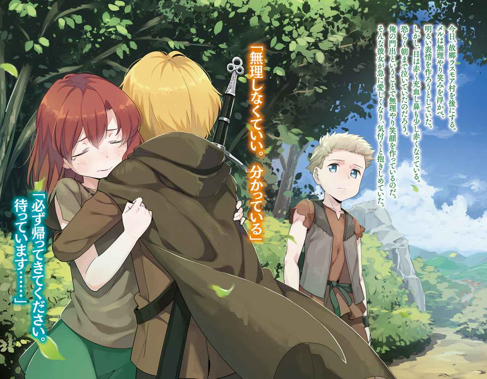
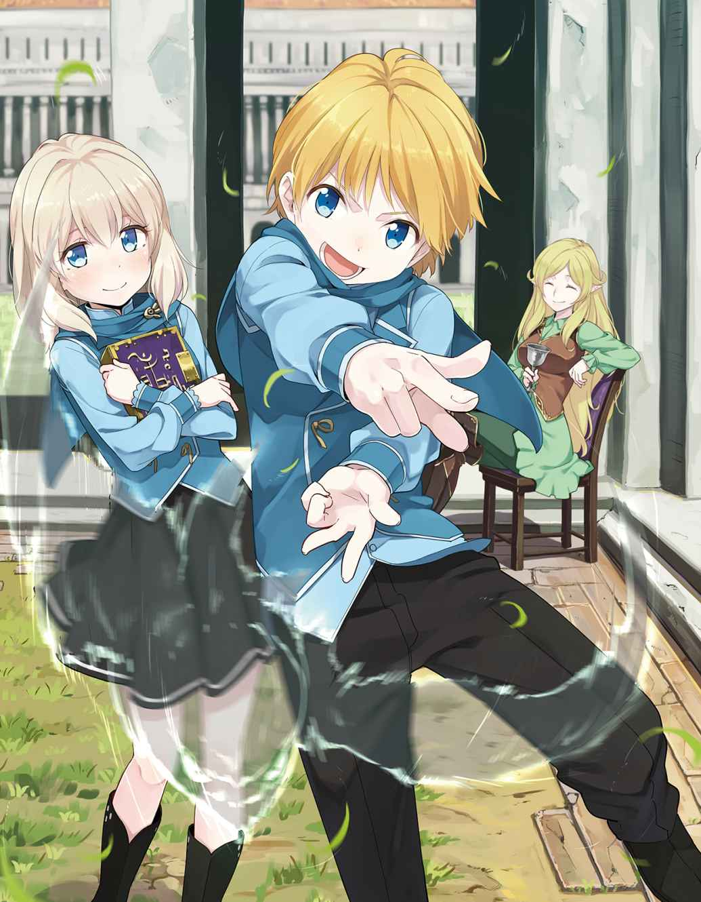
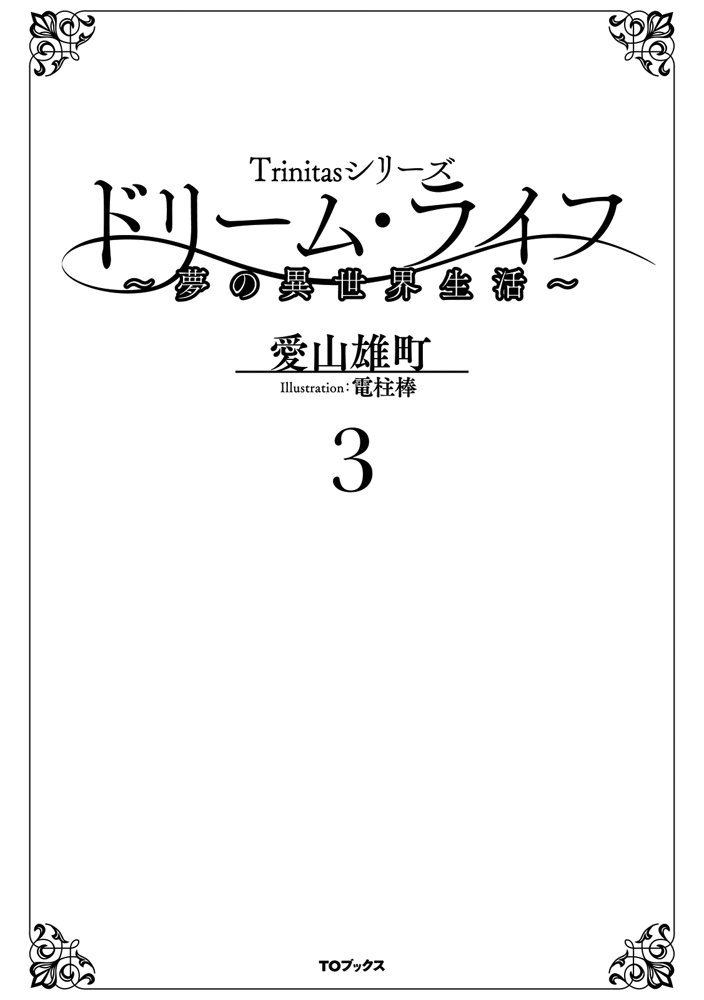
イラスト：電柱棒
デザイン：木村デザイン・ラボ
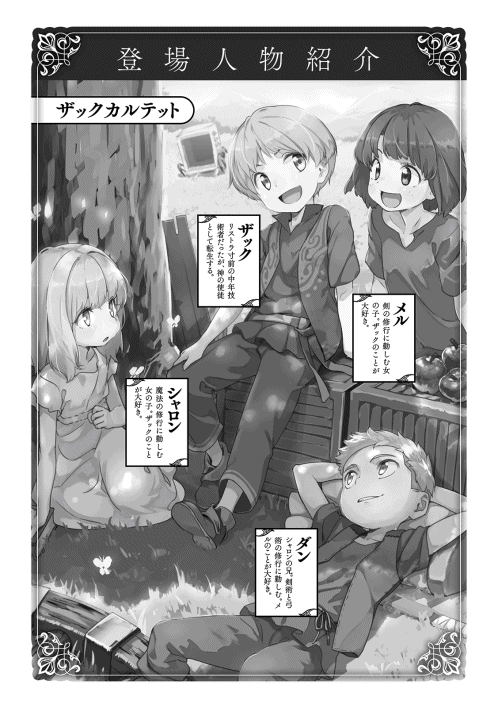
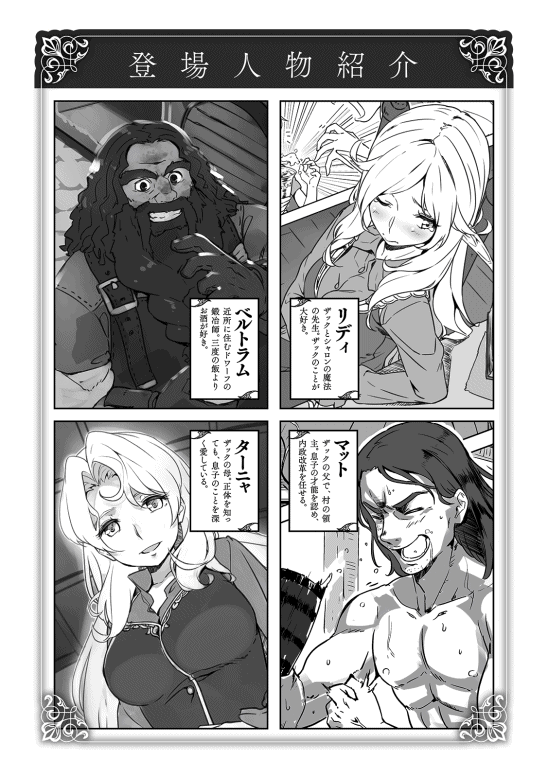
トリア暦三〇一二年七月二日。
初夏の爽やかな風が五つの丘を吹き抜けていく。
透き通った蒼い空、黄金色に輝く眩 い陽の光、生命力あふれる草原の濃い緑......寂しさとは無縁の夏の風景ですら俺にはセピア色に映っている。
今日、故郷 ラスモア村を後にする。
目的地は学術都市ドクトゥス。遠く離れた街に俺と共に旅立つのは幼馴染のシャロン・ジェークスと彼女の父ガイ・ジェークス、そして、最愛の女 リディアーヌ・デュプレ。
旅立ちの感傷に浸りながら朝食を摂 り、出発の準備をしていく。しかし、既に荷物はまとめてある。あとは普段着から旅行用の服装──革製のジャケットとロングパンツ、グローブ、長靴──に着替えていくだけ。
理由 もなく、着替えることに躊躇 いを覚える。両頬をパチンと叩き気合を入れて装備を整える。腰には従士のヘクター・マーロンから贈られた投擲 剣用のベルト、背中には鍛冶師 のベルトラムが打った真新しいバスタードソードを背負う。
ベルトには長さ十五センチメートル程度の投擲剣五本と小さなポーチ。この投擲剣もベルトラムに造ってもらったもので、両刃で肉厚な刃に柄頭が円環になっている。モデルは昔に読んだ忍者漫画に出てくる〝クナイ〟。
そして革のヘルメットとフードつきのマントを手に持つと準備が完了する。
屋敷の前で家族や従士たちに別れを告げていく。別れの挨拶をしながら記憶が戻ってからの七年間を振り返っていた。
（三歳で記憶を取り戻してからもう七年か。いろいろあったな。剣の修行、魔法の勉強、村の改革、森の中での戦闘......充実した毎日だった。今までの人生で一番充実していた時間 を過ごした......）
感慨に耽 りながら、俺と関わりの深かった内政担当のニコラス・ガーランドの前に立つ。
「村のことを、父上のことを頼む」と頭を下げる。
突然、頭を下げられ、ニコラスは慌てて、「頭を上げてください」と俺の手を取った。俺はその手を握り返す。
「今からの方が大変なはずだ。人が増え、村は豊かになっていく。そうなれば村の人たちの心も変わっていく。必ずしも悪いことじゃない。しかし、その変化は村のあり方を変えるかもしれない。そうなればロックハート家も変わらざるを得ない......」
ニコラスは「ザカライアス様......」と不安そうな顔をしている。
「でも、ニコラスなら大丈夫だ。ニコラスがいるから、俺は安心してドクトゥスに行ける。だから、自信を持って村を良くしてやってくれ」
ニコラスに言った通り、これからラスモア村が変わっていくだろう。人が増え豊かになり、そして、教育により知識も増えている。若者は街に出たがるだろうし、大人たちも娯楽を求める。それを止める術はない。
村の人たちが豊かになるのはいい。そのために改革を行ったのだから。しかし、どこかに歪 が出るはずだ。俺はその歪を恐れている。
そして、この村の安全についても不安を感じていた。
これから大人になる子供たちは昔の危険な状況を知らない。世代交代が進めば、訓練を嫌がる若者が増え、自警団の実力は下がっていくだろう。そうなれば、この豊かな村を盗賊たちが狙うようになるかもしれない。この村を守るためにどうすればいいのか俺にも分からない。
今は自警団と言っているが徴兵制に近いものだ。この先、志願兵や傭兵 による専門の守備隊を作る必要が出てくるかもしれない。そうなれば今のロックハート家と従士たちの関係は大きく変わるだろう。
今の家族のような繋がりではなく、雇用関係のような形になるかもしれない。好むと好まざるとに関係なく、ロックハート家が大きくなれば変わらざるを得ない。
「安心してお任せ下さいとは言えませんが、私の力が及ぶ限り、ザカライアス様の愛しておられているこの村を守って見せます」
俺は何も言わず、もう一度彼の手を強く握った。
従士たちの間にメリッサ・マーロンとダン・ジェークスを見つける。
ダンの腕を取り、「メルのことを頼む」と彼の肩を軽く叩くと、彼ははにかむような笑みを浮かべ「任せてください」と力強く頷く。俺は何も言わず、もう一度彼の肩を叩く。
そして、メルの前に立った。
彼女は無理やり笑みを浮かべ、明るい表情を作ろうとしていた。しかし、目は赤く充血し鼻も少し赤くなっている。恐らく朝まで泣いていたのだろう。俺の門出 ということで無理やり笑顔を作っているのだ。
そんな彼女が急に愛しくなり、気付くと抱きしめていた。
「きゃ！」という小さな悲鳴をあげて驚くが、すぐに鼻声で「元気で、ザック様......」とだけ呟 き、そのまま鼻をすすり始める。
「ああ、メルも元気でな」と言うと、メルは嗚咽を漏らし始める。そして、何か言おうと「ザック様......」と呟く。
「無理しなくていい。分かっている」と彼女の体をもう一度強く抱き締める。メルを抱き締めながら、「ちゃんとここに帰ってくるから」と囁 き、彼女の体をゆっくりと放した。
「必ず帰ってきてください。待っています......」と泣き笑いのような、それでいて大人びた表情を見せていた。
もらい泣きしそうになるのを堪えながら、俺も無理やり笑顔を作った。
その後、涙を浮かべている弟のセオフィラス、妹のセラフィーナの頭を撫 でてから、祖父、父、母の前に立ち、「それでは行ってまいります」と無理やり笑顔を作り大きく頭を下げる。
祖父は訓練の時のような厳しい顔で頷 き、父は俺の肩に手を置き、「無理はするなよ。村のことは任せておけ」と笑顔を見せる。
母は俺を抱きしめ、
「あなたなら大丈夫でしょうけど、何かあったら、いつでも帰ってきなさい。ここはあなたの家なんだから」と涙を浮かべていた。
その言葉に涙が込み上げてくる。口を開くと涙が零 れると思い、「はい」とだけ答え、母から離れた。
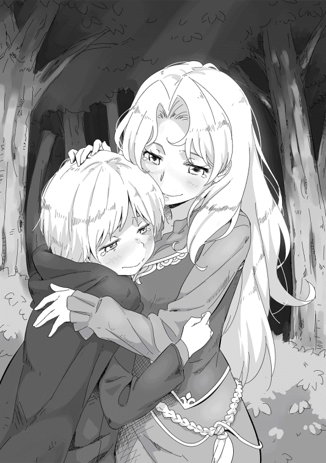
最後にもう一度、「行ってまいります」と大きな声を出し、すぐに馬に跨 る。涙を堪えながら家族に笑顔を向けてから我が家を後にした。
後ろでは従士たちやその家族の「お元気で！ 行ってらっしゃいませ！」と言う声と、セオとセラの泣き声が聞こえていた。
屋敷の門には一緒に出発するリディたちが待っていた。俺は三人に泣き顔を見られたくないため先頭に立ち、馬を進めていく。
こういう旅立ちは初めてだった。
日本にいた時にも別れはあった。しかし、これだけの人たちに心から見送られるのは初めてだ。
俺にこの人たちを逢わせてくれたのはこの世界の神だ。この幸せを与えてくれた神に心から感謝していた。それに報いるために与えられた使命を果たす。そう心に誓った。
館ヶ丘を下り、昨日の夏至祭の余韻が残る村の中を進んでいく。
気だるそうに農作業の準備をする村人たちが、俺たちに気付いて手を振っている。美しい村の風景を目に焼き付けながらフィン川に掛かる橋を渡った。
そこで一旦、馬を止め、後ろを振り返った。
俺の目の前にはアクィラ山脈の峻厳 な頂 を背景に、五つの丘が連なる美しい風景が広がっている。
（ここが俺の故郷だ。ここを守るためにドクトゥスに行く。目的を見失わないために、この風景を心に焼き付けておくんだ......）
涙でかすむ目でその風景を心に焼きつけ、再び馬を進めていく。後ろにはリディがいるが、彼女は何も言わず、俺の好きなようにさせてくれる。
その後、俺は二度と後ろを振り返らなかった。
ドクトゥスまでは約三百七十キロメートルあり、旅慣れない俺やシャロンがいるため、一日当たり二十五から三十キロメートル程度の行程を考えている。また、実質的な護衛はガイ一人しかいない。そのことを考慮し、いずれかの商隊と行動をともにするつもりだ。
実際にはリディもベテランと呼ばれる四級冒険者であり、弓も魔法も使える一流の戦士なのだが、美しい彼女は戦士には見えない。心配した父はガイに加え、ヘクターかニコラスを護衛につけようとしてくれたが、二ヶ月近くも複数の従士を拘束するのは悪いと思い断っている。
今日の目的地は二十五キロメートル先にあるキルナレック。木漏れ日の差し込む西の森を馬に揺られながら進んでいく。一時間ほど進むと主要街道であるアルス街道に出た。
休憩を挟みながらアルス街道を北上していく。木々の間からシェハリオン山が見え始めると少しずつ森の木が疎 らになっていく。木陰の中から出てきたため、照りつける日差しが眩 しい。
午後二時の鐘が遠くから聞こえた。しばらく進むと城壁に囲まれた街が見えてきた。
ガイが「あれがキルナレックの街です」と教えてくれ、俺とシャロンは初めての街に思わず身を乗り出しそうになる。俺は誰に言うでもなく、「早く街を見たいものな......この世界の街を見るのは初めてなんだよな」と呟いていた。
リディにはその呟きが聞こえたようで、クスクスと笑いながらガイに話しかける。
「ザックが目をキラキラさせて街を見たいって言っているわ。あとで案内してあげて......ふふふ」
俺は少しだけむくれた顔をして、「分かったよ。シャロンと一緒にガイに案内してもらうから。リディは宿で留守番だな」と言うとリディの方が本気でむくれる。
「もう意地悪を言わないの。私も一緒にいくわよ」
「冗談だよ。みんなで一緒に行こう。ガイに用事がなければな」
ガイにも俺たちの声が聞こえており、「大丈夫ですよ。各ギルドには顔を出しますが、それほど時間は掛かりません」と明るい声で答えてくれる。
ガイもリディも俺が沈んでいると思って明るく振舞ってくれている。俺にはそのことが分かっていた。
（二人とも気を使ってくれている。本当ならシャロンも寂しいんだろうが、俺の落ち込み方が酷かったからだろうな......だが、俺は前に進まないといけない。だから、もう振り返らない。強くなって戻ってくるまでは......）
こうして、俺は故郷ラスモア村から旅立った。
キルナレックは灰色の城壁に囲まれた城塞都市だ。
城壁は高さ約五メートル、一辺が約一キロメートルの石造りで、長年風雨に晒 された石は黒ずんだものが多く、重厚な風格を感じさせる。
街の中は石造りの建物と木造の建物が混在しており統一感がない。その雑多な感じがする街は活気に溢 れ、威勢の良い声が聞こえてくる。
（まるで昭和の時代の商店街みたいだ。村しか知らないシャロンには刺激が強そうだな）
ガイの案内で街の中を進んでいくと数分で宿に到着する。宿は木造三階建ての思ったより大きな建物で、開け放たれた木窓からカウンターがある食堂兼酒場が見えた。
ガイに馬の世話を任せ、チェックインの手続きをして部屋に向かう。部屋はいわゆるツインタイプの客室で清潔なシーツが掛けられたベッドと小さなクローゼット、二人掛けのテーブルが置いてあった。部屋に風を通すため木窓が開け放たれており、涼しい風が吹き抜けていく。俺は窓際に立ち、街を歩く人々をぼんやりと眺めていた。
（剣を吊るした革鎧 の男か。まるで映画のワンシーンだな......）
ぼんやりと外を眺めていると俺の横にリディが立っていた。その後ろにはシャロンもいる。
「何か面白いものでも見える？」
「そうだな......初めてこの世界の街をこの目で見たんだ。少し感動しているよ」
「この世界か。私も見てみたいな、ザックのいた世界......」
そんなことを話しながら三人で外を眺めていると、馬の世話を終えたガイが部屋に入ってきた。
「今から街の見物に行こうと思いますが、どうしますか」
俺は背中の剣を軽く叩き、「武器はどうするんだ？」と尋ねる。
「この街では武器はなくとも問題ありません。ですが、他の街では宿の中でも持ち歩く方がよろしいかと」と教えてくれる。
「先代様が魔物を狩りつくしておられますので、この辺りは他より遥かに安全です。盗賊たちもあえてロックハート領に近づくことはありません。ですが、他の土地では油断は禁物です」
確かにラスモア村は治安の良いところで、子供たちが村の中で遊んでいても危険を感じることはなかった。
何となく異世界の町の雰囲気を楽しみたいと思い、剣を持って街に出ていく。
ゆっくりと街を見物するため、ギルドでの用事を先に済ませておく。
「明日以降なのですが、予定通り商隊に同行いたします。商業ギルドで同行できそうな商隊を探そうと考えています......」
ガイは歩きながらギルドでの用事を説明していく。商業ギルドで明日出発する商隊を紹介してもらい同行の交渉をするが、北に向かう商隊は午後五時頃にならないと到着しないため、先に冒険者ギルドと傭兵ギルドで情報を確認する。
「どんな情報を手に入れるんだ？」
「冒険者ギルドでは主に出没する魔物の情報を、傭兵ギルドでは盗賊の動向を確認します。南行きの商隊は既に到着していますから、傭兵ギルドには最新の情報が入っているはずです」
その言葉にロックハート家の強さの秘密を垣間見た気がした。
（情報の重要さを理解しているんだな。この世界の常識なのか、ロックハート家の常識かは分からないがさすがだな......）
宿を出て数分で冒険者ギルドの支部に到着した。
木造二階建てで一見すると食堂のような感じの入り口だが、中に入ると木製のカウンターがあり、受付の担当者が数名座っている。依頼を完了した冒険者たちが報告に来ており、カウンターはすべて埋まっていた。俺は初めて見るギルドに興奮していた。
（異世界の定番、冒険者ギルドか。あっ！ あそこに獣人がいる。猫耳っぽい......こっちには犬耳？ それとも狼耳か？......うちの村には獣人は一人もいなかったからな......あそこに掲示板がある。あっ、依頼票が貼ってある......）
俺は年甲斐もなく、子供のようにキョロキョロと周りを見回していた。もちろん見た目は十歳だから違和感はないが、「あまりキョロキョロしないの。シャロンの方がちゃんとしているわよ」とリディに指摘されたほどだ。その指摘に素直に謝罪する。
ガイは苦笑に近い表情で「初めてですから......」と言ってくれるが、リディは「ガイが恥を掻 くでしょ」と容赦 がない。
返す言葉がなく、頬 を掻いて誤魔化していたが、やはり獣人が気になってしまう。
（耳とかってどうなっているんだろう？ 尻尾 もあるのかな？......）
リディに肘 で突かれ、再び我に返る。今度は呆れ顔で何も言わない。カウンターの一つが空いたため、ガイがその席に着いた。
「ここから北の魔物の状況を知りたいのだが」と言いながら二十代半ばの受付嬢にオーブを見せる。
「四級冒険者のガイ・ジェークス様ですね」と名前と級を確認した後、情報を説明していく。
「春以降、四級相当以上の魔物の情報はございません。五級相当も灰色熊が迷い込んだことがありましたが、現在、魔物による大きな被害の報告はありません......」
その会話を聞きながら、〝冒険者〟について考えていた。
冒険者ギルドに登録している冒険者には、その貢献度によって一級から十級の〝級〟が与えられる。十級から始まり、ギルドがランク付けした依頼をこなすことによって級を上げていく。
一般的に言われているのが、七級までが駆け出し、五級と六級が一人前、四級がベテランで、三級以上は一流冒険者と言われ、ここのような地方都市にはほとんどいない。
ちなみに冒険者ギルドの級はギルドへの貢献度であるため、戦闘力とは直接関係がない。一方、傭兵ギルドの級も一級から十級の十段階だが、冒険者とは異なり戦闘力すなわち剣術士や弓術士といった職業レベルによって級が決まる。
四級であるガイはここでは貴重なベテランクラスの冒険者だった。ガイが受付嬢に軽く手を上げて礼を言い、話を切り上げる。
「魔物のほうは特に危険な兆候 は見られないようですね。それでは傭兵ギルドに向かいましょう」
俺たちはガイに促されるまま、傭兵ギルドに向かった。獣人に興味があったが、これから何度も見るだろうと諦める。
傭兵ギルドは冒険者ギルドから少し離れたところにあり、横には商業ギルドがある。建物は冒険者ギルドより大きく、重厚な石造りの三階建てだ。
入り口の木の扉は開け放たれており、金属鎧を身に纏った大柄の傭兵たちが何人も出入りしている。
（強そうに見えるが、どの程度なんだろうな？ ガイが剣術士レベル四十くらい、弓術士レベルが四十七だったはずだが、あの傭兵たちの方が上なんだろうか？）
リディにそのことを聞いてみた。「そうね......」と首を傾げた後、
「商隊の護衛をしている傭兵だと、隊長がガイと同じくらいだと思うわ。ガイだと四級手前の五級だから、一流どころの傭兵団でも充分通用するレベルよ」
「そう言えば、おじい様が三級相当だっけ？ そう考えると一級の傭兵ってどのくらい強いんだろうな」
「一級なんて国に一人いるかいないかっていう化け物クラスよ。少なくとも実際に見ることなんてないわね」と俺の呟きにリディが手をひらひらさせて笑っている。
そんなことを話しながら傭兵ギルドに入っていく。出入りが多いだけあって四箇所ある受付には数人ずつ並んでいた。ガイは近くにいる傭兵に話しかけ、街道の情報を確認していく。数人に話を聞いてから戻ってきた。
「盗賊についても特に危険な兆候は無いようです。もちろん、油断はできませんが。それでは受付で商隊の情報を聞いてきます。申し訳ありませんが、もうしばらくお待ち下さい」
ガイは俺に頭を下げ、受付前の行列に並ぶ。
時間が掛かりそうなため、俺たち三人はロビーにある打ち合わせ用のテーブル席に向かった。
何人かの傭兵たちが椅子 に座っているが、ちらちらとこちら見ている気がする。
（小説のテンプレだと絡んでくるチンピラ風の〝モブ〟がいるんだろうが、さすがにプロの傭兵はそんなことは無いんだな。まあ、気にはしているようだが、仕事に絡むかどうかが気になっているだけなんだろう）
傍目に見れば、俺とシャロンは金持ちか貴族の子供、リディがその世話係、ガイが護衛のリーダーと見えないこともない。特にシャロンは美しい金髪と白い肌、落ち着いた所作から貴族の令嬢のお忍びと言われても誰も疑問に思わないだろう。
（貴族のお嬢様がお忍びで旅をしているなんて噂 になったら大変だ。それ以上にリディがフードを取るとまずいな。これだけの美人まで付いてくるとなると、鴨 が葱 を背負 っているようにしか見えない......）
十五分ほどでガイが戻ってきた。
「危険が増えたという話はないようです。北行きの商隊が到着し始めましたので、商業ギルドに向かいましょう」
俺は頷きながら、今考えていたことをガイに話していく。
「俺とシャロンは金持ちの子供に見えるんじゃないか？」
俺の話を聞いたガイは難しい顔で考え込むが、俺たちを安心させるように笑顔で話し始める。
「そうですね。やはり無理をしてでも大きな商隊に紛れ込んだ方がいいでしょう。ですが、問題はありませんよ。私とリディアさんが無料 で護衛に加わるといえば、どこでも入れてくれますから」
俺たちは隣の商業ギルドに向かった。
商業ギルドには十数台の荷馬車が並び、御者たちが停車場に順序良く入れていく。その横ではチュニックを着た商人らしい男たちが忙しそうにギルドに出入りしており、俺たちはその人の波を掻き分け、中に入っていった。
ガイが若い職員を捕まえ、北行きの商隊を探していると伝える。その職員は何人かの商人を指差し、「あの方たちが北行きの人たちですよ」と笑顔で教えてくれた。ガイは軽く礼を言うとすぐに商人たちとの交渉を始めていく。その姿を見ながら待っていると、頭髪が薄くなった三十代半ばくらいの商人を連れてきた。
「ノートン殿です。明日の朝、北に向けて出発するそうで同行を許可してくださいました」
「ヘンリー・ノートンと申します。あの有名なロックハート家のご子息様とご一緒させて頂けること、光栄に思います」
腰の低いしゃべり方だが嫌みを感じることはなく、誠実そうな印象を受ける。
「ザカライアス・ロックハートだ。同行を許可してくれ、感謝する」
「ノートン殿の話では護衛の了解が必要だそうです。私は今から会いに行くつもりですが、ザック様はどうされますか？」
ガイにそう告げられ、一瞬どうすべきか考えたが、先に会うということにする。もし、俺たちを見てリスクが増えると反対された場合、今ならまだ他の商隊に声が掛けられるからだ。
護衛は近くの宿にいるとのことでノートンとガイに付いていく。宿に入るとノートンが傭兵のリーダーを呼びにいき、すぐに四十歳くらいの屈強な人間の男が現れた。
その男は身長二メートルほどで横幅もがっしりとしており、如何 にも歴戦の傭兵といった雰囲気を漂わせていた。
しかし、俺たちを見るなり露骨に嫌な顔を作る。
「契約と違うんじゃないか？ 契約ではこれ以上荷物は増やさないという約束だったはずだ。明らかにこいつらはお荷物 だ」
ノートンは愛想笑いを崩さず、
「お荷物と言ったら失礼ですよ、バイロン殿。こちらのガイ・ジェークス様はあの獅子心 のゴーヴァン・ロックハート様の従士の方です。それにもうお一人も四級の冒険者で治癒師 ですから」
その言葉に疑問が浮かぶ。
（獅子心 ？ じい様の二つ名ってやつか？ 初めて聞いたな。それよりこのままだと同行を拒否されそうだ）
ノートンにそう説明されても、バイロンと呼ばれた傭兵は不機嫌そうな顔を改めようとしない。
「確かにこの男はできる。その女も治癒師なら役に立つんだろう。だが、貴族の子供を連れて行くのはゴメンだぞ。役に立たないだけじゃねぇ、我が儘を言って足手纏いになるのがオチだからな」
その言葉にガイが激しく反応する。
「気に入らぬな！ ザカライアス様は先代様、ゴーヴァン・ロックハート様のお孫様だ。ただの貴族の子息と同列に扱うとは無礼であろう」
バイロンとガイは睨 み合い、ノートンの愛想笑いが引きつり始める。
（まずいな。俺やじい様のことになるとガイは気が短くなる......しかし、このバイロンという男、見た目通りじゃなさそうだ。ならば......）
俺はバイロンを説得するため、芝居を打つことにした。
「バイロンと言ったな。俺が足手纏いになると言ったが、俺の能力を見なくても分かるのか？」
俺はこの男が見た目以上に冷静であると考えた。俺たちを同行させたくないのはリスクが増えると考えたからだろう。ならば、引き受けざるを得なくした上でリスクを減らしてやれば同行を認めるはずだ。見た目通りの男なら一緒に行動する方が危険であり、その場合は他の商隊に認めさせるための道化になってもらう。
俺の言葉に対し、バイロンは鼻で笑うだけで相手にしようともしない。
周囲には何事かと人が集まり始めており、バイロンの部下らしい男たちも集まってきた。
（部下が来た手前、強気の姿勢を崩せないのか？ まあいい。気の短そうな部下もいることだし、俺の策に乗ってもらうとするか......）
俺はガイに声を掛けながら、バイロンの部下たちを挑発する。
「ガイ、止めておこう。この男は人の力量を計ることすらできん。そのような男が率いる傭兵が優秀であるはずがない。一緒に行動する方がよほど危険だろう......ノートン殿、折角の話だが断らせて......」
俺の挑発にバイロンではなく、彼の部下が乗ってきた。
「聞き捨てならねぇな！ 隊長、この生意気なガキを絞めてもいいっすか？」
この時、俺はその様子を見ながら、ある準備を始めていた。
ガイは俺をちらりと見てから、「絞めるだと！ 貴様！」と若い傭兵に向けて一歩踏み出す。その時、全員の注意が一瞬だけガイに向いた。
俺はそのタイミングを待っていた。
その一瞬の隙を突き、腰のクナイを抜きながら、バイロンの懐 に飛び込んだ。バイロンはガイの暴発には警戒していたが、五メートルほど離れていた俺には注意を払っていなかった。俺は密かに魔闘術を両脚に掛け瞬発力を強化し、いわゆる〝縮地〟のような爆発的な移動を行っていた。
目の端に俺の姿が見えたのか、バイロンが僅 かに反応した。しかし、俺を子供と侮 っていたことが響き、彼の懐に入り込む。
全員の視線が俺とバイロン向いた時、俺はクナイの刃先を彼の心臓付近に突き付けることに成功していた。
バイロンを含め、その場の全員が唖然とし声すら出せなかった。
「この程度の動きについて来れないのか......ガイ、引上げるぞ！」
ガイは俺の言葉に我に返り、「ハッ」と答え、満足げな表情を浮かべる。俺はノートンに目礼して宿を出て行こうとした。
「待て！」
バイロンの制止の声が響く。しかし、俺は振り向かない。
「俺のような子供は相手にしないのだろう？」
俺の嘲笑にも似た言葉にバイロンは「待て！ このまま帰すわけにはいかねぇ」と焦 りを含んだ声で叫ぶ。俺はゆっくりと振り返った。
「何だ？ 子供相手に本気の喧嘩でもしたいのか？」
「ガキに馬鹿にされたままじゃ、この先仕事を続けられねぇ。ライオンハート・ゴーヴァンの孫の実力とやらを見せてもらおうじゃないか」
俺は静かに彼を見つめ、
「その必要があるのか？ 俺を見ただけで足手纏いだといったのはお前だ。少なくとも、それが間違いだと認めないなら俺がここにいる理由はない」
バイロンは俺の言葉に「くそっ、可愛げのねぇガキだ」と小さく呟くと、
「さきほどの言葉については謝罪する。ロックハート殿と手合わせをお願いしたい」
口調まで変えて俺に頭を下げてきた。
「謝罪を受け入れよう。手合わせといっても俺は剣術士としてはまだまだ未熟だ。魔法の実力を見てもらった方がいいかもしれん」
バイロンは「魔術師だと」と呟くが、すぐに同意するように小さく頷き、「ギルドの訓練場で見せていただきたい」ともう一度頭を下げる。
俺の横ではリディが呆れた顔をしており、その横のシャロンの表情は固まり目を丸くしていた。唖然としたままのシャロンの手を引きながら、バイロンと彼の部下、更に野次馬たちを引き連れ、傭兵ギルドの訓練場に向かう。
傭兵ギルドの支部には小さな体育館ほどの訓練場が併設されていることが多い。
キルナレックの支部にも訓練場はあり、盛り土の上に木の的が置いてあるだけの簡単な造りの弓の練習場所があった。
シャロンに「空気の槌 を撃ってくれないか」と耳打ちをする。
シャロンは俺の意図を理解できなかったようだが、何も言わずに頷いてくれた。
観客たちが揃うとシャロンは呪文を唱えていく。徐々に彼女の周りに精霊の力が集まっていき、訓練場の中に突風が舞い始める。その直後、轟音 と共に空気の塊 が的を襲った。
射撃用の的は強力な空気の塊を受け、根元から吹き飛ばされていく。更に盛り土の一部も吹き飛ばし、小さな土煙が上がる。
バイロンを始め、野次馬たちも十歳の少女の魔法に驚き、言葉が出ない。
俺は「よくやった。次は俺の番だな」とシャロンの頭を撫でる。
俺に褒められ嬉しそうなシャロンを下がらせ、俺も同じ空気の槌 を的に撃ち込んだ。
雨天でも訓練ができるように屋根が付いている訓練場内に、ドンという爆音とビリビリと壁を揺らす音が響く。俺の放った魔法は盛り土を半分以上削り取った上、木の的を壁まで吹き飛ばしていた。
（ちょっと威力を高め過ぎたか......施設に損害は与えていないし、まあいいだろう）
今の魔法に中型の熊を吹き飛ばすほどの威力を込めていた。
土煙が収まると大きく抉れた盛り土が見え、野次馬たちから溜め息が漏れる。更に何事が起ったのかと、わらわらと人が集まってくる。
バイロンも言葉を無くしており、しきりに首を横に振っていた。その表情に狙い通りに行ったと満足するが、更に止めを刺しておいた。
「ちなみに俺もこのシャロンも実戦経験はあるぞ。まあ、狼やゴブリン程度だがな」
俺の言葉でバイロンはようやく我に返った。彼は芝居掛かった口調で片膝をつき、
「ザカライアス様だったな。いや、でしたな。先ほどは失礼しました。これほどの魔術師なら足手纏いになることはございません。更に先ほどの神速の足捌き、さすがは獅子心 と呼ばれた方の血を引くお方。是非とも我らと行動を共にして頂きたい」
その芝居がかった振る舞いに疑念が浮かぶ。
（芝居臭いな。何が目的だ？ さっき俺に懐に入られた失点を誤魔化そうとしているのか？ 英雄の血を引く天才だから仕方が無いと......あり得るな。まあ、このくらい頭が回るなら同行しても大丈夫だろう）
俺はバイロンに右手を差し出す。そして、ガイに「俺はいいと思うが、護衛はお前だ。判断は任せる」と伝える。
ガイは即座に「ザック様のお力を認めたのであれば私に異存はございません」と俺にだけ人の悪い笑顔を見せる。バイロンは躊躇 いながらも俺の右手を取った。俺は握手をしながら、ガイに視線を送る。彼は俺のアイコンタクトに小さく頷いた。
（ガイも俺がうまくやったと思ってくれているようだ）
野次馬たちが立ち去り、バイロンとノートン、ガイが簡単な打ち合わせをした後、俺たちは再び街に繰り出していく。
南からの商隊が到着したことで、大通りは更に活気付き、商店の呼び込みの声も大きくなっていた。武装した傭兵らしい格好の男女が練り歩く姿はいかにも〝ファンタジー〟であり、俺は興味津々という感じで落ち着きなく歩いていた。
リディが呆れながら、「そういう姿をみると、さっきの傭兵と渡り合った姿が見間違いかと思えちゃうのよね」とガイに話しかける。
「しかし、先ほどは溜飲 が下がりました。さすがはザック様です。あのバイロンと言う男、剣の腕なら私より上、ニコラス殿が相手でも良い勝負をするほどの強者 とみました」
ガイが嬉しそうな顔で俺に話しかけてきたので、「そう言えばいつ気付いたんだ？ 俺が芝居を打っているって」と聞くと、「そうですね」と少し考えた後、
「バイロンの能力を疑うような発言をされたところからでしょうか」
「何で分かったんだ？」と首を傾げると、ガイは俺が説得を試みようともせず、喧嘩を売るような言動を取ったことから何らかの意図があるのではないかと思ったそうだ。
ガイの観察力に内心で驚いていた。
（意外とよく見ているんだな。じい様もこういう所を気に入って従士にしたのかもしれないな）
俺はあることを思い出し、話題を変えた。
「ノートンやバイロンがおじい様のことを獅子心 って呼んでいたが、あれはどういう意味なんだ？」
その言葉にガイは満面の笑みを浮かべる。
「獅子心 という名は先代様が北部総督閣下より授かった通り名なのです......」
祖父がカエルム帝国の北部総督ラズウェル辺境伯の部下だった頃、当時の辺境伯の嫡男 、現在の辺境伯の命を救ったことがあった。その活躍を聞いた先代の辺境伯がロックハートという名に引っ掛けて、獅子の心＝ライオンハートという通り名と家紋として獅子の紋章を贈ったそうだ。
但し、祖父はそのことで貴族たちから嫌がらせを受けたらしく、先代の辺境伯が隠居したことを機にウォルトたちを率いて、自由な辺境の村、ラスモア村に移住したという話だった。
ぶらぶらと街を散策しながら宿に戻っていく。この宿は清潔で食事の質もいいという話だが、ひとつだけ残念なことがあった。
この宿には浴室がなかったのだ。
旅の疲れを流すのに風呂に浸かりたかったのだが、この宿というか、この街にはそういった施設はないらしい。
「恐らくペリクリトルに行くまで風呂はないと思います。体を拭くのであれば、湯をもらってきますが」
ガイの一言でラスモア村の共同浴場が貴重な施設だったのだと思い知らされる。
「私も遠出をすると良く思い出します。ザック様のお造りになった風呂のことを。あれは本当に村の宝だと思いますよ」
ガイがフロントに湯を頼みに行くと一人だけになる。ベッドに寝転がり、今日一日のことを考えていた。
（今日一日でいろいろなことがあったな。今でも村のことを思い出すと目頭が熱くなる......初めての街には興奮したな。見知らぬ土地、見知らぬ人、見知らぬ文化......明日からは危険な街道に入る。気を引き締めていかないといけないのだが、どうしても心が躍ってしまう......）
自分で思っていたより疲れており、ガイが戻ってくるまでの僅かな時間で寝てしまったようだ。扉を開けるバタンという音で目を覚ます。
（駄目だな。気配察知が役に立っていない......この街は安全だからいいが、気を引き締めないといけないな......）
気づくと開け放たれた木窓から酒場の喧騒 が微 かに聞こえてくる。
（そう言えば、こんな雰囲気は久しぶりだな。日本にいた時以来か......本当に田舎だったんだな、うちの村は......）
リディたちと食事を楽しんだ後、まだ早い時間ではあるが寝ることにした。ベッドに寝転がるとすぐに睡魔に襲われ眠りに落ちた。
翌朝、夜明けと共にすっきりと目覚めた。いつものように朝の鍛錬を行うため、宿の裏庭に向かう。ベルトラムに打ってもらった真新しいバスタードソードを振り始めるが、まだこの剣に馴染んでいない。
（この新品の剣を見て、バイロンも足手纏いと言ったのかもしれないな。もしそうなら強 ち間違ってはいないな......）
十分ほどするとガイも裏庭にやってきた。途中でシャロンも合流し、細身のショートソードを振り始める。
素振りを終えた後、井戸の冷たい水で汗を流し、部屋に戻っていく。その頃にはリディも目覚めており、気だるげな表情で挨拶をしてきた。彼女だけは相変わらずマイペースだ。それが俺のホームシックを癒 してくれている気がした。
故郷を出て二日目の朝。今日の目的地は三十キロメートル先のボウデン村だ。
キルナレックからボウデン村までは深い森が続くわけではなく、草原とその間にある小さな森をいくつか抜けていくだけであり比較的楽な行程だ。
朝食後、ノートンの商隊に合流すべく商業ギルドに向かった。出発の三十分ほど前だが、既に荷馬車が引き出され馬たちが繋がれており、その近くではノートンとバイロンが打ち合わせを行っている。
手を上げながら、「おはよう、ノートン殿、バイロン」と声を掛ける。
ノートンは商人らしい笑みを浮かべて頭を下げ、バイロンはやや緊張気味にピシリという感じで頭を下げる。
午前八時。護衛隊長バイロンの合図で商隊は出発した。
街の北門を出るとノートンの商隊以外の荷馬車が多数あり、街道には長い荷馬車の列ができていた。俺たちがいる商隊だけでも長さは百メートル近い。思ったより長いなと思いながら周囲を警戒しているが、リディは鼻歌混じりののんびりとした雰囲気で馬を操っている。
「今からそんなに緊張していたら目的地に着くまでもたないわよ。こういう時は締めるべきところは締める。緩めるところは緩めるっていう感じでいかないと、肝心な時に力が出ないから」
リディにそう言われ、少しだけ肩の力を抜く。
緊張をほぐすため周囲に目をやると、左手にファータス河のゴツゴツとした岩場が目に入ってくる。そこには柱上の黒い岩が立ち並び、濃い緑と茶色い川面が水墨画のような陰影を作っていた。右に目をやるとアクィラ山脈の険しい頂が夏の日差しを受けて黄緑色の平原と山の深い緑色、崩落した崖の白っぽい岩、山の上の真っ白な入道雲が見事な色合いを見せている。
一時間に一度、小休止を入れ、正午頃に中間地点に当たる広場に到着した。
俺とリディ、シャロンの三人は近くを流れる小川で汗を拭う。山から流れてきた清流は思いのほか冷たく、火照った体に心地良い。さっぱりとしたところで昼食の準備をしていく。
昼食を作るため、鍋に水を入れて擬似 ペルチェ効果の魔法を使って湯を沸かす。沸騰 したところで鍋の中に干し肉と塩を加えて味を調 える。その後、乾燥させた香味野菜を放り込み、更に煮込んでいく。
これは猟師のロブたちと森に入ったときによく作っていたもので、こんな雑な料理だが火が使えない短時間の休憩で食べる分には充分にうまい。煮込みながら吸熱側に水筒を持ってくる。そうすると水筒の中のハーブティが冷え、飲みごろの温度になるのだ。
俺が鍋に手をかざしているのが気になったのか、バイロンが興味深げに覗 き込んできた。
「何をされているのかと思ったら、魔法を使って料理をしているとは......」
俺のやっていることを理解したバイロンは魔法を使った料理に呆れる。
「便利なんだぜ。水筒の水を冷やしてやろうか？」
俺が軽い気持ちでそう言うと、バイロンがおずおずといった感じで水筒を出してきた。
水筒の水を五度くらいまで冷やしてやると、その冷たさに目を丸くする。
「しかし、ザカライアス様は非常識......失礼、驚くべき方ですな。魔術師がこのようなことに魔法を使うなど聞いたことがありません」
バイロンの常識では通常の魔術師は魔力 を節約するため、無駄なことに魔法は一切使わない。酷い魔術師になると、敵と戦っている最中でも自分の判断で勝手に攻撃をやめる。いざという時のためにＭＰを残しておきたいらしいのだが、俺はＭＰの残量が見えるから問題はない。
そのバイロンだが、昨日の訓練場でのデモンストレーションから俺に対して敬語で話すようになった。俺が敬語は不要と言っても「これはけじめですから」と取り合わない。少なくともガイが納得しているのでそれで通しているが、無頼 な感じのバイロンが敬語を使うと、どうにも違和感を覚えてしまう。ただ、所作を含めてわざとらしさがないから、以前どこかの国に仕えていたのかもしれない。
昼食を終えたが、出発まではまだ三十分以上あるため、俺はその場でごろりと寝転がった。空を見上げると、澄んだ青空が広がり、白い雲と雲雀 のような小鳥の鳴き声が聞こえ、館ヶ丘の庭を思い出す。
その後も何事もなく、無事にボウデン村に到着し一夜を明かした。
翌日の七月四日。三十キロメートル先のソーンブローという街に向かう予定だが、今日はカルシュ峠 と呼ばれる難所に入る。
カルシュ峠は勾配がきつい荒れた道であるため、荷馬車にとっては厳しい場所だ。特にノートンの商隊はカウム王国の王都アルスから剣や槍、斧などの重量物を仕入れており、荷馬車に掛かる負担が大きい。更に守備隊がいる都市から離れていることから盗賊や魔物が出没しやすい商隊泣かせの場所だ。
集合場所に到着すると、御者、傭兵ともに顔には緊張の色が窺 えた。
「......今日はカルシュ峠を越える。知っての通り、うちの商隊の荷馬車は重い。くれぐれも道を外さないように注意すること......」
いつもは愛想笑いを浮かべているノートンが真剣な表情で御者たちに注意を与えている。
バイロンも真剣な表情で部下たちに訓示を行っていた。
「今日はカルシュ峠越えだ。注意すべきは盗賊とハーピー。周りだけじゃねぇ、上にも注意しろ！ ここを抜けりゃ、もう難所はねぇ！ 今日一日気張っていけ！」
「「オウ！」」とそれに応える傭兵たちの気合の入った声が響く。
訓示を終えたバイロンが俺たちにも注意を与えに来た。
「今日は皆さんにも厳重な見張りをお願いしたい。ハーピーは女性や子供の肉を好むそうです。上空にも十分気を配るようお願いします」
彼の言葉を聞きながら、別のことを考えていた。
（ハーピーか......いよいよ本格的にファンタジーって感じになってきたな。今日はオリジナル魔法を使った方がいいかもしれないな......）
シャロンは女性や子供の肉を好むという言葉に怯 えたようで、手が小刻みに震えている。俺は彼女を安心させるように震える肩に手を置き、笑顔で声を掛けた。
「大丈夫、俺やガイが必ず守るから。今日は燕翼の刃 を使っていい」
俺の言葉に少し安心したのか、やや紅潮した顔で「大丈夫です。ハーピーが出てきても撃ち落として見せます」と気合の入った返事をする。
出発時間になり、荷馬車がガラガラという音を立てて動き始める。俺たちの配置は商隊の中央部分だ。出発前にガイからも注意を受けていた。
「絶対に離れないように。今日は四人で固まって行動します。私の指示にはどのようなことでも必ず従ってください」
「了解した。だが、俺の安全だけじゃなく、商隊の安全も考えてやってくれ」
ガイは俺の言葉に頷き、リディに小さく言葉を掛ける。リディは頷くと、顔を隠していたマントのフードを勢いよく跳ね上げた。俺が驚いていると、
「ガイから視界を確保してほしいって言われたのよ」と何事も無いように答える。
エルフであるリディは視力がいい。斥候 のガイも視力はいいが、それでも彼女には及ばない。そのことを知っている彼はリディに視界を遮 るフードを外してほしいと頼んだようだ。
「いいのか。俺も視力じゃ負けない。無理をしなくても......」
俺の言葉を遮り、
「あなたの安全のためよ。それにいい加減、鬱陶 しかったからちょうどいいわ」と微笑む。
リディがフードを外した途端、傭兵や御者たちの視線が彼女に集中する。しかし、不躾な視線は一瞬で終わり、すぐに自分たちの仕事に集中していく。
（さすがに危険な峠越えで女に気を取られているわけにはいかないだろう。それにバイロンが俺やガイに対して一目置いているのが、良かったのかもしれない......）
出発から三時間ほどで峠の入口に到着する。そこで三十分ほど休憩した後、緊張しながら峠に入っていく。前方に見える峠はゴツゴツとした岩壁が目立ち、生えている木々も松のような潅木が多く、荒れ果てた印象を受ける。
最初は緩やかだった登り勾配も徐々にきつくなっていく。十センチメートル大の石がゴロゴロ転がる道に荷馬車は苦戦していた。
（岩場を切り開いて作った道のようだな。確かに難所だ。御者には周囲を警戒する余裕はないし、護衛も馬を操るのに意識を向けないといけない。これで岩陰や木陰以外に上空の警戒までとなると、俺程度の馬術では到底無理だな......）
実際、俺とシャロンは馬を操るのに精一杯で、周囲の警戒をするどころではなかった。
さすがにガイとリディは器用に馬を操りながら周囲をしっかりと警戒しているが、二人の緊張がひしひしと伝わってくる。
馬の嘶 きと荷馬車の車輪が出すガタンガタンという音が峠に響いていく。
朝早くに出発したが、荷物が重いためか、他の商隊に次々と追い抜かれていく。そして、峠の中腹に差し掛かった頃には荷馬車の行列の最後尾にいた。更に一時間ほど進むと勾配が徐々に緩やかになる。カーブしているため先は見えないが、峠の頂上が近いようだ。
「もう少しで休憩場所だ！ だが、馬に必要以上に負担を掛けるな！」
バイロンの指示が伝言ゲームのように、傭兵たちによって伝えられていく。
更に三十分。太陽が中天に達した時、ようやく峠を越えた。
峠の頂上付近は高さ十メートルほどの切り立った崖に挟まれた隘路だった。前方には左に緩やかに曲がるファータス河とそれに沿って伸びる街道、その右側には濃い緑色の森が見える。
街道沿いに視線を向けていくと、遠くに黒っぽい小さな四角形があった。
（見晴らしだけはいいな。標高差は二、三百メートルくらいという感じか......遠くに見える四角い街が目的地のソーンブローか......）
休憩場所はここから十分ほど下ったところにあるそうで、俺は知らず知らずのうちにふぅと息を吐き出していた。俺と同じように全員の意識が弛緩 していた。
「崖の上！ ハーピーがいるわ！」というリディの美しいが鋭い声が俺たちの耳を打つ。その声に全員が崖を見上げる。
岩に隠れて見づらいが、そこには茶色い鷲のような翼を持った人型の魔物、ハーピーの姿があった。ハーピーたちは崖の上に止まり、最後尾の俺たちが通るのを待ち構えていたようだ。
（護衛が一番少なくなる最後尾を狙ったのか？ 狡猾 な！）
俺がそんなことを考えていると、二十羽ほどのハーピーが一斉に飛び立った。陽の光を遮る黒い影がいくつも頭上を通過していく。
勢いよく飛び立ち上空を旋回するハーピーたちの姿に、俺は戦慄 した。
（でかい！ 猛禽類 の比じゃない......急降下で襲ってくるつもりか！ あの鋭い爪を振るわれたら俺の革の服など紙と同じだ......）
周りでは傭兵たちが大声で指示を出していた。
「弓術士は迎撃しろ！ 御者を狙ってくるぞ！ 御者を守れ！」
「落ち着いてゆっくり前進しろ！ 焦って馬車を壊すな！」
先頭にいるバイロンやノートンの指示が傭兵たちによって伝えられていくが、その声には焦りが含まれていた。
ハーピーはその鋭い鉤爪 で人を掴 んで上空に舞い上がり、ある程度高度を取ったところで捕まえた者を放し、地面に叩きつけるという攻撃方法をとる。
このため一度捕まえられると、例え剣で斬りつけて鉤爪から逃れたとしても、落下のダメージは免れない。対ハーピー戦はいかに掴まれないかがポイントになる。
特に非武装の御者を狙ってくることが多く、パニックに陥った御者が馬車を暴走させて破損させることが多いらしい。狭い道で馬車が破損すると後続の足が止まるということを学習しているようで、最初は御者の頭を狙ってくるそうだ。
ハーピーの攻撃に対し、ガイは特に声を張り上げることなく、
「ザック様、リディアさん、シャロン。迎撃の準備を」と、冷静な口調で俺たちに指示を出していく。
三メートルを超える巨大な翼を持つ十数羽の魔物を見て俺はパニックを起こしかけたが、ガイの冷静な声で落ち着きを取り戻す。
（落ち着け。この狭い峠の中で襲うのは向こうだって簡単じゃないはずだ。こっちがパニックに陥 って動きが止まるのを待っているんだ......）
ハーピーたちの動きを見ながら、燕翼の刃 の魔法を唱え始める。隣ではシャロンも同じ呪文を唱えており、二羽の透明なツバメが滑るように空に飛び立っていく。
ガイは俺たちを庇うように前に位置し、馬上から矢を射り始めた。
俺の横でリディが得意の空気の槌 の呪文を唱えていた。
一台の荷馬車が狙われたらしく、その上空では十羽ほどのハーピーがしつこく御者を威嚇 している。
リディはそのハーピーたちを狙い空気の槌 を放った。大きな空気の塊が群れに突っ込むと、ハーピーたちはバランスを大きく崩す。
何羽かは体勢を立て直し、上空に舞い戻っていくが、ほとんどのハーピーは必死に羽ばたき浮力を得ようともがいている。しかし二羽のハーピーは浮力を得ることができず、失速したまま地面に激突した。
俺はその光景を見て、魔法の選択を誤ったと気付く。しかし、今はそれを考える時ではないと意識を切り替え、既に発動している魔法のツバメの制御に集中していく。
リディの空気の槌 を受け、必死にバランスを取ろうと羽ばたくハーピーに対し、俺のツバメは静かに、そして素早く接近していく。燕翼の刃 は肉体のような質量のあるものを斬り裂くとその場で消滅する。そのため、今回はハーピーの羽根を狙うことにした。
（あの巨体を翼だけで持ち上げることは、物理的には無理だろう。恐らく、風の精霊の力を利用している。しかし、あれほど必死に羽ばたくということは精霊の力だけじゃ、精々重量の軽減か浮力の増加程度で、翼による飛翔がメインなんだろう。ならば、鳥と同じで風切羽 を傷つければ勝手に失速するはずだ......あとはあの激しい翼の動きに正確にツバメの刃を当てられるかだ......）
ハーピーが翼を広げるタイミングを慎重に計る。目標のハーピーが空気を掴もうと翼を一杯に広げたタイミングを見計らい、右側の羽根を数枚斬り落とす。
茶色い大きな羽根が空に舞い、上昇しつつあったハーピーは左右のバランスを崩して錐揉 み状態で墜落していく。俺は心の中でよしと呟きながら二羽目のハーピーを狙いにいく。
一羽目のハーピーが落ちるのを見たのか、二羽目のハーピーが驚愕 の表情で俺を睨みつけてくる。しかし、高度と速度を失ったハーピーは攻撃することも離脱することもできず、俺のツバメから逃げるように必死に羽ばたくことしかできない。
その努力をあざ笑うかのように、速度に勝る魔法のツバメは逃げるハーピーの羽根を斬り落とす。バサバサという激しい羽ばたき音も空しく、そのハーピーは地面に落ちていった。
更に二羽のハーピーも同じように叩き落とし、魔法のツバメはその役割を終え、空の中に消えていった。
俺の横ではシャロンが青い顔をしながらも魔法のツバメを操って二羽のハーピーの首を斬り裂いていた。
（いつも思うんだが、シャロンの方が細かい制御ができている。あとでどうやっているのか聞いてみよう）
そんなことを考える余裕があったのはすでに上空には五羽くらいしか残っていなかったためだ。ガイが二羽、他の弓術士も数羽のハーピーを撃ち落としており、戦いの趨勢 は既に決していた。
俺とリディが撃ち落としたハーピーは傷を負いながらもまだ生きていた。しかし、地面に落ちたハーピーは傭兵たちの敵ではなかった。空では手が出せず苛立つ剣術士たちに次々と斬り殺されていった。
バイロンから「撃ち方止め！」の指示が届き、弓術士たちは警戒しつつも矢を射る手を止めた。上空に残っているハーピーは三分の一にまで撃ち減らされたため、悔しげな鳴き声を上げながら森に戻っていく。
（どうやら撃退できたようだな。今回の反省は魔法の選択ミスだ。さすがにリディは戦い慣れている。彼女の選択した空気の槌 が今回は最適だった......結果的には俺が一番多く撃ち落としたが、リディの攻撃の後じゃなければ、あれほどの戦果は上がらなかった......これが経験の差という奴なんだな......）
戦闘の混乱も収まり、休憩場所に到着した。バイロンの指示で警戒を強める中、彼は俺たちのところにやってきた。
彼は真剣な表情で俺の前に立ち、その場で片膝を突く。
「一昨日、足手纏いといった件でございますが、改めて謝罪いたします」
「既に謝罪を受けている。謝罪は不要だよ」
バイロンは「ですが......」と言葉を続けそうだったので、
「まだ、危険な場所なのだろう？ それに俺はもう気にしていない」と言って強引に話を打ち切った。
バイロンはそれに頷き、持っていた魔晶石を俺に手渡してきた。
「先ほどの戦果でございます。ザカライアス様が四羽、リディアーヌ様が三羽、ジェークス様とシャロン様が二羽ずつでございます」
「俺は止めを刺していないが？ 共同で倒した敵は協議するんじゃないのか？」
バイロンは大きく破顔し、「地面に落ちたハーピーの止めなど、手柄にはなりません」と取り合わない。
結局、十三羽のハーピーを倒していた。傭兵たちの目には、俺たち四人でほぼ全数を撃ち落としていることに対する尊敬の色が窺える。
「それにしても二十羽近いハーピー相手に、一人のケガ人を出すことなく撃退したのは初めてです。いえ、それ以前に五羽以上倒したことは初めてなのです......我々にとってはそれほど相性の悪い魔物なのですよ......」
商隊の護衛はさまざまな状況に対応することが求められ、剣術士、槍術士、弓術士など近距離から遠距離まで対応できるようバランスよく構成されている。このため、空から襲ってくる魔物に対しては有効な対抗手段が少なく、剣従士や槍術士は武器を振り回して追い払うしかできない。
ちなみにシャロンに魔法のツバメの制御法を尋ねた結果だが、「ツバメは餌 を求めて飛びますから、餌が敵の首近くにあるように教えるんです」と教えてくれた。
つまり、シャロンは〝ロックオン〟と〝自動追尾〟機能を使っていたのだ。
（俺の魔法はツバメの形をした〝ラジコン〟に過ぎなかった。だが、シャロンはツバメを〝生き物〟として見ていた。だから彼女のツバメは魔法生物と呼べるほどの完成度に達していたんだな。この辺りはセンスの差なんだろう。やはり、シャロンは天才だな......）
その後、シャロンにイメージの仕方を教えてもらい、俺の燕翼の刃 の魔法も自律制御型の追尾魔法に進化した。
その後はトラブルもなく順調に進み、無事ソーンブローの街に到着した。
宿に入ると、難所を損害もなく無事通り抜けられたといって宴会が行われた。まだ残りの行程がある状態で宴会というのは気を抜き過ぎではないかと思ったが、この先は安全な土地であり問題ないというバイロンの言葉を信じ、少しだけ宴会に付き合った。
ソーンブローから冒険者の街ペリクリトルまでは約八十キロメートル。
この辺りは右手にアクィラ山脈、左手にポルタ山地、そして、正面にサエウム山脈と、大きな山々に囲まれた盆地になっている。
ソーンブローを出発した後は何事もなく順調だった。一度だけ雨に降られたものの、ペリクリトルに近いメイグル村に無事到着する。
メイグル村はペリクリトルに食糧を供給している人口千人ほどの農村で、ソーンブローのような城壁はなく、村の周囲に簡単な囲いがあるだけの長閑 なところだ。
ラスモア村のような丘ではないが、森に向かって緩やかにのぼっていく草原には、真っ白な羊や茶色い牛たちがのんびりと草を食 んでいる。そんな風景を見ながら明日には到着できる冒険者の街ペリクリトルに思いを馳せていた。
（冒険者の街か。その言葉を聞くだけで心が躍る。どんな街なんだろう......）
魔術学院の入学試験は七月二十二日に行われる。手続きは試験の前日まで可能であり、二十一日までにドクトゥスに入ればいい。
ペリクリトルからドクトゥスまでは約二百キロメートルで、この二つの街を結ぶ街道は魔物や盗賊の討伐が頻繁 に行われており、アルス街道より安全だと言われている。ガイやリディに聞くと旅慣れた者なら五日もあれば充分で、俺たちでも八日あれば問題なく着けるらしい。折角なのでペリクリトルには三日間滞在し、いろいろ見て回ろうと思っている。
メイグル村からペリクリトルまでは僅か二十五キロメートルの行程だ。
メイグル村を出発するとすぐに緩やかな起伏の草原に入っていく。時々、野生の鹿が現れるが、危険な獣や魔物の姿は全く見られない。あくびの出そうな長閑さだが、陽が高くなるにつれ、夏の強い日差しが俺たちを焼いていく。
遠くから正午の鐘が聞こえてきた。小さな丘を越えると、そこには数キロメートルにも及ぶ木製の塀で囲われた巨大な街があった。その巨大な街に思わず目を見開いてしまう。
（凄いものだな。どのくらいの広さなんだ？......）
他の街に比べ、ペリクリトルの歴史は浅い。街ができる以前より交通の要所であったが、カエルム帝国とラクス王国との国境に近く、紛争を恐れて中々開発されなかった。
およそ五百年前、カエルム帝国の政策が大きく変わり、この辺りは両大国の緩衝地帯となる。しかし、東のアクィラ山脈から絶えず魔物が流れ込んでくる危険な場所であることに代わりはなかった。
戦争の終結により商業都市アウレラから伸びるアウレラ街道の流通量が飛躍的に伸びると魔物による被害が無視できなくなり、ペリクリトルの前身となる街が作られた。そして軍隊を用いることなく効率的に魔物を討伐するシステムとして、冒険者ギルドという組織が作られ、その本拠地としてペリクリトルは発展していく。
正午過ぎ、商隊はペリクリトルの南門前に到着した。
ペリクリトルの入市税は安い。一人当たり大銅貨一枚、五十ｅ 。日本円でいうとだいたい五百円だ。馬も同額で他の街に比べ半額以下と圧倒的に安い。
まだ早い時間ということもあり、野菜を積んだ近隣の農家と俺たちと同じように早朝に出発した商隊の荷馬車が数台いるだけで手続きはすぐに終わった。南門を抜けたところで、ノートンが声を掛けてきた。
「今回はご同行いただき、ありがとうございました。皆様のおかげで魔物の被害も受けず、順調に移動できました。御用がございましたら北地区のノートン商会にお越し下さい」
ノートンはそう言うともう一度頭を下げ、荷馬車に戻っていく。護衛の傭兵たちも明るい笑顔で軽く会釈をしながら、俺たちの前を通り過ぎていく。
最後に傭兵隊長のバイロンが立ち止まった。
「この回はいい勉強になりました。傭兵が必要な時はいつでも声を掛けてください。基本的にはここペリクリトルにいますから、傭兵ギルドでバイロン・シードルフと言っていただければ分かります」
「分かった。バイロンの腕なら頼りになる。何かあれば声を掛けさせてもらうよ」
バイロンは深々と頭を下げ、ノートンたちの後を追っていく。彼らが見えなくなると、「面白い男でしたな」とガイが声を掛けてきた。
「そうだな。確かに面白い奴だったよ。傭兵というのがどういうものなのか、少し分かった気がする」
商隊と別れた後、荷物や馬を預けるため宿を探すことにした。あてがあるのかとガイに聞くと「十五年ほど前にいただけですから。リディアさんは？」とリディアに話を振るが、「私の方がもっと昔よ」と手をひらひらと振っている。
とりあえずガイが昔使っていたという宿を探しに南地区を歩くことにした。
ペリクリトルは大まかな分け方で言うと、南が冒険者の街で北が商業の街だ。人口五万人とこの辺りでは最も大きな都市であり、南北を貫く大通りには人が溢れている。
脇道に入っても多くの人とすれ違い、その多くが防具を身につけ剣を下げている冒険者たちだ。冒険者の中には人間だけでなく、これまであまり見なかったエルフ、ドワーフ、獣人など雑多な種族が多数おり、俺は映画のセットの中に紛れ込んだような錯覚 に陥っていた。
しばらく歩くと、ガイが一軒の宿の前で立ち止まる。
木造三階建ての立派な建物で、入口に吊るされた看板には〝荒鷲 の巣〟という文字と白頭鷲のような獰猛 そうな鷲が木の上の巣にとまっている絵が描かれていた。
「ここが昔使っていた宿なのですが、確か代替わりしていたはずです。前に来た時には満室で泊まれなかったのでどうなっているかは......」
「どうせ、どこがいいのか分からないんだし、ここにしよう」と提案すると、リディも「私もここでいいわ」と異存はなかった。ガイが部屋の空きを確認しにいくと、すぐに「空いているそうです」と声が掛かる。
「馬の世話は有料ですが、既に依頼してあります。荷物だけ降ろして部屋に入りましょう」
この世界の宿のチェックインというのは結構いい加減で、部屋が空いていれば大抵入れてもらえる。
馬を厩舎 に連れて行き、荷物を手に宿の中に入っていくと、三十代半ばの女将 らしい女性がフロントで待っていた。オーブの確認の後、食事の時間などの説明をしていく。
「......夕食は四時以降ならいつでも食べられるわ。朝は夜明け前くらいからね。湯がいるなら早めに言ってね。一応、一階に浴室があるからそこで湯浴みができるわ......」
一泊二食付きで六クローナ。馬は飼葉と簡単な世話がついて一日二クローナ。キルナレックやソーンブローといった地方都市とほとんど同じ値段であり思ったより安い。
女将が説明していると、奥からガイと同年代の男が出てきた。その男は太鼓腹で顔は酒焼けのように少し赤い。前掛けをしているからここの調理人なのだろう。
その男はガイを見るなり「昔、ここに泊まっていたことがなかったか？」と首を傾げている。
「十五年ほど前だが......もしかして、ヨアンか？」
ヨアンはこの宿の現在の主人でガイが泊まっていた十五年前には調理人をしていたそうだ。ガイが旧交を温めている間に、女将のミラに昼食のうまい店がないか聞いてみた。
「それなら、うちで食べておいきよ。簡単なものしか出せないけど、そこらの食堂よりはうまいからさ」
「そうさせてもらおうか」というとリディたちにも異存はなかった。
食堂は思った以上に広く、テーブル席が二十ほどにカウンターが十五席ほどある。今はテーブルの上に椅子が乗せられ、開店前であることが窺える。
俺たちが部屋に荷物を入れてから食堂に戻ると、十五分ほどで料理を持ったヨアンが厨房から出てきた。
「夜の材料から適当に作ったからな」
そう言って出てきたものはパンと豚肉のソテー、野菜のたっぷり入ったスープだった。食べてみると予想以上にうまい。
「うん、うまいな......この豚肉に使っている香辛料は何なんだろう？ それにこのスープの出汁も変わった香りがする......」
横で見ていたヨアンは俺の独り言に少し驚き、「いい舌をしているな。坊主」と言って肩を叩 く。
それを見たガイが「俺の仕える家のご子息だ。粗略 に扱うんじゃない」と一睨みする。俺はガイに「別に構わない」と言って、ヨアンに「俺はザカライアス・ロックハート。ザックでいいです」とニコリと笑いかける。
ヨアンは「ロックハート？」と一瞬首を傾げるがすぐに合点がいったのか、ガイに向かって「あのロックハートか。そういや、お前さん、ロックハート家に仕えるって出ていったんだっけな。本当に仕えているとはな」と感心していた。
ガイは得意げな表情で「そういうことだ。だから敬意を持って対応してくれ」と釘を刺す。ヨアンは頷くものの困ったような表情をしていた。
「分かったが、俺は貴族様の作法なんざ、知らねぇぞ」
俺はガイに向かって小さく頷き、ヨアンに話しかける。
「この街は冒険者の街でしょう？ 聞いた話だと身分に関係なく、実力がものを言うところだそうじゃないですか。なら、実力を認められるまでは普通に対応してくれればいいです」
「ガハハ！ さすがに話が分かるな。獅子心 の血筋だけのことはある」
ヨアンはそう言うと俺の肩をもう一度軽く叩く。
「なら、俺にも敬語はいらん。だが俺もザックと呼ばせてもらうぞ」
俺が頷くとガイは不本意なのか不満そうな表情を浮かべたが、俺が軽く首を横に振ると渋々それを認めた。
その後、調味料で意気投合した俺とヨアンは、リディたちが呆れて立ち上がるまで、香辛料の話で盛り上がった。
ちなみに使っていた香辛料はホワイトペッパーで、カエルム帝国の南部から商業都市アウレラ経由で入ってくる高価なものだそうだ。他にもシナモン、カルダモン、クローブなど様々な香辛料が手に入ると教えてくれた。
（ここは当たりかもしれない。この〝荒鷲の巣〟を〝スコッチ〟の卸先 にしてもいいかもしれない。あとで持ってきたスコッチを飲ませてみよう）
今回のドクトゥス行きで、ここペリクリトルに滞在する予定としていたため、三年物のスコッチを五本だけ持ってきた。うまく行けばペリクリトルの食堂に卸せるかもしれないと思っていたからだが、いきなり当たるとは思わなかった。
（やはり旅は面白い。バイロンもそうだがこのヨアンも。この先もいろいろな人に会えるんだろうが、本当に幸先がいいな......）
俺が話し込んだため少し時間を浪費してしまったが、まだ三時にもなっていない。ガイの案内でペリクリトルの街に繰り出す。
「どこを見に行きましょうか？」と尋ねてきたので、俺はすかさず、「冒険者ギルドの総本部を見たい」と答えた。
「それほど面白い場所ではありませんが」と言いながらも、俺たちを先導して歩き始める。
街の中心部に冒険者ギルドの総本部はある。四級冒険者でもあるガイに交渉してもらい、見学させてもらったのだが、役所というか県庁とか政令指定都市の市役所といった感じで大して見るものはなかった。
思いの外、短時間で終わったため、時間が余った。ガイが南地区にある武器屋街を見てはどうかと提案してきたので即座に乗った。
（武器屋というか鍛冶師はベルトラムしかいなかったからな。ドワーフの鍛冶師だから、ある意味ファンタジーの定番だが、やはり冒険者の街の武器屋というのは、ＲＰＧ 好きにとって心躍るものがある......）
南地区の東寄りには多くの武器屋や防具屋、道具屋が軒 を連ねている。
需要があるためか、武器屋でも片手剣専門、槍専門といった分業化が進んでおり、看板を見ているだけでも楽しい。
ガイの馴染みの鍛冶師、ドワーフのギーゼルヘールの店で時間を潰し、〝荒鷲の巣〟亭に帰っていく。宿に着く頃には午後五時頃になっており、宿泊している冒険者たちが次々と宿に入っていく。
俺たちは浴室を使うため、女将のミラに湯を頼むが、中に入ると浴槽 は無く、石畳の床の上に大きなたらいが置いてあるだけだった。
（やっぱり浴槽は無いのか......大商人が泊まるような高級な宿じゃないと無いんだな）
ガッカリとしながらも石鹸 を使い、汗を流す。
（夏のこの時期だから、浴槽が無くても気にならないが、ドクトゥスでは何か考えないといけないな......）
リディたちも汗を流し終わり、一緒に食堂に下りていく。リディも吹っ切れたのか、それともこの先の道中が比較的安全だと判断したのかは分からないが、普通に顔を晒している。
午後六時を過ぎており、食堂は冒険者たちで混雑していた。それでも広い食堂にはまだ空いている席があり、テーブル席を一つ確保する。
今日のメインの魚料理は鱒 のポワレで濃厚なバターに爽やかな香草を効かせたソースとスパイスを軽く効かせた鱒の身が絶妙だ。
（これだけの腕を持っているならスコッチを卸してもいいだろう。あとは運搬と売り方だな......売り方についてだが、ヨアンという男は食に関しては信頼できそうだから、樽 売りでも品質を落とすことは無いはずだ。問題はどうやってここまで運ぶかだ......）
俺はノートンの商隊を利用できないか考えていた。
（明日にでもノートンの商会を訪ねてみよう。あとは付き合いの長そうなバイロンとも話した方がいいな......）
一応の方針が立ち、ガイたちにスコッチの輸送のことと、明日の予定を話していく。
「......ということで、明日はノートン商会とバイロンを訪ねたいんだが、何か予定は考えていたか？」
「元々、明日は商業地区である北地区に行こうと考えていましたから、何も問題はありません。ですが、ノートン殿はともかく、バイロンが捕まるかは微妙ですね」
俺がどういうことだと聞くと、
「一仕事終えた傭兵ですから、今日明日は羽目を外しているでしょう。西地区にある色街 にいる可能性が高いと思います」
シャロンは色街と聞いて首を傾げ、父親であるガイに質問していた。ガイはどう説明していいのか困りながら答え、俺とリディはその姿を微笑みながら見ていた。
夕食後、スコッチの瓶を持ち、ガイと共にカウンターに座った。リディは部屋に戻ったが、シャロンも興味があるようで一緒にいる。
料理が一段落したタイミングを見計らって宿の主人ヨアンを呼んだ。
「面白い酒があるんだが、舐 めてみないか？」
俺の一言に「面白い酒だと？」とヨアンがすぐに食いつく。
「恐らく飲んだことがないものだ。俺の故郷ラスモア村の特産品なんだが、今はアルスのドワーフにだけ売っている特殊な酒だ......」
俺はスコッチについて説明していくが、徐々に熱を帯びていく。
「......まだ若い酒だが、もう少し寝かせればもっとうまくなる。アルスのドワーフたちはジョッキ一杯、銀貨二枚、つまり二十クローナで飲んでいる酒だ......」
その金額にヨアンは目を丸くする。
「二十クローナだと......どんな酒なんだ？ そこにある壷 にそれが入っているのか？」
彼には細長い陶器の瓶が壷に見えたようだ。木のカップを取り出し、スコッチを注いでいく。
「酒精 が強いから舐めるように飲んでくれ。エールの五、六倍は強いからな」
ヨアンの前にカップを置きながら、飲み方について注意を促す。
「最初は香りを味わってほしい。強過ぎるようなら水を加えて薄めてもうまいはずだ」
ヨアンの心は目の前の高級酒に釘付けになり、俺の話は耳に入っていない。彼はゴクリと喉を鳴らしてカップに口をつける。その直後、強いアルコール臭にゲボッとむせる。
「何だ、この酒は......だが、確かに変わった香りがするな。樽の木の香りだけじゃねぇ......なあ、こいつには何を加えているんだ？」
「何も加えていないさ。原料は麦、水、それに発酵させるための酵母 だけだ」
俺の言葉にヨアンは首を傾げる。
「いや、俺の舌と鼻は違うと言っている。これを作った奴に確認してくれ」
俺はどう答えようか一瞬悩むが、「それの作り方を考えた のは俺だ。だから間違いなく混ぜ物はしていない」と説明する。
ヨアンは目を見開き、カップから口を離した。そして、ガイに向かって、
「疑うわけじゃないが本当なのか？ この酒をこんな子供が......ガイ、俺を担いでいるんじゃないよな」
「ああ、ザック様のおっしゃる通りだ。これはこの方がお考えになり、村の酒造りの責任者に作らせている物だ」
ヨアンは俺の方を見て小さく首を振り、「担いでいるわけじゃなさそうだな」と言って、再びスコッチに口を付ける。食堂は喧騒に包まれているが、俺たちの周りは不思議な静けさが支配していた。しばらくしてから、ヨアンが呟くように感想を話していく。
「水で割るにはもったいない強さだ。なあ、ザック。これを俺に飲ませたのはここで売りたいからか？」
俺が頷くと、更に話を続けていく。
「俺もこの酒はうまいと思う。だが、値段が高過ぎる。二十クローナだと五級クラスの一日分の稼ぎと変わらん。そんな酒を飲もうとする奴は酒好きのドワーフくらいしかいないだろうな」
俺は値段の話が出ると思っていたので、対応策を考えてあった。
「そもそもスコッチっていう酒はジョッキでガブ飲みするものじゃない。今みたいにゆっくりと味わって飲むものなんだ。だから、小さめのカップで少しずつ売ればいい。それに生産量が少ないから味の分かる店にしか売るつもりはない。つまり、ペリクリトルで一軒か二軒しか置くつもりはないんだ。それにアルスのドワーフたちの間で結構評判になっている。最悪でもドワーフの職人たちに売れるから十分に儲けは出るはずだ」
俺は独占的に売ることができること、かつ、販路があることを示唆した。
この街にいるドワーフは職人と冒険者が大半だ。職人は冒険者を相手にしているから、そこそこ収入はいい。冒険者であるドワーフも七級以下の初心者は少ないから金は持っている。
更に重要なのはドワーフのネットワークは侮れないということだ。アルスで評判になっている酒の噂は鍛冶師仲間を通じて既にこの街のドワーフにも届いているだろう。
アルスの鍛冶師たちを見て分かるように、ドワーフたちは酒を飲むことに関しては金に糸目はつけない。だから、普通の客に売れなくても商売が成立つと説明すれば、ヨアンが乗ってくると考えたのだ。
ヨアンは「ちなみに一樽いくらなんだ？」と不安そうに尋ねてきた。
「アルスのドワーフたちは千クローナで買っていくよ。うちとしても生産量が増やせないから、そのくらいじゃないと儲けがないんだ」
ヨアンは「千か......」と呟く。
この街で繁盛している宿とはいえ、一回の仕入れで百万円を掛けるのはかなり厳しいのだろう。
「何なら後払いでもいいぞ」
俺がそう言うと、ヨアンが「いいのか！」と声を上げる。
「その代わりと言っては何だが、条件が二つある。一つはキルナレック渡しとすること。つまり、輸送費と輸送時のリスクはそちらが持つということだ」
「輸送費か......俺に商人の伝手 はねぇが、そこは何とかしてくれるのか？」
彼の問いに俺は頷く。
「明日、その交渉をしてくる。少なくとも明後日には交渉をまとめるつもりだ」
「分かった。費用を見て考えさせてくれ。で、もう一つの条件は？」
「こっちは簡単なことだ。うちの酒はここだけで売ること。つまり転売はなしということだ」
ヨアンは頷きながら、少しだけ首を傾げる。
「俺に異存はねぇが、理由を聞かせてくれねぇか」
「理由は簡単だ。俺としてはうちの酒の品質を落としたくないんだ。ここなら間違いなく真っ当に酒を出してくれる。そう信じたからヨアン、あんたに売るんだからな。だが、他の連中が同じように売ってくれるとは限らんだろう。他の酒を混ぜたり、黙って水を加えたりする奴が出てこないとも限らんからな」
俺の言葉にヨアンは大きく頷き、「よく分かっていやがるぜ」と破顔する。
「あれだけの料理を出せるんだ。味にこだわりが無いはずがない。そんな料理人が紛い物を出すとは思わんからな」
その後、細かな取り決めについて、確認していく。
「どちらにしても、今すぐの話じゃないんだ。一ヶ月後くらいにガイがここに寄るから、そこで答えを聞かせてくれればいい」
ヨアンはコクリと頷くと、ガイの方を向く。
「ガイ、本当にザックは十歳なんだな。話をしていると、俺より年上にしか思えんのだが......」
ガイはどう答えていいのか、少し困ったような表情を見せるが、
「間違いなく十歳になられたばかりだ。まあ、お前がそう思うことがおかしいとは俺も思わんがな」
宿の主人ヨアンとスコッチに関する交渉を終えて部屋に戻ると、すぐに彼との交渉結果を契約書の雛型 に落とし込んでいく。
石鹸製造法売却時に学んだこの世界の商習慣だが、基本的には日本とそれほど変わらない。商法などの法律が整備されていないため、売買契約金額、日時、受け渡し方法、補償の有無などを記載するだけだ。個人情報や管轄裁判所がどうのという条文はない。
契約書を作りながら、今回の契約のことで悩んでいることがあった。
スコッチ販売の試金石となるペリクリトル進出という一大事業を、たった一度一緒に旅をしただけのノートンに任せていいのか。もっと端的に言えばノートンという商人を信用し切れないでいたのだ。
理屈的には彼を信用する根拠はある。彼の商会は大手ではないだろうが、傭兵団と専属契約が行えるほど、経営は安定している。その商人が僅かな金で信用を失いたいとは思わないはずだ。
それに彼の商会の主となる事業はアルスのドワーフたちから武具を買い、ここで売ることだ。つまり、重要な取引相手であるドワーフたちを敵に回すことは考え難い。ロックハート家のスコッチの最大の顧客は何といってもアルスのドワーフたちであり、もし酒絡みでうちとトラブルになったと知れ渡れば確実に本業に影響する。
逆に言えばうちとの取引を望むかもしれないということだ。
翌日、商業地区である北地区に向かった。
北地区に入り大通りでノートンの商会のことを聞くと、すぐに彼の商会の場所は見つかった。ノートン商会は木造二階建ての店舗とその横に大きな倉庫が併設されているが、店舗販売はしていないのか一見すると店には見えず、小さな看板がなければ、ただの大きな家と間違えそうなほどだ。
ノートン商会について情報を集めるため、ガイが近所の人にさり気無く話を聞いていく。数人から話を聞いたが否定的 な情報はなく、三代目であるヘンリーも手堅い商売を行っているようだ。
（ネガティブ情報なし。経営者も手堅いか......本来なら財務状況なんかも知りたいところだな。貸借対照表 、損益計算書 、キャッシュフロー計算書 くらいがあれば、ある程度は判断がつくんだが......）
商会の評判を確認した後、街を散策しながら傭兵ギルドに向かう。
北地区は商業地区と称されるだけあり、多くの商店が並んでいる。食料品街に入ると穀物専門の商店や肉類専門の商店などが軒を連ね、更に保存食専門の商店などもあった。
食料品の商店が並ぶ地区から服や雑貨類を売る地区に移っていく。シャロンは初めて見る大きな商店街に目を丸くしていた。
服屋や生活雑貨の店なども覗き、目的地である傭兵ギルドに到着した。
傭兵ギルドは木造三階建ての大きな建物で、裏には他の支部にあるような訓練場も併設されているが、正午に近い時間ということもあり、傭兵の姿はほとんどなかった。
ガイが受付でバイロン・シードルフが泊まる宿を確認する。受付はすぐに教えてくれたが、簡単に住所を教えてくれたことに疑問を持った。ガイに確認すると普通は教えることはなく、今回はバイロン自身が依頼したのではないかとのことだった。
ギルドで聞いた宿に向かうが、生憎彼は不在だった。宿の従業員が昼過ぎには戻ってくると教えてくれたので、あとで来ると伝言を頼み、街の散策に戻る。ブラブラと時間を潰し、再びバイロンの泊まる宿に向かった。
バイロンは宿に戻っていたようですぐに現れた。
「一度来ていただいたようで、ご足労をお掛けしました」
「いや、約束していたわけではないからな。もし良ければ、少し時間をもらえないか」
俺の言葉にバイロンは頷き、ひと気のない宿の食堂に向かう。
「今日は少し聞きたい事があって来たんだ。ノートン殿の商会に仕事を頼もうと思っているんだが、護衛であるバイロンの意見を聞きたいと思ってね......」
俺は昨夜ヨアンに話したことをバイロンにも話していく。
「......要はうちの特産品である酒をここペリクリトルに運びたいということなんだ。ノートン殿の商売のこともあるし、俺の頼みを聞いてくれそうか意見を聞きたい。もちろん、雇い主との関係もあるから話せる範囲でいい」
彼は少し考えた後、静かに話し始める。
「ノートン商会は手堅い商売を行う商会です。現会長のヘンリー氏は冒険するような性格ではありません......」
バイロンの話は俺たちが調べた話と同じだった。
「......更に会長はロックハート家と誼 を結びたいと考えているようです」
「うちがアルスのドワーフに酒を売っているからか？」と呟くと、彼は少し驚き、「はい」と頷く。
「会長は将来、アルスの武器を北のラクス王国にも売りに行きたいと考えているようです。ですが、気難しいドワーフたちはノートン商会が買うような安価な武器を作ることを良しとしないのです」
「なるほどな。仕切っている親方連中は質のいい武器を売りたい。一方、ノートン商会はそこまでの品質は求めていない。商会としては数を揃えるため、若い鍛冶師に武器を作らせたいが、親方連中がうんと言わなければ若い連中に仕事が回らず数が揃わない。そう言うことか」
バイロンは「おっしゃる通りです」と大きく頷く。
「ですから、会長はアルスに行く途中、ラスモア村に立ち寄って、そのドワーフが好む酒を運びたいと思っているはずです」
ノートンの思惑は分かりやすい。酒を運ぶ業者の頼みならドワーフの鍛冶師たちも多少の無理は聞いてやろうと思うだろう。俺は十分な情報を得て満足し、「助かったよ」とバイロンに頭を下げる。
俺の方の話が終わり帰ろうとしたが、バイロンは居ずまいを正して動こうとしない。
「私の方からもザカライアス様に話があるのですが、聞いていただけますか」
俺は何の話だろうと思いながら、「ああ、構わないが」と頷く。それを見たバイロンも頷き、更に真剣な表情で俺の目を見てから、静かだが力強い声で話し始めた。
「私がロックハート家に、ザカライアス様に仕えることは可能でしょうか」
俺には彼の質問の意図が分からなかった。
「俺は当主でもなければ嫡男 ですらない。だから、ロックハート家に仕えることと、俺に仕えることでは意味が全く違う」
「それは分かっております。ですが、私バイロン・シードルフという男が武の名門ロックハート家に仕えるに値する男なのか、更にはザカライアス様ご本人に仕えるに値する男なのかをお聞きしたいのです」
俺は返答に困り、バイロンに逆に質問を返した。
「先に確認させてくれ。なぜロックハート家に？ そして、なぜ俺に仕えたいんだ？ それに俺の考えじゃ、バイロン、お前は以前どこかの国に仕えていたはずだ。それも平の兵士ではなく、それなりの地位に就いていたのだろう？」
彼は僅かに驚きの表情を見せ、こくりと頷く。
「やはり、あなた様には隠し事はできません。おっしゃる通り、私はカウム王国の国境守備隊、トーア砦 におりました。平民ですが、これでも百人の部下を持つ隊長を務めていたのです。ですが、五年前の魔族の侵攻で......」
彼の話はこうだった。
彼はカウム王国の国境守備隊の士官として、魔族の土地クウァエダムテネブレとの国境の要、トーア砦を守っていたが、事なかれ主義の司令官の拙 い指揮により、多くの部下、戦友が戦場に散った。最終的に勝利を得たため、司令官を含め上層部は誰も責任を取らなかった。
そのような組織に疑問を持った彼は軍を辞めることにし、傭兵として第二の人生を歩み始めた。そして、僅か三年で十五人の部下を率いる傭兵になった。
「......私はその時思ったのです。自分が信頼できる人に仕えようと。あなたは必ず大成する方だと思っています。ですが、私にとって重要なのはそのことではありません」
彼はそこで言葉を切り、笑みを浮かべる。
「今回の旅で私はあなたを見ていました。そして、あなたなら部下を絶対に裏切らないと確信したのです」
俺は彼の過大な評価に慌てて首を振る。
「俺はそんなできた人間じゃない。それに俺は次男だ。兄上がロックハート家を継ぐことを心から祝福している。だから俺がロックハート家を継ぐ可能性はほとんどない。そんな俺についてきても、いいことは一つもないぞ」
俺の言葉にバイロンは笑みを崩さず、更に首を横に振る。
「そのようなことはどうでも良いのです。私が自分の人生をあなたに賭けてみたいと勝手に思っているだけですから」
俺は答えに窮 していた。
正直、ここまで俺を買ってくれるのは嬉しいが、俺はまだ十歳であり、神に与えられた使命もある。そう考えるとこの男の想いに応えることは難しいだろう。
「分かった。仮定の話だが、お前を俺の配下にするとして今のお前の部下たちはどうするつもりだ？ 慕っている隊長が辞めたら困るだろう」
「その点は問題ありません。少なくとも副隊長のカーティスを一人前の隊長にするまでは、手を引くつもりはありません。それが部下を持った者の責任だと思っていますので」
バイロンはそう即答した。
（確かに身分が高いだけの無能な司令官ではこの男は使いこなせないな。かといって俺に使いこなせるのか？ はっきり言って、俺は昔から人を使うのが苦手だ。今でこそ、ニコラスやガイたちが助けてくれてはいるが、それもロックハートという名があるからに過ぎない。だが、その名も兄上が跡を継げば意味を成さない......）
そして、もう一度、バイロンをしっかりと見据える。
（本当に勿体無いことをしたな、カウム王国は。この男なら部下も慕うだろうし、判断も的確だろう......だが、これほどの男がなぜ十五人程度の傭兵隊の隊長なのだろう？）
その疑問を口にしてみた。バイロンは首を横に振りながら、「それは買い被りです」と笑う。
「知らないうちに私のところに集まっただけです。それに、軍という組織を離れた以上、私にはこれ以上の部下は扱えません。一人一人に目を配ろうと思えばこれが限界ですから」
俺はその答えに驚き、言葉を失った。
（俺なら可愛がった部下を失えば、二度と部下を持とうと考えない......これだけの面倒見のよさがあれば、ロックハート家 の従士になっても、すぐに頭角を現すだろう）
俺はバイロンの問いに答えを返すことに決めた。
「先ほどの問いに対する答えだが......」
俺の言葉にバイロンは表情を引き締める。
「お前との付き合いはつい数日前からだ。まだ、お前の人となりを理解したとは言いがたい。だが......」
その言葉に彼は僅かに肩を落とす。
「......これは俺の直感に過ぎんが、バイロン・シードルフという男はロックハート家に仕える価値がある男だと思う......」
バイロンは「では！」と眼を輝かす。しかし、俺はそれを無視して話を進めていく。
「......だが、俺個人に仕えるというのは断る。理由は分かるな？」
「ザカライアス様がご次男であり、ご実家にあらぬ波風を立てたくないと......」
俺は「そうだ」と頷く。そして、俺の考えを説明していく。
「兄は優しく、そして、聡 い方だ。俺個人に仕えると宣言して、うちの従士になりたいと言ったとしても反対はされないだろう。父や祖父はそのことを認めないかもしれない。しかし、俺が推挙した上でお前の力量、人格を認めれば従士に取り立てる可能性は高い。それに祖父なら兄に対してこう言うだろう。〝この男を自らの器量で従えて見せろ〟と......」
バイロンは何も言わず、黙って俺の話を聞いている。
「......例え祖父が、獅子心 と呼ばれる英雄がそう言ったとしても、生え抜きの若い従士たちとの間に軋轢 が起こるはずだ。確かにうちの従士たちはロックハート家、特に祖父に対して尋常じゃない畏敬 の念を抱いている......」
その言葉にガイが小さく頷く。
「......だから一層、嫡男である兄を蔑 ろにするような男を認めたくないはずだ。そして、その間に立つのは俺じゃない。父であり、兄だろう。特に兄はお前に認められようと努力するはずだ。領主の嫡男が従士に対しておかしなことをと思うだろうが、兄はそういう男なんだ」
ガイが頷き、バイロンは小さく首を横に振る。
「では、私はザカライアス様にお仕えすることはできないと」
俺が言い難そうにしていると、バイロンはさばさばとした、そして僅かに寂しそうな表情で「分かりました。諦めましょう」と言った。
俺は小さく頷いたが、彼の表情を見て思わず「一つだけ方法がある」と言ってしまった。
「俺の名前を出さずに祖父に認められろ。自分の力だけで祖父ゴーヴァン・ロックハートに会い、自分の力を認めさせるんだ」
そして、横で聞いているガイに「お前も口利きはするなよ」と釘を刺す。
「知恵を絞ってライオンハート・ゴーヴァンに会え。そして、自分の力を認めさせるんだ。そうなればガイと同じ位置に立てる。だが、祖父に認められるのは生半可なことじゃないぞ。なあ、ガイ？」
ガイは「私も一年ほど掛かりましたから」と昔を懐かしむような表情で答える。
バイロンは「一年ですか......」と呟く。
「祖父に認められれば、父も従士に取り立ててくれるだろう。そして、従士になってロックハート家を、ラスモア村をよく見てくれ。俺に仕えるということがどういう意味を持つのか、俺が何を考えているのかが分かるはずだ。その上でまだ俺に仕えたいというのなら、俺も考えてみる。偉そうな言い方だが、今はそうとしか答えられない......」
バイロンは何か思うところがあるのか、小さく頷いていた。
正直な話、バイロンのことは良く分かっていない。
確かに優秀な傭兵で、部下想いのいい指揮官だとは思う。しかし、彼の思惑がどのようなところにあるのか、本当に俺の将来性を見込んで話を持ってきたのか、どこまで信用していいのか分からない。
はっきり言って自分に人を見る目があるとは思っていない。しかし、修羅場を潜り小さな開拓村で苦労してきた祖父は人を見る目も確かだ。父にしてもそうだ。祖父の陰に隠れて気付きにくいが、そこらの領主とは比べ物にならないと思っている。
その祖父や父にバイロンという男を見てもらおうと思った。そして二人に認められる人材ならどのような思惑があろうと、ロックハート領の発展に役立ってくれるだろう。
ロックハート家の従士になれば、現当主、次期当主がどういう人間か分かるはずだ。今のバイロンは俺という存在を通してロックハート家を見ているに過ぎない。だから、時間をおきたいと考えたのだ。
その後、三十分ほど雑談をしてからバイロンと別れ、ノートン商会で会長のヘンリー・ノートンに面会を申し込む。
ノートンが現れるとすぐに用件に入り、スコッチの輸送の話を始めた。彼は条件を確認すると、「承 りましょう」と即答した。
話すうちに、彼の目的が分かってきた。予想通りロックハート家と良好な関係を作り、アルスのドワーフたちの心証を良くしたいらしい。
（これで〝スコッチ〟のペリクリトル進出は何とかなりそうだ。後は父上とニコラスがうまくやってくれるだろう）
その夜、宿の主人ヨアンにスコッチの輸送がうまく行きそうだと報告する。回答は先でいいと言ったのだが、既に結論が出ていたようで、いつでもスコッチを置くと約束してくれた。
三日間のペリクリトル滞在を終え、ペリクリトルを出発する。
ここから目的地ドクトゥスまでは約二百ｋｍ。余裕を持った行程でも八日間でドクトゥスに到着する計算だ。受験の申請期限は七月二十一日だから、三日前には充分に到着できる。
ペリクリトルからドクトゥスまではアウレラ街道を西に進むことになる。
アウレラ街道は全体で見れば決して安全な街道ではないが、ドクトゥスまでは見通しのいい平原地帯であるため比較的安全だ。だから、ここから先は商隊に紛れ込むことなく、四人だけで進む計画にしている。
午前八時。薄曇りの湿った空気の中、〝荒鷲の巣〟亭の主人ヨアンに見送られ、宿を出発した。朝の混雑時間ということもあり、人や荷馬車でごった返す通りを西門に向かう。
門を通り抜けてアウレラ街道に出ると、そこにも荷馬車の長い行列ができていた。
ガラガラという荷馬車の立てる騒音が平原を響く中、騎乗している俺たちが進んでいく。
俺は思わず、「さすがに凄い商隊の数だな」と声に出していた。
リディが俺に馬を寄せてきた。
「そうね。ここにはカウムの金属製品、ラクスの食料、サルトゥースの工芸品なんかが集まっているわ。そして、それはこの先のアウレラに、アウレラからカエルム帝国の南部やルークス聖王国にも流れていくわ......」
ペリクリトルからアウレラまでは約八百ｋｍ。その間は基本的には陸路しか輸送手段がなく、荷馬車による輸送に頼っている。
ペリクリトルからドクトゥス間の主要な都市は五十ｋｍ先にあるオートン、百ｋｍ先にあるアーマスウェイトで、どちらもカエルム帝国の城塞都市だったところだ。
トラブルに見舞われることなく順調に進み、二日目の目的地であるオートンの街に到着した。
オートンの街の宿に入ると、商人たちの様子がおかしいことに気付いた。聞き耳を立ててみると、明日以降は天気が崩れるらしく出発時間やその後の行程について話し合っているようだ。
雨が降ると荷馬車の運行に多少の影響はあるとは考えていたが、それほど深刻な話だとは思っていなかった。
「雨が降るって騒いでいるが、それほど大変なのか？」とガイに聞いてみた。
「この辺りの雨は激しいことで有名なのです。酷い時には街道が冠水 して、長いと三日ほど動きが取れなくなることもあります」
地形的な問題なのか、夏のこの時期、アーマスウェイトからドクトゥスに掛けては集中豪雨に見舞われることが多いらしい。舗装されていない土の街道で大雨が降ると道が冠水してしまい、荷馬車が道を外れて車輪を壊したり、馬が足を取られてケガをしたりするなど厄介なのだそうだ。
「もしかしたら、ここで足止めされるかもしれないってことか......まだ、試験まで十日あるから、十分間に合うが......できれば先に進んでおきたいな」
リディも俺の意見に頷く。
「そうね。明日は無理してでもアーマスウェイトまで行っておいた方が良さそうね」
ガイもリディと同じ意見のようで、明日は夜明けと共に出発し、五十ｋｍ先のアーマスウェイトを目指すことになった。
翌七月十二日。夜明け前に起床し出発の準備を整えると、夜がゆっくりと明けていくが、黒い空が灰色になるだけで、一向に夜明けという感じがしない。
空を見上げると雲は重く垂れ込み、南に見えるはずのポルタ山地は灰色の雲に隠れていた。更に前方に見えるはずのサエウム山脈も同様に姿は見えず、時折西から吹く風には、にわか雨の後のような冷気が含まれていた。
俺が空を見上げていると、ガイが宿の前に馬を連れてきた。
「宿の主人に聞きましたが、この天候なら今日一杯は持ちそうとのことでした。予定通りアーマスウェイトに向けて出発しましょう」
「そうだな。雨が酷いようなら、無理せず途中の街で泊まればいい。その辺りの判断はガイに任せるよ」
俺たちはまだ薄暗い中をアーマスウェイトに向けて出発した。
同じように早朝に出発した荷馬車たちが並んでいたが、軽装の俺たちはすぐに追い抜き、障害物のない街道を西に進んでいく。
何度か休憩を入れながら、正午前に中間地点にある街に到着した。
まだ、雨粒は落ちておらず、アーマスウェイトを出発した東向きの旅人たちに聞いても、雨は降っていないとのことで、俺たちはそのままアーマスウェイトに向かうことにした。
午後一時頃、ついに雨が降り始める。
一時間もしないうちに雨脚が強くなり、目を開けていることすら難しくなった。街道の路面もぬかるみ始め、時折馬が足を取られるようになる。
通過した町から既に十ｋｍほど進んでおり、目的地まではあと十五ｋｍほど。順調なら三時間ほどで目的地に到着できるが、雨脚はどんどん強くなっており、先に進むべきかの判断が難しい。
ガイに疲れているなら引き返すかと聞かれるが、雨の中で馬を操るため精神的に多少疲れている程度で俺の体の方は全く問題ない。それより、体力のないシャロンの方が心配だった。
「俺は大丈夫だが、シャロンはどうだ？」
雨のため、額に髪の毛を貼り付けたシャロンは、「大丈夫です」と気丈に答える。
ガイが「皆に迷惑が掛かる。無理ならはっきりとそう言うように」と小声で確認するが、首を横に振り、「大丈夫」と答えていた。
「では、予定通りアーマスウェイトに向かいましょう。多少遅くなっても構いません。疲れた場合や、馬に異常を感じた場合は、すぐにお伝え下さい」
俺とシャロンが頷くと、すぐに出発する。
その後も雨脚は強まる一方で、マントの隙間から冷たい水が入り込んでくる。油が塗り込まれ防水性を上げてあるはずの革のマントが水分で重くなっている。
更に一時間ほど進み、大きな木の陰で休憩を取った。まだ、三時を過ぎたところだというのに辺りは分厚い黒い雲のため、黄昏時 のように暗くなっている。
シャロンは体が冷え切っているのか、唇が少し紫色になっていた。大丈夫かと聞いても首を縦に振るだけで一切弱音を吐かない。
俺は水筒のハーブティを暖め、「体が冷えているから、これを飲んで」と言ってシャロンに手渡す。小さく頷くと、水筒のお茶を飲み始め、少しだけ頬に赤みが戻る。
「シャロンが心配なのだが」と小声でガイに確認する。
「大丈夫です。もし、足手纏いになるようなら置いていきます」
口ではそう言っているが、彼の表情の端々から娘を心配していることが分かる。俺は自分の荷物を馬から降ろし、「シャロンの馬に俺の荷物を載せて、二人乗りでいく」とガイとリディに伝えた。ガイが首を横に振り、それなら自分の馬に乗せると言い出した。
「俺の方が軽い。その分、馬に負担が掛かりにくいだろう。それにガイとリディは自由に動ける方がいい」
リディも「仕方ないわね」と賛同してくれたが、当のシャロンが納得しない。
「大丈夫です。ご迷惑は掛けませんから......本当に大丈夫なんです」
どう見ても疲労の限界に達しており、あと二時間の騎乗に耐えられるとは思えない。
「駄目だ。あと二時間でアーマスウェイトに着くんだ。それまで俺にしっかりと掴まっていてくれ」
半ば強引にそういうと、彼女は小さく頷いた。
馬術の練習のときに弟 や妹 がせがんできたので、二人乗りは何度かやっている。だから、それほど苦手ではない。
俺が先に乗って手を差し出すと、彼女は恥ずかしそうに「お願いします」と呟きながらその手を掴んだ。リディが「あらあら」と言いながら笑っている。
シャロンが俺にしっかりとしがみついたのを確認し、再び街道に出て行った。
再出発したものの、雨脚は一向に弱くならず、バケツをひっくり返したような豪雨が続いており、マントのフードを叩く雨の音がうるさい。
街道は完全に水に浸かり、僅かに轍 の間の盛り上がった部分の草だけが見えている。
既に前方から来る旅人の姿はなく、後ろから軽装の旅人が追い抜いていくだけだ。背中にシャロンの体温を感じているためか、濡れそぼった服も暖かく感じられた。
途中で休憩を挟むがシャロンも多少回復したのか、顔色に赤みを取り戻していた。それでも念のため、そのまま二人乗りで行くことにした。
午後四時を過ぎた頃から、雷鳴が響き始める。それでも安全な避難場所がないため、そのまま進んでいく。
午後五時半過ぎ、ようやく目的地アーマスウェイトに到着した。門を見た時、思わず安堵 の息を吐き出していた。
この大雨のため、俺たちが到着した東門にはほとんど人はおらず、すぐに入市の手続きは終わる。街の中に入ったが東西を貫く大通りは大雨のせいで人通りは無く、店舗も閉められている。門衛に聞いたところでは中心からやや北に行ったところに宿があり、今日は商隊の到着数が少ないため、どこも空いているだろうとのことだった。雨の中、宿を見つけたのは午後六時を回った頃だった。
宿に入ると、ようやく人心地をつけ、ホッと息を吐く。
ガイが手続きをしている間に、俺はシャロンの様子を確認する。
「体調は大丈夫か？ 寒気がするとか、熱っぽいとか、何か異常があれば、すぐに治してやるよ」
彼女は首を横に振ってから少し恥ずかしそうに「ありがとうございました」と言って、ぺこりと頭を下げてきた。
俺は「気にしなくていいから」と手を軽く上げ、横にいるリディに話しかける。
「この分だと、明日以降も動けそうに無いな。まだ、時間的には余裕があるが、ペリクリトルで時間を潰したのが悔やまれるな」
「ここからドクトゥスまでは百ｋｍくらいよ。三日もあればつけるから、焦る必要は無いわ。それより、結構長いこと濡れっぱなしだったから、風邪を引かないようにしないと」
俺は「大丈夫だ」と答え、「治癒魔法で何とかできる」と笑う。
「風邪はともかく、疲れたから早く着替えたいところだな」
ガイが手続きを終えて戻ってきた。
「夕食はすぐ食べられるようです。やはり、宿泊客は少ないようですね」
そう言うと、俺たちに部屋の鍵を渡して、馬を厩に連れていくため、外に出て行った。
俺たちは部屋に入り、ようやく濡れた服を着替えることができた。
翌七月十三日。
いつものように夜明け前に目覚めると、木窓を叩く雨の音が聞こえた。どうやら、昨日の雨が降り続いているようだ。
いつものように裏庭に向かうが、雨脚は昨日よりやや弱まったものの、出発できるほどではない。
（今日はここで足止めだな。まあ、昨日無理をしたから休養を取ってもいいか）
ロックハート家では雨でも朝夕の鍛錬は欠かさない。俺とガイは雨の中で無心に素振りを行った。
素振りを終えて部屋に戻る時、食堂の窓から何人もの宿泊客が物珍しそうに見ているのに気付いた。物好きな奴だとでも思っているのだろう。
訓練を終え、濡れた服を着替えてから、朝食を摂りにいく。
ガイが宿の主人に今日の天候を確認していたが、やはり今日一日はこのまま降り続くらしい。四人で朝食を摂りながら、今日の予定を話し合う。
「今日の出発は見合わせましょう。昨日からの雨で街道は酷い状態になっているでしょうから」
ガイの意見に俺とリディも頷く。
俺はこれからどうするか、三人に意見を求めた。
「そうだな。この雨の中だと街の見物もできないし、店も閉まっているだろう。ギルドの訓練場を借りて訓練をするか、それとも一日休養するか」
「そうね。普通の受験生なら宿に篭って勉強するんだろうけど、あなたたちに限ってはその必要も無いし......私は宿でゆっくりするわ」
リディは一日、宿でゴロゴロするつもりのようだ。
リディは体を動かすことがあまり好きではない。そして結構な量を食べているのだが、その割には全く太る気配が無い。ペリクリトルの街で見たエルフも、皆スリムだったので種族的な特性なのかもしれない。
ガイは「私は体を動かしに行きます」と答え、シャロンも頷いている。
俺もそれに付き合うことにし、朝食後、マントを羽織って雨の街に出て行った。
アーマスウェイトの冒険者ギルドは街の中心近くに、傭兵ギルドと並んで建っていた。
訓練場はそのすぐ裏手にあり、既に何人かの傭兵や冒険者たちが訓練に汗を流している。俺たちも蒸し暑い訓練場に入り、久しぶりに本格的な訓練に汗を流す。
そんな中、一人の傭兵の姿に眼を奪われた。
その男は三十代半ばの人間だが二ｍ近い巨漢で、それに見合った大型の両手剣を手にしていた。横には仲間らしいエルフの男性がおり、時折二人で模擬戦をやっていた。
その男は巨体にもかかわらず、動きは正確で鋭い。祖父の剣速も速いが、それを遥かに上回る速度で振られた剣は十ｍ以上離れたところからでも風切音が聞こえるほどだ。
横にいるエルフは飄々 とした感じだが、その手に持つサーベルの動きは祖父の腕にも匹敵 しそうだ。
俺は無意識に「あの二人は凄いな」と口に出していた。
ガイも俺と同じ感想を持っていたのか、
「世の中は広いですね。先代様以外にあれほどの使い手がいるとは思いませんでした」と賞賛していた。
（名のある剣術士なんだろうな......もう少し、俺に腕があれば教えを請いにいったんだが、今の俺では教えを請う資格すらない）
俺たち以外にもその二人に気付いた冒険者が何人か二人に話しかけていた。
二人はそれを煩わしいと思ったのか、三十分ほどで訓練場を出て行った。
「もう少し見たかったんだが......きっと名のある傭兵なんだろうな」
結局、彼らの名は判らなかったが、強烈な印象が残った。
正午前に訓練を切り上げ、一旦宿に戻る。そして、昼からも訓練に時間を費やした。
翌日も雨は降り続き、更に二日経った七月十六日の夜に、ようやく雨が止んだ。
翌日の七月十七日。朝から青空が広がり、俺は五日ぶりに太陽の光を浴びた。
その日の街道はぬかるみ、順調とは言い難かったが、翌日以降は天候も完全に回復し、翌々日の七月十九日、俺たちは学術都市ドクトゥスに入ることができた。
二十年以上勤めたカウム王国軍を辞めたのは五年ほど前のことだ。
危険なトーア砦で魔族や魔物と戦い、着実に腕を上げていき、遂には部隊長にまで出世した。それでも何の後ろ盾もない平民の俺が百人の部下を持つには十五年以上掛かった。
俺が率いる部隊は優秀だった。出撃しても生還率は高く、兵たちの士気も砦で一番だった。俺がやったのは大したことじゃない。平時は部下たちを鍛え、戦時は事前に偵察を行い撤退ルートを確保する。そんな当たり前のことをしていただけだが、他の隊長、特に貴族たちはその当たり前のことすらせず、兵たちを無為に死なせていた。
特に酷かったのが、オズワルド・グレンジャーだった。当時に二十五にもなっていない若造で、ノーリッシュ公爵家に生まれたというだけであの重要な砦の司令になった。無能なだけならまだよかった。奴は無能な上、有害だったのだ。
奴が司令になって三年、砦は最悪の状況だった。奴自身、左遷 させられたと愚痴 を言い続け、酒を飲んで思いついただけのいい加減な命令を乱発し、俺たちを辟易 とさせた。それだけならまだいい。奴は永遠の闇 側に一度も偵察隊を出さず、周囲の警戒を怠ったのだ。
結局、奴のせいで砦は落ちた。いや、奴でなくとも砦は落ちたかもしれない。あれほどの大軍は今までになかったからな。それでも奴以外の司令なら、援軍が来るまで持ち堪えていただろう。奴は敵の大軍を見て、いの一番に逃げ出していたのだから。
俺たち現場の兵がいかに奮闘しようと、まともな指揮が行われなければ勝てるものではない。結局、俺たちは奴に見捨てられた。何とか後方の町に落ち延びたものの部下の半数は戦死していた。それでもまだ俺の隊はましだった。ほとんどの部隊は全滅し、町にたどり着くことすらできなかったのだ。
半数の部下が生き延びたことで、奴は自分の命令に背き、俺たちが勝手に撤退したと喚 き始めた。しかし、俺たちは最後まで殿 を守っていた。生き残った隊長連中がとりなしてくれて、何とか処罰は免れたが、その後は事あるごとに危険な戦場に送り込まれた。
俺はこの戦いに生き残ったら、こいつを斬り殺して自分も死のうと決めた。
しかし、アクリーチェインで魔族に大勝利した後、奴は王都に戻り王宮内から出てこなくなった。俺のような一介の隊長は理由がなければ王宮内に入ることすらできない。俺は仕方なく、奴の暗殺を諦めた。
抜け殻のようになったが、食っていかなければならない。しかし、このまま軍にいるつもりはなく、だからといってできることは剣を振り回すことだけだ。結局、傭兵になり、王国を去った。
傭兵になる時、考えたことがある。二度と宮仕えはしない、そう決めたのだ。
そんな俺の考えを変えてくれた人物と出会った。それは僅か十歳の少年だった。
最初に会った時の印象は最悪だった。真新しい大型の剣を背負った姿から剣術を齧 った貴族の子供にしか見えなかったのだ。
しかし、その印象はすぐに拭い去られた。僅かな隙を見せただけで剣術士レベル五十二、四級傭兵である俺が懐に入り込まれ、急所に短剣を突きつけられたのだ。魔族相手の激戦に生き残った俺が僅か十歳の子供に手玉に取られた。
その少年、ザカライアス・ロックハート様への驚愕はすぐに戦慄に変わった。
あの状況で冷静に状況を見通す洞察力。俺が何を考えどう動くか、それを冷静に計算し、更に従士であるガイ・ジェークス殿と無言の連携を取る決断力。それ以上にジェークス殿を信頼する度量に驚いた。
あの後、ジェークス殿がザカライアス様ご本人に信服していることを知ったが、それでも俺は羨ましかった。もし、兵士時代にこの方のような信頼に値する上官がいてくれたら、俺の部下たちは死なずに済んだだろう。そう考えた時、ジェークス殿に強い嫉妬 を覚えた。この方だけでなく、ゴーヴァン・ロックハート卿という人物も同じように信頼に値する人物であり、そのような方に仕えられたジェークス殿に言いようのない嫉妬を覚えたのだ。
その日の夜の酒場は俺とザカライアスア様の話で持ちきりだったらしい。俺のことはボロ糞に言われていると思っていたが、そうではなかった。酒場にいた部下が聞いた話ではザカライアス様が俺のことを認め、自分を託すに足る男だということになっていたというのだ。更に詳しく聞いてみると、ジェークス殿が「バイロン・シードルフという男は僅か十歳のザック様を認める度量を持っている。あれだけの腕を持ちながら中々できるものではない。ザック様もバイロンは信頼できるとおっしゃっていた」という話を傭兵ギルドでしたらしい。
恐らく、ザカライアス様が俺の今後のことを考え、ジェークス殿にそのような噂を流すように指示されたのだろう。もし、ジェークス殿の話が無ければ、俺は道化として笑い者にされたはずだ。それほどこの街のロックハート家への想いは強い。
俺は感謝と共に僅かに恐怖を感じた。あの方は本当に人なのかと。
翌日から俺はあの方を見ることに決めた。どのようなことを考え、どのような行動を取られるのか。ペリクリトルまでの旅が終わるまでに、ザカライアス・ロックハート様がどのような人物なのか見極めようと思った。
そして、一緒に旅をするうちに徐々にだが、あの方のことが見えてきた。最初は見れば見るほど混乱した。
まず感じたのは経験の少なさだ。あれほどの剣と魔法の実力を持ちながら、ごく初歩的なことを知らないことがある。そして、信じられないほどの謙虚さを感じた。知らないことを聞くことに何の躊躇いもない。あれほどの天才なら、自分の才能に溺れてもおかしくないのだが、そういったことが一切無かった。
最も強い印象を俺に与えたのは、カルシュ峠を越えた後だ。
二十匹のハーピーに襲われ、一人のケガ人を出すことなく十匹以上を倒した。これはこの街道で護衛している者なら誰でも奇跡だと思うような大勝利だ。それでもあの方は戦い方がまずかったと反省していた。俺たち傭兵は生き残れば勝ちだ。そう言ってみたが、あの方は「確かにその通りだが、勝っても負けても反省すべきは反省して次に生かすべきだ。そうでなければ、いつか足元を掬 われる」と答えられた。
常に次の戦いのことを考える。言葉で言うほど簡単ではない。同じ状況など二度と来ないし、反省で得られた戦い方が正しいとは限らないのだ。それでも目から鱗 が落ちる思いだった。
その後の祝勝会で副隊長のカーティスが酔っ払い、ザカライアス様に馴れ馴れしい態度を取った。その時の対応が今でも心に残っている。
ジェークス殿はお怒りの様子で、それを知ったザカライアス様は場の雰囲気を壊さないようカーティスの話を聞き始めた。それだけなら大したことはない。いや、十歳の子供がそれを行うことは大したことだが、既にあの方が十歳であることを忘れ始めていたため、違和感はなかった。
ザカライアス様はカーティスの活躍を褒め、場の雰囲気を明るくした後、俺が奴の行動に不満を持っていることを諭してくださった。実際、カーティスは視野が狭く、平の兵士としてならともかく、副隊長としては不満だったのだ。俺はそのことを一度もザカライアス様に話したことはない。それでもあの方は感じ取っていたのだ。その上でカーティスに副隊長として自分の部下に対して責任を持つこと、それを隊長である俺が期待しているから苦言を呈していると、俺の心中をそのまま伝えてくださった。
普通なら行きずりの傭兵のことなど一顧 だにしない。特に貴族階級に属する連中は俺たち傭兵のことを〝生きている盾〟くらいにしか思っていない。それが当り前なのだ。
この時、俺は完全にザカライアス様に信服した。俺の残りの人生をこの方に賭けてみようと思うほどに。
この方なら決して部下を裏切らない。いや、死ねと命じられるかもしれない。しかし、それはより大きな目的のためで、命じられた方も喜んで死んでいくような状況しかありえないだろう。
ペリクリトルに着いてから、ザカライアス様が俺を訪ねてくれることに賭けた。理由は少し違ったが、その賭けに勝ち、俺の考えを正直に話してみた。
この方はどこに行くつもりなのか、自分も連れていってもらえないか、そのことを正直に伝えてみた。自分はロックハート家に、そして、ザカライアス様に仕える価値があるのかと。
結論から言えば、明確な答えはもらえなかった。
当然だろう。本来なら嫡男でもないザカライアス様にこのようなことを聞くのは筋違いだ。更にいえば、僅か十歳の子供に聞くことも。
俺はこれ以上ないくらい落胆した。それがあの方にも分かったのだろう。
ザカライアス様は俺に一筋の道を示してくれた。英雄として名高いゴーヴァン・ロックハート様に自らの価値を認めさせ、そして、ロックハート家の中から自分を見てみろと。
その結果、何が見えるのかは想像もつかない。しかし、必ず成し遂げてみせる。ロックハート家に仕え、あの方が何を目指そうとしているのか。そして、そこに自分の居場所があるのか。それを確かめるため、俺はすべてを賭けるつもりでいる。
俺はこの出会いを神に感謝した。そして、この後も共にありたいと心から願った。
学術都市ドクトゥスは、北はサエウム山脈、南はファータス河に挟まれた街で、古くはカエルム帝国北部の軍事拠点として作られた城塞都市だ。
当初は寂れた辺境に設けられた都市であったが、魔術師ギルドがカエルム帝国の帝都プリムスから本拠を移すと飛躍的に発展していく。
城壁を囲むように新しい市街地ができ、現在では南北二キロメートル、東西四キロメートルの大都市に成長している。つまり、ドクトゥスは城壁に囲まれた旧市街である学術都市と、その外側の新市街である商業都市の二重構造になっているのだ。
自然発生的にできた新市街の周囲には簡単な柵 しかなく、新市街に入る入市税は不要だが、学術都市側の旧市街に入るためには入市税二Ｃ （＝約二千円）が必要になる。
ドクトゥスに到着した俺たちは新市街で宿を取ろうと探し始めたが、まだ遅くない午後三時頃だというのにどの宿も既に埋まっていた。十軒ほど宿を当たってようやくキャンセルで空いた三人部屋を一部屋確保することができたが、宿で事情を聞いてみると魔術学院の入試のため多くの受験生が集まっており、この時期は空きがほとんどないとのことだった。
ようやく確保した三人部屋だが、さすがに狭い。
「これじゃ、狭過ぎるな。明日は別の宿を探さないとな」と言うと、リディが首を横に振る。
「多分、探してもないわよ。明日には足止めされていた受験生たちがやってくるんだから」
確かに試験が終わるまでは人が増えることはあっても減ることはないだろう。
ティリア魔術学院の試験は七月二十二日に行われる筆記試験と、その後に行われる実技試験の二本立てになっている。
筆記試験は共通語や魔法学などの五科目で、試験は一日で終わる。しかし、実技試験は筆記試験受験者全員が受けることになるため、数百人の受験生全員が対象だ。一人十分としても、六百人だと百時間、単純に割っても十二日くらい掛かることになる。
更に合格発表が出るのは全員の試験が終わってから五日ほど後になるから、その間、受験生はこの街にいることになる。そして、不合格者もドクトゥスに十数校ある私塾を受験することが多く、八月一杯は受験生たちで溢れていることになる。
「なら、この状態が一ヶ月くらい続くのか。そういえば、俺とシャロンは寮に入るんだよな」
リディは「普通ならそうね......でも、私に考えがあるの」と怪しげな笑みを浮かべた。
彼女の考えに不安を感じ、聞いていないと言っていぶかしげに彼女を見ると、「家を借りて一緒に住むのよ」と笑い、寮に入るより安上がりだと言い始めた。
家賃や食費を考えると大して変わらないのではと聞くと、自分が住む家を借りるから、家賃は自分が出すし、食費も三人の方が安上がりだとすらすらと答える。
リディの言葉にシャロンが目を輝かせている。
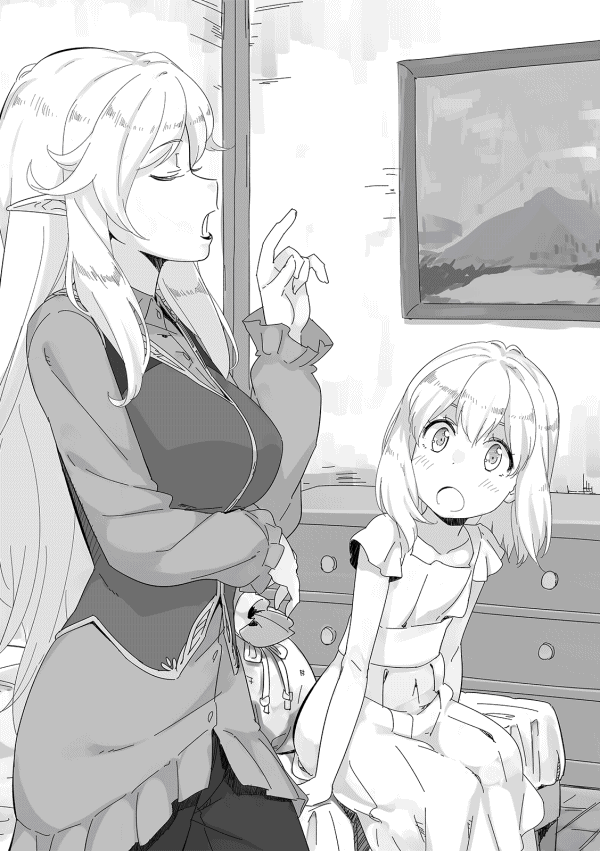
更に入市税の話をすると、ティリア魔術学院の学生は魔術師ギルドの準会員に当たるため、入市税は不要だと説明する。
俺はリディの立て板に水のような説明に違和感を覚えていた。
「村にいるときは、ドクトゥスについて聞いても、〝昔のことだから忘れた〟とか言っていたのに、ここについた途端、スラスラと出てくるな。最初から企んでいたんだろう？」
そう言うとリディの目が不自然に泳ぐ。
「まあいい。ガイが許可を出さなければ、その話はなしだからな」
リディは「えっ！」と驚き、一緒に住みたくないのと目で訴えてくる。
「俺だけ一緒に住むわけにはいかないだろう。シャロンと三人という条件じゃなければ、俺も寮に入るぞ」
正直な話、リディと一緒に住むことに魅力を感じていた。しかし、今回の魔術学院入学は自分を鍛えるためであり、彼女と同棲 すれば間違いなく、その目的を忘れてしまう。
シャロンが一緒なら自制が効くし、第一、シャロンだけを寮に入れるのは仲間外れのようでかわいそうだ。シャロンが自立したいならそれはそれで問題はないが、少なくとも友人ができるまでは俺が近くにいた方がいいだろう。
俺はガイに意見を求めた。
「真面目な話、俺はともかく、シャロンはリディと一緒に住んだ方がいいと思う。今から大人になっていくんだ。母親に相談したいようなことも出てくるだろう。その時、知り合いの大人の女性が近くにいた方がいい。男と同じ屋根の下が不安だというなら、俺が寮に入る。どうだ？」と聞くと、彼はこういう事態を想定していなかったのか、呆けたような顔になっていた。
「......母親に相談したいことですか......ああ、何となく分かります......ですが、ザック様やリディアさんにご迷惑が......」
そう申し訳なさそうに呟く。ガイとしても娘を知り合いのいない寮に入れることに不安を感じているが、俺たちに迷惑を掛けることを気にしている。
「迷惑なんてとんでもない。シャロンは料理もできるし、家事も任せられる。リディよりよほど働き者だしな」
横でリディが憤慨しているが、とりあえず無視する。ガイは少し考えた後、「分かりました」と頷き、シャロンの方を向く。
「お前の考えはどうだ？ 勉強と家事。その両方を両立しないといけないんだぞ。ここは家とは違う。母が手伝ってくれるわけじゃない。その状況でザック様の健康を損なわないようにしないといけないのだ。それでもできると言い切れるのか」
強い口調のガイに対し、シャロンはしっかりと目を見つめながら、「大丈夫です」と言って大きく頷いた。
「村では私より小さい子でも家のことをやっていました。私も頑張ればできるはず」
強い意志を感じたのか、ガイは彼女に小さく頷く。そして、俺たちの方に向き直り、深々と頭を下げてきた。
「分かりました。ザック様、リディアさん、シャロンのことをよろしくお願いします」
こうして俺たち三人は家を借りることになった。
翌七月二十日。宿で朝食を摂った後、受験申請のためティリア魔術学院に向かう。
正門には既に受験者らしい少年少女が、付き添いの大人と入門手続きを行っている。
俺たちも入市税を支払うが、剣を背負った少年が珍しいのか、守衛は不思議そうな顔で俺を見ていた。
門をくぐると、木造の家屋が多い新市街と異なり、石造りの町並みが広がっていた。ここに来る途中に見たアーマスウェイトと同じような灰色の石で造られた家が立ち並び、学術都市という感じはしない。
正面に立派な城砦が目に入ると、「あれは図書館なの。蔵書数は世界一よ」とリディが説明してくれる。
俺は頷きながら、「図書館か。入学したら入れるのか？」と聞くと、「入れるわよ。魔術師ギルドのオーブがあれば無料でね」と即答する。
「オーブがないといくらするんだ？」
「昔と変わっていなければ、保証金として金貨一枚と入館料の半銀貨一枚が必要だったはずよ」
金貨一枚は百クローナ、日本円でいうと約十万円に当たる。半銀貨一枚は五クローナ、五千円だ。基本的には無料だった日本のことを思い出し、「入るだけで五クローナか......高いんだな」と呟いてしまう。
「貴重な文献が一杯あるから仕方がないわよ。私も昔は結構入り浸っていたのよ」
そんな話をしながら、旧市街を歩いていく。少し歩くと、商店が立ち並ぶ地区に入るが、ここの建物は灰色の石で作られているものの、カラフルなひさし を出したり木窓の下に花を飾るなどして明るい雰囲気を作るようにしており、重苦しさはあまり感じない。まだ、開店準備中なのか商品はほとんど並べられていないが、看板を見る限り、本屋や文具、魔道具の材料などを売る店が多い。
更に進むと右手に石造りの立派な建物が目に入ってきた。
周囲を板塀で囲まれ、門から中を覗くと、三階建ての建物と中庭のような広場がある。
「ここがティリア魔術学院よ。あそこで受付ができるはず」
リディが指差す先には、大きな立て看板があり、「受験受付」と書かれていた。
立て看板の指示に従い、建物の中に入っていく。既に受付らしいテーブルの前に十人ほどの受験者が並んでいた。
リディは「向こうで待っているわ。係の人の指示に従えばいいだけだから」と言うと、心配そうなガイの腕を取り、付き添いの待合室に入っていく。
俺とシャロンは二人を見送りながら、列の最後尾に並んだ。
ほとんど待つことなく、すぐに俺たちの番になり、三十代くらいの優しそうな女性職員が申請書類を渡してきた。
「名前、年齢、出身地、種族を書いてくださいね。もし、分かっているなら使える属性もその下に書いてください」
俺とシャロンは頷き、渡された書類に必要事項を記入していく。
属性のところでどう書いたものか悩むが、どうせ適性検査で調べるからと〝全属性〟とだけ書いておく。
書類を書き終わり、職員に渡すが、書類を見た瞬間、職員の表情が一瞬固まった。そして、俺の顔と書類を何度も見比べる。
「えっと、ロックハートさん。ここに書いてあることは本当？」
俺はあえて答えを外し、「はい。年齢はまだ十歳です」と頷く。
職員の女性は少し困った顔をしながら、
「ええっと......そうじゃなくて......全属性って書いてあるけど、意味は分かっているわよね」
動揺している職員に対し、「はい」と満面の笑みで頷く。
「......分かりました。えっと、受験番号は五百二十五番です。順路に従って進んでください」
既にシャロンの手続きも終わっており、二人で順路を進んでいく。
校舎の奥に進んでいくと、再び十人ほどの受験生の行列に出くわした。その後ろに並んでいると、この先の部屋で魔法に対する適性検査をするとのことで大人しく待つようにとの指示を受ける。
十分ほどで俺の番になり、部屋の中に入っていく。中には人が入れるほどの大きな木箱が置いてあり、その横には若い男性職員が立っていた。
「申請書類とオーブを見せてもらえるかな」
職員に書類を渡し、オーブを見せる。
「ザカライアス・ロックハート君だね。ぜ、全属性!? ......そ、それじゃ、この中に入って」
ここでも全属性という文字に驚かれるが、それに構わず木箱の中に入っていく。
中に入ると、すぐに蓋が閉められる。
「それでは測定を開始するよ。すぐに終わるから、じっとしているように」
その声が終わると同時に、何本もの原色のレーザー光が体を走査していく。二十秒ほどで光は唐突に消え、蓋が開けられた。
「こ、これで終わりだよ。書類を持って順路に従っていくように......それにしても本当だったとは......」
職員は額に汗を浮かべ、動揺しているように見えた。
（全属性持ちは珍しいって聞いたが、そんなに驚くことなのか？ どうも過剰反応のような気がするんだが......それにしても、具体的には何を調べたのだろう？）
シャロンが出てくるまで、外で待つことにし、その間に申請書類を眺めていく。
俺が書いた申請書類には、赤いインクでチェックが入っていた。
名前、年齢、出身地の他に、属性に関する箇所にも丸が打たれ、更に〝再チェック完了〟という文字が書かれていた。
順路に従って廊下を進んでいくと、教室のような机の並んだ部屋に到着した。中には三十人ほどの受験生が座っている。シャロンと自分の番号札が置かれた席に着いた。
俺は周囲を見回し、「教室か......懐かしい感じがするな」と呟く。通っていた小学校にあった木造校舎を思い出していたのだ。
（使い込まれた木製の机と椅子。磨 かれた床。少しがたつく扉......取り壊されたあの木造校舎を思い出すな。そうそう、床に木の節があって、時々、穴が開いているんだよな......窓がガラスだったら完璧なんだが......）
この教室の窓は木窓になっており、今はすべて開け放たれている。
十分ほどで定員になったのか、男性職員が教壇に立ち、説明を始めた。
職員は簡潔に時間通りにこの部屋に集合することや受験時の注意事項などを説明していく。
「......当然のことですが、不正行為が行われた場合、魔術師ギルドは厳正に対処します。どのような身分の方でも、二度と魔術師ギルドと取引することはできなくなります。そのことを肝に銘じておいて下さい。これは脅しではありません。以前、ある国の公爵家の関係者が不正を行い、発覚しました。現在、その公爵家は魔術師ギルドとの接触は一切できません。ギルドに登録されている魔術師たちはすべて引き揚げさせています。もう一度言います。不正を行うつもりなら、それだけの覚悟をして下さい。以上です」
最後に付け加えた不正行為の禁止は脅迫に近い迫力を持っていた。職員の話が終わると、受験生たちはゾロゾロと教室を出ていく。
俺とシャロンも同じように教室を出て、リディたちと合流する。
「無事手続きが終わったようね。それじゃ、家を探しに行きましょう」
リディが元気良く、歩き始めるが、俺の後ろにいたシャロンが袖を引っ張る。
俺が振り返ると、
「あの......勉強しなくても大丈夫でしょうか。他の人は必死みたいなんですが......」と不安げな顔で訴えてきた。
「そうだな。確かに他の連中は必死みたいだな。でも、今更勉強しても無駄だと思うぞ。リディが太鼓判を押しているんだ。それを信じて普段どおりにやればいい」
俺がそう言っても、まだ不安そうにしていた。彼女の手を握り、引っ張るように歩き始める。
「大丈夫だ。俺のことが信じられないか？ それよりどんなところに住みたいか考えよう」
最初は引き摺られるような感じで歩いていたシャロンだったが、家の話を始めると次第に表情が明るくなっていく。
新市街に戻り、不動産屋を紹介してもらうため商業ギルドに向かった。商業ギルドは加盟店へのサービスの他、一般の客に対してもサービスを行い、その中に街の商店を紹介するというものがある。
商業ギルドで事情を話すと、一軒の不動産屋が紹介される。俺たちはギルドの紹介状を持ち、旧市街の正門近くにあるマクラウドという不動産業者の店に向かった。
三人の要望だが、旧市街に近く水場に近いこと。そして、治安が良いことだ。
マクラウド不動産は新市街の中心部付近、すなわち旧市街に近い場所に多くの物件を持っており、第一の条件に合致している。
マクラウド不動産は旧市街の正門のすぐ近くにあり、すぐに見つけられた。中に入ると、ドアの呼び鈴の音を聞いた事務員らしい女性がすぐに現れ、リディが事務員に用件を話していく。
「借家を探しているの。契約期間は五年。住むのは三、四人だから、それほど大きな家でなくてもいいわ......」
女性事務員はリディの話す条件を丁寧にメモに取り、「しばらくお待ち下さい」と店の奥に入っていく。すぐに五十歳くらいの姿勢の良い、品の良さそうな男が現れる。
「ダグラス・マクラウドと申します。家をお探しとのことと伺 いましたが」
リディが「そうよ」と頷くと、「お伺いした条件の物件をいくつか見繕いましたので、現場にご案内いたします」と軽く頭を下げる。
俺はこの品の良さそうな紳士が不動産屋ということに違和感を覚えていた。
家というのは命に直結している。家賃を滞納して追い出されたら、住むところがなくなるだけでなく、家においてある家財などの資産も失うことになるし、真冬に追い出されれば、それだけでも命を危険に曝 す。法律が整備されていれば命の危険までは回避できるだろうが、法律がそれほど整備されているとは思えない。
だから滞納した側はあらゆる手段で支払いを待ってもらおうとするし、不動産業者は逆に強硬な手段で取立てを行う。当然、相手側も抵抗するだろうし、居直ることもあり得る。そうなったら追い出すのは力ずくしかない。
（それとも家賃を滞納したら、即、奴隷にされるとか変な条件でもあるのかな？）
俺がそんなことを考えている間にも、リディはマクラウドと話を進めていた。
「......じゃ、何軒か見せてもらうわ」
どうやら、物件を見に行くことになったようで、俺もリディについていく。
ガイは無表情を貫き、一言もしゃべっていない。どうやら、話を振られないよう自分は護衛だと暗にアピールしていたようだ。
一軒目は正門から五分ほどにある三角屋根の木造二階建ての家だった。
建物自体は古い感じだが、幅十メートル、奥行き十五メートルほどの敷地に建ち、裏には小さいが庭もある。一階には厨房とリビング、トイレがあり、トイレは下水道に直結している簡易の水洗式だった。更に浴室にも使えそうな排水設備が整った洗濯場のような部屋もあった。
井戸も近くにあるということで使い勝手も良さそうだ。
二階に上がると寝室に使える部屋が四部屋あり、マクラウドの説明では十人家族が住んでも大丈夫ということだった。
次の物件は正門から北に十分ほどの距離にある長屋のような共同住宅だった。所謂メゾネットタイプと呼ばれるもので、ここにも裏に小さな庭がある。
三軒目は更に五分ほど北に行ったところにある一軒家で、三角屋根の木造二階建ての家だった。造りとしては一軒目に近いが、井戸が遠かった。
リディはその場で値段の交渉を始めた。
「一軒目が月五十クローナ。二軒目が二十クローナ、三軒目が二十五クローナで間違いなかったかしら？ 結構高いわね」
マクラウドは営業スマイルを浮かべ、
「旧市街に比べれば安いほうですよ。あちらだとこの物件程度の広さでも、最低八十クローナはしますから」
リディはマクラウドの話を軽く流して、「五年分を一括で前払いだといくらになるのかしら？」と話を進めていく。
彼女の言葉にマクラウドの表情が僅かに変化した。にこやかな表情が一瞬消え、打算に満ちた表情が垣間見えた。
（こっちの顔が本物か。こういう表情を見せてくれる方が安心できるな。それにしても五年分一括前払いって、一軒目だと五十掛ける十二ヶ月掛ける五年だから三千クローナ、三百万円か。払えない金じゃないが、さて、向こうはどう出るんだろう......）
そんなことを考えていると、マクラウドが「五年分一括でございますか......」と呟き、「それでは一割、いえ、目一杯勉強させていただき、二割引とさせていただきます」と再び戻った営業スマイルで言い切った。
交渉するつもりはなかったが、反射的に頭の中で計算を始めていた。
（二割引か......内部収益率 的に割引率を計算すると五パーセントくらいか......年利二十パーセント程度の金利なら、三割引でも向こうに損はないはずだ。さて、リディのお手並みを拝見するか......）
余裕の表情でリディを見ると、彼女はマクラウドの表情を確認しながら俺にチラチラと視線を送ってくる。その目は明らかに俺に交渉しろと言っていた。
俺は仕方ないなと思いつつ、彼女の期待に応えることにした。
「マクラウド殿、俺はザカライアス・ロックハート。リディアーヌは俺の家庭教師だ」
突然、俺が話しかけたため、彼は驚きの表情を見せるが、それを無視して話を続けていく。
「教えてほしいのだが、ここドクトゥスの貸し金の金利は年利でどの程度なのだろうか？」
思いもかけない話題になり、今度はリディを始め全員が驚く。話を振られたマクラウドは何とか営業スマイルを取り戻し、
「月三分から五分というところでしょうか。年単位で取引するのは商会同士だけですので、決まった数字はございませんが......」
そう言って「それが何か？」と話が見えないことに困惑している。
俺はマクラウドの困惑を頭から締め出し、必死に暗算していた。
（年利は複利計算で一・〇四の十二乗......ざっくり言って年利六十パーセント強か。だとすると、二割引ではボッタクリだな......さて、これ以上は暗算では無理だな......）
俺はマクラウドやリディたちを無視して、地面を使って計算を始めた。
（月単位での計算は面倒だから、年単位での計算にするとして、一年目に六百クローナで今後五年間の六十パーセントの複利計算として......五年目で一万五千二百クローナか。なら五割引にするとして、千五百の六十パーセントの五年複利計算だと、一・六の五乗だから、十・五倍か。千五百クローナでも一万五千八百クローナになる。まあ、これでトントンだな。まずは五割引で交渉だな）
五分ほど計算をしていた俺は徐 に立ち上がり、ニヤリと笑う。
「二割引で目一杯とはおかしな話だな。俺の計算では五割引でも利益が出るぞ」
マクラウドは営業スマイルを消し、やや細めた眼で俺を見つめていた。数瞬後、我に返ったのか、再び営業スマイルを顔に貼り付け両手を上げる。
「それはどのような計算なのでしょうか？ いかに先払いとはいえ五割引とは......そのようなご無体なことをおっしゃられましても......」
「ならば、説明するぞ」と言って、地面に書いた計算式の説明を始める。
「契約時に一括で受け取った場合、その金を再投資に回せる。その金を月四分、年六割で金を貸すと仮定すれば......この金額になる。一方、毎月受け取る場合は、再投資に回せる金はこれだけだから......」
ガイを始め、リディもシャロンも俺の説明についていけない。最初は笑顔を浮かべていたマクラウドだったが、徐々に額に汗が浮かび、途中でお手上げという感じで説明を遮ってきた。
「お、恐れ入りました。これのような計算方法があるとは知りませんでした。ですが、五割引はあまりにも......」
俺は満面の笑みを浮かべ、「四割五分引ではどうだ？ これでも相当な儲けだ」とこちらの条件を提示する。
彼は額の汗を拭きながら、「四割五分引ですか......四割引では......」と呟く。
この街で暮らす以上、敵を作る必要はないのでこれで引くことにした。それでも「四割引か......随分儲けるつもりだな」と呟いておく。リディに向かって、「四割引で受けてくれるそうだ。どの物件にするんだ？」と話を振る。
リディは俺とマクラウドの話についていけず、突然話を振られたことに戸惑っていた。
「えっと......一軒目でどうかしら？」と言ってきたので、異存がないと答え、シャロンにも確認するが、彼女はコクコクと頷いて異存がないことを伝えてきた。
その後、細かな条件を決めていき、その中で多少の改造は認められるが、引き払う時に原状に戻すことが条件だと伝えられる。
（一階の排水設備のある部屋に風呂が作れるな。昔より魔力が増えているから、二日もあれば完成する......）
引渡しは筆記試験の翌日、七月二十三日にすることに決まり、その時に千八百クローナを渡す契約となった。
翌日、受験前日ということもあり、シャロンのたっての希望で勉強をすることになった。
リディは小物類を揃えるとのことで、護衛のガイを供にして街に出ていく。しかし、勉強をするといっても実際にできることは少ない。馬車ではなく騎乗の旅ということで、極力荷物を減らす必要があり、歴史と魔法関係の入門書が一冊ずつしかないのだ。
仕方なく歴史と魔法理論の勉強をしていくが、俺たちにとっては五、六歳の頃から読んでいる本であり、既にほとんど暗記している。時々、雑談を交えながら、彼女の質問に答える形で勉強会を進め、リディたちが帰ってきたところで終えることにした。
リディが「どう？ 少しは自信がついた？」とシャロンに話しかけると、シャロンはコクリと頷き、「はい。ちょっとだけですけど」と、はにかみながら答えていた。
試験当日の朝、盛夏の空は蒼く澄んでいた。
朝からセミが煩く鳴く中、俺とシャロンはリディに付き添われ、ティリア魔術学院の門をくぐった。
カンニング対策のため、受験会場には筆記用具を含め、手荷物は一切持ち込めない。そのため身一つで会場である教室に入っていく。
机には受験番号の札とインクの壷、羽根ペンが三本置かれており、まだ、午前八時半にもなっていないが、既に半数以上の受験生が席についていた。九時になると試験の説明をしてくれた男性職員が入ってきた。
「今からオーブの確認を行います。確認が終わった人はこの教室から出ることはできません。トイレにいきたい人は今のうちに行って下さい」
その言葉に半数以上の受験生が立ち上がるが、シャロンは座ったままで立ち上がる素振りを見せない。
「トイレは大丈夫か？ 行くなら今のうちだが」
「大丈夫です......ちょっと緊張していますけど、大丈夫です」
何かあったのかなと思ったが、シャロンがしっかりとした口調で答えたので雑談をする雰囲気にもならず、静かにオーブの確認を待った。二十分ほどで全員のオーブの確認が終わると、教室は水を打ったような静けさに支配される。
午前九時三十分。試験用紙が配られたところで、「開始！」という声が響く。
紙を捲る音とともに試験が始まった。羽根ペンのカリカリという音が試験らしい雰囲気を醸し出していく。
一教科目は共通語の試験だ。日本で言えば国語、現代文に当たる。
問題は驚くほど簡単で十五分ほどで終わってしまった。試験中は不正防止のため問題を解き終わっても、試験官の終了の合図があるまで席を離れることができない。暇になった俺は用紙をひっくり返して机に突っ伏して寝ることにした。試験官が何度か通るが、何も言わずに通り過ぎていく。試験が分からず諦めたのだろうと呆れられているような気がした。
試験開始一時間後、終了の合図と共に受験生から溜め息のような声が漏れる。
次の試験は三十分後だが、トイレに行けば再びオーブの確認を受けなければいけない。面倒なので俺はそのまま机に突っ伏して寝ていた。
二教科目は算術で、これも十五分ほどで終わり時間を持て余す。
（リディが言っていたことがよく分かった。これなら、俺もシャロンも凡ミスをしていない限り満点だろうな......）
算術の試験が終わると昼食の時間になった。
不安げなシャロンに「どうだった？」と尋ねると、
「簡単でした......本当にあの問題が試験問題なのでしょうか？ 私のところに間違った用紙がきたとか、そんなことは......」
あまりに簡単過ぎて逆に不安になっているようだ。料理が出てくるまで試験内容を確認していくと、彼女は同じ問題だったと胸を撫で下ろしている。
少し余裕が戻ってきたので、試験開始前に気合が入っていたことについて触れてみた。
彼女は少し恥ずかしそうに、小さな声で説明し始める。
「昨日、リディアさんに言われたんです。ザック様の隣にいたいなら、戦いのことを思い出しなさいって」
俺は意味が理解できず、「戦いのこと？」と尋ねた。彼女は「はい」と力強く頷く。
「〝戦いでは平常心を失うことが一番危険でしょ。だから、試験も戦いに挑むときと同じように気合を入れてもいいけど、平常心で臨みなさい〟って」
確かに普通の少女ならリディの言葉を理解することは難しいが、命がけの戦闘を経験しているシャロンには分かりやすい例えだろう。
食事を終えて教室に戻ると、午前中と同じような感じで、各国の歴史、大陸の地理、魔法理論などの試験を受けていく。歴史と地理は前の二教科と同じく簡単過ぎて全く張り合いがない。唯一 魔法理論だけは他の四教科より難しかったが、それでも六歳頃にリディから習ったレベルだった。
すべての試験が終わると、試験官の男性が翌日以降の説明を始める。
「明日から実技試験に入ります。君たちは十一日目、八月三日になりますので、前日までに時間の確認をしておくようにしてください。それでは今日はお疲れ様でした」
試験官が教室を出て行くと、受験生たちが一斉に教室から出ていく。
受験生の中には試験の出来が悪かったのか、悔し涙を浮かべている者もいた。普通の子供には難しい試験だったのかもしれない。
校門のところでリディと合流する。彼女は「どうだった？」と笑いながら聞いてきた。
「拍子抜けもいいところだ。多分、俺もシャロンも満点だぞ。いや、ダンやメルでも満点を取れるな」
リディは噴き出しそうになるのを抑えながら、「だから、言ったでしょ。あなたたちなら絶対に大丈夫だって」と笑っている。
俺は少しだけ溜め息をつき、「今ならリディの言ったことがよく分かるよ。でも、まだ、実技試験があるんだろ。油断はできないよ」と言うと、「あら、そんなことはないわよ」と更に相好を崩す。
「あなたたち二人は絶対に合格よ。それより、どうやって手を抜くかの方が問題ね」
「手を抜く？ そんな必要はないだろう。まあ、オリジナル魔法は使うつもりはないが」
「シャロンはともかく、あなたは全属性持ちってことで注目されているはずよ。そんなところで本当の実力を見せてごらんなさい。魔術師ギルドや私塾の関係者が挙 ってあなたに興味を示すわ。今のシャロンの実力でも普通の年ならダントツなのよ。あなたの実力は既に普通の宮廷魔術師並。だからシャロンと同じくらいの実力を見せれば間違いなく二人で首席、次席を独占できるわ」
確かに彼女の言う通りで、申請の段階でもかなり注目されていた。
「しかし、手を抜いても大丈夫なのか？ ここの試験官クラスの魔術師なら見抜けるんじゃないのか？」
彼女は手をひらひらとさせながら、「そんなことないわよ」と笑っている。
「最近の先生はどうか知らないけど、私がいた頃にはそんなことに気づけるような人は一人しかいなかったわ。普通はそんな凄い先生が試験官をすることなんてないもの」
そんなことを話しながらガイの待つ宿に戻っていく。宿のロビーではガイが待っていた。試験の出来が気になるのか、普段とは異なり落ち着きがない。
「どうでしたか？ 出来の方は......」と俺を見ながら、チラチラ娘の方を見る。
俺は笑いを堪え、「俺もシャロンも完璧だよ」と答えると、ガイは傍目に見て分かるほど嬉しそうに頷き、シャロンの頭に手を置いた。
翌日、マクラウド不動産に向かい、家の引渡しを受ける。
「値引きで配慮いただいた分、少しだけサービスさせていただきました」とマクラウドが言ってきた。何のことかと思ったら中をきれいに清掃した上、リビングにテーブルセットが入れてあった。
俺が「これは？」と尋ねると、
「別の物件で処分に困り置いていかれたものです。物自体はかなり上質な物ですので、もしよろしければ、使っていただこうと思ったのです」と揉み手をしながら上目使いでそう言ってきた。
マクラウドの用意したテーブルは六脚の椅子とセットとなっており、オーク材の一枚板を磨き上げた上質なものだった。
彼の狙いが分からないもののとりあえず礼を言うと、マクラウドが割引率や現在価値といった計算を教えてほしいと言ってきた。
（なるほど。それにしては結構な授業料だな......まあ、この程度の知識なら広めても問題ないだろう......）
その後、マクラウドの店を訪ね、割引率や現在価値の計算方法を教えた。キャッシュフローの説明からしたため時間は掛かったが、マクラウドは思ったより柔軟な思考を持っており、俺の予想より早く理解した。
（この先、意外と大商人になるかもしれないな......）
そういう風習があるのかは分からないが、引越しの際、近所にあいさつ回りをした。五年間ここで過ごすのなら近所付き合いは良好な方がいいだろうと考え、ちょっとした手土産を持ってリディとシャロンと共に近所を回ったのだ。
右隣は交易商に勤めるフランク・ノヴェロという人の家で、奥さんと三人の子供と住んでいる。主人のフランクさんは三十歳くらいで物静かな感じの人だが、奥さんのハンナさんは明るい感じの女性で世話好きなところがメイド長のモリーを思い出させた。
左隣はティリア魔術学院の事務員だった。名はクリント・リトルフという四十代の男性で妻と娘の三人で住んでいる。クリントさんは子供好きの用務員といった感じの人で、俺が学院の受験生だと知ると、頑張れよと声を掛けてくれた。
（両隣がいい人そうで良かったな。他の近所の人もいい人が多そうだったし、ここは当たりかもしれないな......）
俺たちが挨拶周りから戻り、ガイにいい人ばかりだと説明すると、彼は「それは良かったですね」と嬉しそうに笑う。そして、近所に同じ歳くらいの男の子がいないと言うと、僅かに安堵の表情を見せる。それに気付いた俺は噴き出しそうになった。
（ある意味、シャロンは温室育ちだからな。周りの同世代の男子は俺とダンしかいなかったし......何だかんだ言ってもガイはシャロンに甘いから......）
引越しを済ませても実技試験までまだ十日ほどある。この期間を有効に使うため、明日から森に入ることを考えていた。
ドクトゥスの北には森が広がり、その先にはサエウム山脈という魔物が多く棲む山岳地帯がある。
そのサエウム山脈だが、昔はこれほど危険な山ではなかった。危険な山になったのは南の大国カエルム帝国が北の大国ラクス王国に侵攻したことがきっかけだ。当時、サエウム山脈の南側にはラクス王国の開拓村があり、それなりに魔物の討伐が行われていたが、カエルムの皇帝の気まぐれによって始まった侵攻作戦により、その開拓村が壊滅した。
本来なら領土を得た帝国が入植を進めるのだが、入植が進まないうちに当の皇帝が死に帝国の政策が変わったことからサエウムの南側は完全に放棄された。人に見捨てられた土地では魔物は狩られることなく繁殖していく。その結果、増え過ぎた魔物が餌を求めて山を下り、街道や街に出没するようになったのだ。
そういった事情からドクトゥス周辺には魔物が比較的多く、魔物相手の実戦には事欠かない。
「明日から森に入りたいんだが」と俺が提案すると、ガイは即座に「私に異論はありません」と答え、リディも「私もいいわよ」と軽く答えた。
「でももったいないわね。あなたの歳じゃ、ギルドに登録できないから、〝級〟を上げれないわ」
そう残念そうに付け加える。
冒険者ギルドの登録条件は十五歳以上。例外として三級以上の冒険者が後見人になることで十五歳未満でも登録できるが、ガイもリディも四級であり要件を満たさない。
この街は常に討伐依頼が出ていることと、事後報告でも達成とみなされる特別ルールがあるため、森に入れば簡単に依頼を達成できる。
正直な話、俺にギルドの級に拘りはなく、レベルアップに力と入れたいと思っている。もちろん討伐の報酬 はほしいが、それはリディが依頼を受けたことにすればいいので問題はない。
俺がそう言うと、「それはそうだけど......」と口篭 った後、「あなたの実力なら既に六級よ。そのことを他の冒険者に分からせたいの。きっと、馬鹿にしてくる人がいるから......」と口を尖らす。リディは実力に見合った級になってほしいと思っているようだ。
翌日から、俺たち四人は街の北にある森に入り、魔物を狩っていく。
僅か五日間で剣術士レベルが十六から十七に、風属性魔法が二十三から二十四と、共にレベルが上がっている。
（やはり実戦の方がレベルアップが早い。シャロンのレベルは分からないが、リディもレベルアップしたそうだから、今後は頻繁に森に入る方がいいな......）
シャロンについては、魔術師のオーブがないため、魔法のレベルが分からない。しかし、学院合格後にオーブが与えられるため、あと一ヶ月もしないうちにレベルは分かるはずだ。
毎日森に入り、七級から八級相当の魔物を中心に狩っていたが、収入は思った以上にあった。
七級相当の魔物の魔晶石は十クローナ程度、八級相当は五クローナ程度であり、それと同程度の報奨金がギルドから報酬として出るため、五日間で三百クローナ、三十万円近い収入があった。
優秀な斥候 であるガイが帰った後はここまで効率よく狩れないだろうが、森の中での戦闘に目途が立ったことは金銭的なことを含め、今後の生活を考える上で参考になる。
実技試験の前日。その日は森での狩りを早めに切り上げ、翌日の試験の最終確認に行くことにした。
学院の門をくぐると、中には数名の受験生が緊張した面持ちで校庭をうろうろしていた。今日実技試験を受ける受験生らしく、緊張で落ち着かないようだ。
校舎の中に入ると、明日の試験日程が張り出されていた。俺が午前中の十五番目で、シャロンが十六番目。午前中は二十人の予定だから十一時頃が俺たちの時間になる。
「明日は十時くらいに来れば大丈夫だな。午前中には終わるし、午後は時間が空くな」
俺の言葉に珍しくシャロンが反応しない。不思議に思って彼女を見ると、受験生たちをじっと見つめていることに気付いた。
俺が「何かあったのか？」と聞くと、「皆さん、杖を持っているんですが......」と不安そうに答える。そう言われてみると、受験生たちは皆、先端に魔晶石を嵌 め込んだ杖を持っている。三十センチメートルほどの短めのものから、大きなものでは一・五メートルを超えるものまで様々だ。
俺は特に気にすることなく、
「注意事項に杖について何も書かれていなかったから持ち込んでもいいんだろう。それがどうかしたのか？」と口にする。
「えっと......私たちは無くても大丈夫なんでしょうか......」と不安そうに聞いてくる。自分たちだけが魔道具である杖を持っていないことに不安を感じているらしい。
「いらないんじゃないか？ 今までも杖なんか使ったことがないしな。第一、実戦で魔法を使うリディも使っていない。問題ないだろう？」
シャロンはコクリと頷くが、まだ、チラチラと周りの受験生を見ていた。
家に帰り、杖のことをリディに話すと、
「あら、杖の持ち込みができるようになったのね。私の頃は駄目だったから、気が付かなかったわ」と意外だという顔をする。
「そうなのか......盲点 だったな」
俺が真面目な顔でそう言うと、彼女はケラケラと笑い始めた。
「ほんと、変なことを気にするのね。ふふふ......あなたたちに杖なんていらないわよ。今でも十分魔物と戦えているのよ。それに杖なんてほとんど飾りよ」
魔術師の杖は精霊の力を集める時の効率を上げてくれる魔道具だが、宮廷魔術師長が持つような高級品はともかく、子供が持つような杖はほとんど気休めにしかならないそうだ。
「最近の流行 なのかもしれないわね。昔の魔術師は杖なんか持たなかったのに......子供の時から杖に頼っていると、いざという時に困るから、あなたたちは持たない方がいいわ」
俺はその言葉に納得するが、シャロンは頷くものの納得しているように見えない。
「そう言えば、リディも杖を持っていたんじゃないのか？」
「ええ、持っているわよ。卒業する時にもらえるから......一応、今も持っているけど？」
「それを貸してくれないか。今から杖のありなしでどのくらい違うのか試してみたい」
リディは自分の部屋に戻り、長さ五十センチメートルほどのシンプルなデザインの杖を持ってきた。その杖を使い効果を確かめてみるが、リディの言う通り劇的な効果はなかった。
「その程度なら別の武器を持った方が使い勝手がいいのよ」と言って笑っている。
シャロンに杖を持ったらどうかと言うと、彼女は首を横に振る。
「無くても大丈夫です。高そうですから」と言うと、リディが「私の杖なら貸してあげるわよ。何ならプレゼントするわ。どうせ使っていないんだし」と杖をシャロンの胸に押しつける。
シャロンは困った顔をして、即座にプルプルと首を振って杖をリディに返した。
「もらうのはともかく、森に入る時には借りていったらどうだ？ その方が安全だしな」
リディは俺の言葉に「そうね」と言って頷く。
「明日の試験はシャロンの好きなようにしたらいい」と言いながら、リディから杖を受け取り、シャロンの前に突き出した。
シャロンは少し迷いながらも、「ザック様と一緒でいいです」と言って固辞 した。
少なくともシャロンの不安は解消されたようで、帰ってきたときのような不安そうな表情は消えていた。
八月三日。
実技試験の日になった。朝から蒸し暑く、少し体がだるい。
いつもの日課である素振りをしてから共同の水場である井戸に向かう。顔を洗い汗を拭き取ってすっきりしたところで家に戻ると、既にシャロンが朝食の準備を終えていた。
朝食はパンに目玉焼き、ベーコン入りの野菜スープと牛乳にチーズがついている。
「おはよう、シャロン。今日もおいしそうな朝飯だな」と言うと、少し恥ずかしそうにしながら、「おはようございます」とぺこりと頭を下げる。既にガイは食卓についており、最後にリディが降りてくる。
（シャロンが一緒で一番楽をしているのはリディだな。まあ、俺も人のことは言えないか）
朝食を摂った後、特に何かをするわけでもなくのんびりとした時間を過ごし、シャロンと二人で学院に向かう。午前九時過ぎと少し早過ぎたが、することもないので校庭の木陰で寝転ぶ。シャロンは俺の横にちょこんと座り、二人でのんびりと空を眺めていた。
俺はシャロンをちらりと見上げ、「緊張していないか？」と尋ねると、「大丈夫です。思いっきりやるだけですから」と言って微笑んだ。その笑顔に不安の色はなく、本当に緊張していないように見える。
（しかし、凄いもんだ。筆記試験の時もそうだったが、初めての試験なのにそれほど緊張していない。俺が入社試験を受けた時は緊張していたんだけどな......）
一時間ほど他愛のない話をしながらのんびりと過ごし、十時の鐘が聞こえてきたところで、ゆっくりと体を起こす。
「そろそろ待合室に入れそうだし、そっちに行こうか」と言って、待合室に指定されている教室に向かった。
待合室には受験生が五人待っていた。緊張しているためか、それとも面識が無いからしゃべることもないのか、全員が無言だった。
重苦しい雰囲気が立ち込める中、突然入口の扉が開かれる。ガラリという音が妙に大きく聞こえ、全員の視線がそちらに向く。職員の男性が番号と名前を呼ぶと、その受験生はビクッという感じで立ち上がり、カクカクといった歩き方で待合室を出ていく。
（ガチガチじゃないか。あれで大丈夫なのか？）
一時間ほど待つと、ようやく俺の番が回ってきた。
「五百二十五番、ザカライアス・ロックハート君」
俺は「はい」と子供らしく見えるよう元気よく答えて立ち上がる。
「私と一緒に試験会場前に向かいます。会場から入るようにという指示があるまで、大人しく座って待っているように」
俺がもう一度「はい」と言って頷くが、職員はなぜか動こうとしない。俺が職員を見つめていると、「杖はいいのかね。試験会場に行ったら、忘れ物は取りに戻れないよ」と確認してきた。
「大丈夫です。杖は必要ありませんから」と答えると、職員は小さく頷いてから歩き出す。
杖を持つことが当たり前になっているため確認したようだ。
試験会場は校舎を抜けた裏にある体育館のようなところだった。
ギルドにある訓練場と同じように見えるので、ここが魔法の練習場になっているのだろう。会場の外にテーブルがあり、そこに女性職員が座っていた。
職員に受験番号と名前を告げ、オーブを見せ、用意されている椅子に座って待つ。
前の受験生が試験会場を出てから、二、三分後、「五百二十五番、ザカライアス・ロックハート君。中へ」と声が掛かる。木の大きな扉を開き、中に入っていくと予想通りギルドの訓練場のような地面がむき出しの体育館のような造りだった。
右手側に机と椅子が並べられ、十人ほどの職員が座っていた。進行役らしい四十歳くらいの男性が慣れた感じで試験の説明を始める。
「試験は最も得意な魔法を見せてもらいます。自分が出せる最高の魔法を私たちに見せてください。的が必要なら奥の的を狙っても構いません。何か質問は？」
「ありません」と短く答え、的に近づいていく。
進行役の「始め」の合図で、俺は職員たちに一礼し、的の方を向く。
今日は出力を抑えた旋風の刃 を使うことに決めていたので、いつもよりゆっくり呪文を唱えていく。
「数多の風を司りし風の神 よ。引き裂く風、精霊の刃を我に与えたまえ。我、我が命の力を御身に捧げん。我が敵を引き裂け！ 旋風の刃 ！」
発動の合図と共にブーメラン状の透明な刃が的に向かっていく。
一メートル四方の木の板でできた的に魔法の刃が当たると、バキッという音をたて板に大きな亀裂が入る。職員たちから溜め息のような感嘆の声が漏れる。少し威力を上げ過ぎたかと反省するが、これで終わったという意味を込め、職員たちに頭を下げた。
「今の魔法でいいのだね。納得がいかないなら、やり直しもできるよ」
俺は首を横に振り、これで十分ですと答えようとした。その時、一人の若い男性職員がすくっという感じで立ち上がった。
「この試験は自分の出せる最高の魔法を見せることになっているのだよ。今のが最高の魔法だと言い張るのかね？ 私には手を抜いたようにしか見えなかったが？」
その男性は良く見ると、長い耳をしたエルフだった。俺がどう答えようか悩んでいると、そのエルフの男性が、「手を抜くようなら不合格だよ。早く本気を見せてくれないかね」と笑いながら付け加える。
進行役が「ラスペード先生。勝手に合否を決めてもらっては困ります」と窘 めた後、俺に向かってやや強い口調で命じてきた。
「君も真剣にやりなさい。では、今度は本気で君の最高の魔法を撃ちなさい」
俺は〝本気〟という言葉に少し戸惑った。
（本気ね......仕方が無いか。中途半端な魔法じゃ、さっきのラスペード先生っていう人が気付くんだろうし......今使える一番威力のある魔法は大嵐 なんだが、この狭い空間では使えるかな......）
そう考え、外で撃っていいかと確認すると、進行役の男性が更に語気を強める。
「危険？ ただでさえ時間が掛かっているのだ。いいから、ここで撃ちなさい！」
どうなっても知らないからなと思いながら、了承したという意味を込めて頭を下げ、大嵐 の呪文を唱えていく。
「数多の風を司りし風の神 よ。風の精霊の宴、大いなる嵐を求む。我、我が命の力を御身に捧げん......」
三十秒ほど掛けて精霊の力を溜めていく。発動が可能になったと判断したところで、最後の発動の言葉を放つ。
「......吹き荒れろ、疾風！ 大嵐 ！」
呪文の完成とともに三十メートル四方の試験会場に冷気を含んだ風が吹き始める。
徐々にその風は中心に集束していき、直径十五メートル、高さ十メートルほどの渦を形成していく。
大嵐の魔法はこれだけでは終わらない。集束する風が上昇気流となり、地面にある物を巻き上げていく。そして、その渦の中にある無数の氷の刃によって巻き込まれたものをズタズタに引き裂いていくのだ。
今回は狭い空間ということもあり、風の曲率を上げ直径を可能な限り狭めている。その狭めた分だけ、氷の刃が密集することになり、より強力な魔法になる。
自分や職員たちに危険が及ばないよう壁際に向けて発動したため、近くの扉や木窓が吹き飛んでいく。危険は及ばないとはいえ、職員たちの周りにも強い風が吹き込んでおり、油断した一人の男性の手から書類の束が吹き飛ばされた。書類は強烈な渦に巻き込まれ、氷の刃でズタズタに引き裂かれ、天井近くまで舞い上がった後、破片が紙吹雪のように会場に舞い落ちる。
大嵐の魔法は一分ほど続いた後、唐突に終わった。
俺は静かに振り返り、「今の魔法が私の限界です」と言った後、不安げな表情を作り、「ところで扉や窓の修理代を請求されることはありませんよね」と言って職員たちの顔を見回していく。
進行役は言葉が出ないのか、茫然とした表情のまま何も答えず、他の職員も同じような表情で固まり、俺の言葉に反応しない。唯 一人、ラスペードと呼ばれた職員だけが大きな声で笑い出す。
「うんうん、今回は確かに本気だったよ！ 修理代のことは気にしなくていいから。君は最初から危険だと言っていたのだからね」
ラスペード氏以外誰も口を利かないが、試験は終了したものと判断し、もう一度頭を下げて外に向かおうとした。その俺の背中にラスペード氏の陽気な声が掛かる。
「ロックハート君だったね。私はリオネル・ラスペードだ。いつでも私の研究室に遊びに来なさい」
俺がそれに答えようと振り向いた時、更にテンションの上がった声が聞こえてきた。
「そうだ！ 学生など辞めて私の助手にならないかね！ 私が直接指導するよ！」
その言葉にどう答えようか悩むが、何も答えず黙って頭を下げて外に出ていった。外では受付の女性職員が中の職員と同じように呆然と立ち尽くしていた。
次の受験生であるシャロンも驚いていたが、それは俺が手を抜かなかったことに対してだ。俺は女性職員に軽く頭を下げると、横で待っているシャロンに声を掛ける。
「思いっきり魔法を撃ってもいいそうだから。建物が壊れても大丈夫だって」
俺が笑いながらそう言うと、彼女は不思議そうな顔をする。
試験会場から離れたところで待っていると、ドーンという低く重い音が学院の校舎に響く。しばらくすると、不安げなシャロンが小走りでやってきた。
その様子に「どうした？」と尋ねると、
「空気の槌 を撃ったんですが、的が壊れてしまいました。あそこにいた人たちが慌てていたんですが......大丈夫でしょうか？」
どうやら俺の言葉通り、最大出力のエアハンマーを放ったようだ。
「大丈夫なはずだ。俺なんか、扉と窓を壊したんだが、あそこにいた人が気にしなくていいって言ってくれたからな。的くらいなんてこともないはずだよ」
まだ不安そうなシャロンの肩に手を置き、「昼飯を食べてから、家に帰ろうか」と言って、歩き始めた。
八月十日、今日はティリア魔術学院の合格発表の日だ。
発表は午前九時から行われる。照りつける真夏の太陽の下、俺たちは汗を拭きつつ学院に向かう。
旧市街では受験生らしい大勢の子どもたちが付き添いの大人に連れられ、学院に向かって歩いている。学院に近づくにつれ徐々に増えていき、学院の門の前には長い行列が出来ていた。行列にうんざりしながらも不安そうなシャロンのため、その最後尾に並んだ。
掲示板は校舎の前にあり、二十分くらい掛けてゆっくりと近づいていく。掲示板の周りではガッツポーズで喜んでいる者、親に抱きついて泣き叫んでいる者などさまざまで、まるで昔の大学の合格発表のようだ。
三十分後、何とか文字が読める距離まで辿 り着く。掲示板を見上げると、そこには受験番号と氏名が記載されており、広い掲示板のどこから見ようかと考えていた。
俺が自分の名前を探し始めると、すぐにリディの「あったわよ」という明るい声が後ろから聞こえた。彼女の指差す場所は掲示板の左端の一番上だった。
「やっぱり一番だったわね。シャロンもその下に書いてあるから、二人で首席と次席を独占ね」
彼女の言う通り、俺の名前の前に〝一位〟と書かれており、成績順に表示されているようだ。
自分が首席と言う事実に戸惑いを覚える。
ティリア魔術学院の合格者は二百人。四十人で一クラス、つまり一組から五組に分けられる。そのうち一組だけが学年成績の上位四十人が集められるエリートクラスとなる。その他の二組から五組は四十一位から二百位までがランダムにクラス分けされる。
卒業時に一組かそれ以外かで卒業後の評価が大きく変わると言われており、合格者の中にも四十位以内に入れず悔し涙を浮かべている者もいた。
シャロンは自分の名前が二番目に書かれていることに呆然とし、同じように自分の娘がエリート校である魔術学院の次席で合格したことが信じられないのかガイは首を振っている。
俺が「おめでとう。これで入学金免除の資格が得られたな」と言うと、シャロンは慌てて「首席での合格、おめでとうございます」と言ってペコリと頭を下げる。
周りから「あいつが首席か」という囁きが聞こえてきたため居心地が悪くなる。
「確認もできたし、後ろもつかえている。早く入学手続きを確認しに行こう」と言って、その場を立ち去った。
校舎の中には合格者用の説明会場があり、二十人ほどの職員が個別に説明を行っていた。
若い女性職員のところが空き、そこに向かうと入学のしおりのような薄い冊子と入学手続き用の書類が用意されていた。
受験番号と名前と告げると、職員が手元の書類を確認していく。その作業が突然止まった。首席と次席の合格者だと気付いたようで俺たちの顔を見つめた後、ゆっくり深呼吸をして説明を始めた。入学式の日程、授業料の支払いなどの説明が終わるが、細々とした説明がまだまだ続いていく。
「......教科書は授業料に含まれますので、授業料を支払い頂いた時に配布されます。筆記用具などは各自で準備が必要です......学院生の制服とマントですが、ロックハートさんは全属性ですから好きな色が選べます。ジェークスさんは火と風の二属性ですので赤か水色のどちらを選んでください」
ティリア魔術学院の生徒はそれぞれの属性にちなんだ色の制服とマントを着用することになっている。色は火が赤、光が白、風が水色、木が緑、水が青、闇が黒、土が茶、金が黄だ。
この学院の男子の制服は黒いロングパンツと各属性の色のシャツに同系色のベストだ。これに属性色の短いマントの着用が義務付けられている。ちなみに女子はロングパンツの代わりにスカートになる。
シャロンが風属性の水色を選んだので俺も同じものにする。制服とマントは学院指定の洋服店で購入することになっており、ワンセットで百クローナ近い出費になるが、これでも魔術師ギルドからの補助が出ているため、実際の価格より安いらしい。
説明会場を出た後、俺はガイに「シャロンは次席で合格したんだ。入学しても問題ないな」と確認する。彼は「はい」と答えた後、
「ザック様にはご迷惑をおかけしますが、よろしくお願いします」と言って頭を下げた。シャロンも慌てて「よろしくお願いします」と同じように頭を下げる。
「シャロンは迷惑なんか掛けないと思うが、任せてくれ」といい、シャロンには「こちらこそよろしく頼むよ」と言って、ポンと彼女の肩に手を置いた。
リディに「授業料は今日払っておくが、それでいいか？」と尋ねると、彼女もそのつもりだったようで「ちゃんと持って来たわ。シャロンの分も大丈夫よ」と笑顔で腰のポーチを叩いている。
面倒なことはさっさと済ませておこうと、今日のうちに授業料などを払うつもりで祖父や両親からもらった金を持参していた。授業料を払い教科書などを受け取った後、魔術師のオーブを作成する。
オーブでシャロンのレベルを確認すると、リディの予想通り風属性がレベル十七、火属性がレベル十と、すでに卒業生並みのレベルになっていた。
（さすがに四歳くらいから訓練して、実戦までこなしているからな。それに普通の魔術師の修業は七歳から始めて一年くらいは魔力を感じたり、体内で操作したりするだけそうだし、それに比べれば異常に速いペースで魔法を覚えて行ったからな......）
そんなことを考えながら、真新しい魔術師のオーブを身に付ける。そのまま旧市街に繰り出し、制服や筆記用具などを買っていく。
家に帰るとリディの提案で合格祝いの外食をすることになった。場所は新市街の繁華街で、リディが予約していたのは大商人が宿泊するような石造りの立派な宿の一階にある落ち着いた雰囲気のレストランだった。
さすがは高級ホテルのレストランといった感じで、フランス料理のコースに近い形式で料理が出されていく。
俺たちには不釣合いな雰囲気だが、それなりに料理を楽しんでいた。リディとシャロンはこれからの生活のことを楽しそうに話し、俺がそれに頷くという感じで食事が進んでいく。
そんな中、ガイにいつ帰るつもりなのかと尋ねると、「手続きも終わりましたし、明後日にでも出発しようかと」という答えが返ってきた。
親なら入学式が見たいだろうと、「入学式は見ていかないのか？ あと二十日くらい残っていても問題はないと思うが」と聞くが、彼は首を横に振り、
「既に出発から一ヶ月半ほど経っています。村の周囲の森の警戒をヘクター殿に任せきりにしていますので、できるだけ早く戻ろうと思います」と真面目な顔で答えてくる。
従士としてのガイの主な仕事はラスモア村周辺の警戒だ。通常はメルの父、ヘクター・マーロンと交代で猟師のロブたちを使いながら魔物の痕跡を探っているのだが、ガイがいない間はヘクターに負担が掛かることになる。
俺が他の従士たちもいるからいいのではないかと言ってみたが、真面目な彼は譲らず、明後日の八月十二日にドクトゥスを出発することになった。
今日は少しだけ酒を飲んでいる。ワインをグラス二杯だけ飲んだのだが、デザートの焼き菓子が出てくる頃には酔いが回り始めていた。
食事も終わりレストランを後にする。帰り道でガイが珍しくリディに話しかけていた。
「それにしてもよくあんな店を知っていましたね。それも何度も使ったことがあるようでしたし」と言うと、リディはぷっと噴き出し、ガイの背中を叩く。
「そんなことないわよ。私も初めて行ったんだから。あの店は昔聞いたことがあっただけ。結構高くて立派な所だって」
俺はその言葉に「味は選考項目に入っていなかったのか？」と話に割り込む。
「そうね。私はあなたほど味にうるさいほうじゃないから。だから最初に行ったでしょ。奮発してあげるって」
リディは有名店というだけであの店を選んだようだ。
料理の味も良かったので俺に文句はないが、どうも今日のリディには調子を狂わされる。いつもより舞い上がっているというか、地に足が付いていないというか、そんな感じがしていた。
家に帰ってから、そのことをリディに突っ込むと、
「嬉しいからに決まっているじゃない。あなたが首席で受かるとは思っていたけど......間違いなく大丈夫だって思っていたけど、それでも結果を見れば嬉しいものよ。だから、あなたもシャロンをもっと褒めてあげなさい」
「そりゃ、俺も嬉しくないと言ったら嘘になるが......」
「これであなたと一緒に暮らせることが確定したのよ。シャロンがちゃんと五位以内で合格してくれたから」
俺と一緒に暮らせるということで舞い上がっていた。気恥ずかしい感じはするが、少しだけ誇らしい気もしていた。
八月十二日。日の出と共にガイが出発する。
「俺たちを連れているより一人の方が余程安全なんだろうが、それでも道中、慎重にな。父上たちによろしく伝えてくれ」
俺はガイの手を取り、笑顔で送り出す。シャロンはさすがに寂しいのか、少し俯き加減だ。ガイはしゃがんでシャロンを軽く抱きしめると、
「ザック様にご迷惑を掛けるな」と言い、小さな声で「折角だから楽しめ」と付け加える。その言葉にシャロンの両目に涙が浮かぶ。
「お気をつけて。私も頑張るから......」
ガイは俺にもう一度頭を下げた後、ひらりと馬に跨 り出発した。彼の姿が見えなくなるまで見送った後、ゆっくりと家に戻っていく。
これから俺たち三人での生活が始まる。
（俺にとってはこの世界に来て初めて祖父や父の庇護の下から出ることになる。今までは何だかんだ言っても従士の誰かが助けてくれた。リディはいるが俺としては彼女に守られるんじゃなく、守る方になりたい。だから、今日から俺は独り立ちする。父や祖父のように家族を守る男に......）
気合を入れたところで、リディがいきなり抱きついてきた。
「今日から三人で生活するのよ。五年なんてあっという間だから楽しまないとね」
笑顔でそう言われ、折角の気勢が削がれてしまった。
「楽しむのもいいが、俺たちは強くならないといけないんだ。村に残っているメルやダンに遅れを取らないようにな」
シャロンは俺の言葉に頷くが、リディは「もう真面目なんだから」と言って口を尖らすが、すぐに「そうね。ここで遊んでいて、後で後悔したくないわね」と少し真面目な表情で頷いた。
俺は彼女の気が変わらないうちにと「ということで、今から森に向かおうと思う」と言って装備を身に着けていく。
俺たちの住む家から北の森までの距離は一キロメートルほどだ。魔物と遭遇するには更に二キロメートルほど奥に入る必要があるが、一時間ほどで魔物の出るエリアに行けるから都合がいい。
俺たちが行くエリアは若手の冒険者たちの狩場にもなっている。この辺りはゴブリンや狼などの群れを作るが単体ではそれほど強くない魔物が徘徊しているためで、レベル二十程度の七級クラスの冒険者パーティにはちょうどいい。
しかし油断はできない。六級相当の中でも強力な屍食鬼 やはぐれの兵隊蟻 が現れることがあり、ごく稀にだが五級相当の強力な魔物に遭遇することすらある。
俺たちは警戒しつつ、森の中を進んでいく。
俺の装備は革のジャケットとロングパンツにバスタードソード、未だに防具は着けていない。これは回避のスキルの向上を考えていることもあるが、成長期の自分に防具はもったいないと思っていることが大きい。
リディは硬革 の鎧に合成弓 とショートソード、シャロンは俺と同じく革のジャケットとロングパンツにダガーを装備している。
俺たちはそれぞれ背嚢 を背負い、慎重に森の奥に入っていく。深い森とはいえ、真夏の暑さが俺たちに容赦なく襲い掛かってくる。俺は水筒の水を飲みながら、自分の基礎体力の無さを心の中で嘆いていた。
（この軽装でバテるようじゃ駄目だな。せめて鎧を着て歩き回れるくらいの体力がほしいな）
水筒の水を口に含んだ時、カサカサという微かな音と共に首筋がピリッとする感じがした。すぐにリディとシャロンに手で合図をし、その場で動きを止め、ゆっくりと周囲を警戒していく。ゆっくりと周囲を見回していくと、俺たちの左手側、五十メートルほど先に五級相当の魔物、巨大ムカデ が木の間を歩いていた。
ジャイアントセンチピードは全長五メートルほどの巨大なムカデで、ぬらぬらとした黒光りのするキチン質の甲殻と巨大な牙、数十対の脚を持っており、生理的な嫌悪感を覚える魔物だ。幸いなことにまだこちらに気付いていない。
俺は音を立てないように慎重にリディとシャロンをしゃがませ、どう対応するか相談する。遠距離から攻撃できるため悩んだのだが、ベテランであるリディが反対したので今回は手を出さないことにした。
ムカデはガサガサという足音をさせながら、俺たちの三十メートルほど先をゆっくりと横切っていく。しかし、この距離でもこちらには気付かず、そのまま森の中に消えていった。
俺はフゥと安堵の息を吐き出し、「どうやら、気付かれなかったみたいだな」と呟いた。その瞬間、前方で悲鳴が上がる。
『うわぁ！ ジャイアントセンチピードだ！』
『前衛は牙に気を付けろ！ 矢は効かん！ ロジャー、前に出過ぎだ！ 下がれ！......』
俺はその声を聞き、
「奴が向かった先に別のパーティがいたんだ。助けにいくぞ！」
そう言って反射的に飛び出そうとした。
しかし、リディは俺の腕を掴むと、
「あなたの魔法では無理よ！ もちろん剣でも！ 勝算がないのに突っ込んでいってどうするの！」と必死に説得する。
その時の俺は少し頭に血が上っていたようで、一人でも助けに行くと叫んでいた。
リディは諦めたのか、「分かったわ」と言って立ち上がった。そして、できる限り音を立てないように注意しながら、森の中を走っていく。
俺たちが到着した時、『グハッ！』と強く息を吐く声が聞こえ、すぐに『嫌だ！ 助けてくれぇ！』という悲鳴が森に響き渡った。
悲鳴の先に視線をやると、二十メートルほど前方で若い剣術士がムカデの強力な顎 に捕らえられていた。シャロンはその光景に震え、棒立ちになる。
「シャロン！ エアハンマーを撃て！」
俺の声にシャロンはすぐに呪文を唱え始めた。そして十秒ほどで魔法を放つ。いつもの正確さこそ無いが、それでも巨大ムカデの腹と地面の間で空気の塊が炸裂した。
土煙と共に巨大ムカデの体は横倒しになり、その強力な顎に捕らえていた犠牲者を放り出した。その直後、リディの魔法が命中し腹の節を傷つける。俺もそれに続くように炎の矢 の魔法を放った。
長さ一メートルほどの炎の矢が、仰け反り悶えるムカデの腹に向かう。その命中を見届けることなく、俺は次の炎の矢の呪文を唱えていく。
俺の放った炎の矢はムカデの胴体に命中し二本の脚を焼いた。ムカデは焼かれた痛みに激しくのた打ち回る。二射目の呪文を唱えている中、シャロンの燕翼の刃 とリディの光の矢 がムカデに襲い掛かる。
二人はリディが最初に傷つけた腹の節を狙い、更にダメージを与えていく。致命傷には至らないが、ムカデは激しくもがいていた。
二本目の炎の矢を作り上げると、慎重に狙いをつけ、激しく動き回るムカデの腹に叩き込む。
炎が燃える〝轟〟という音を響かせながら炎の矢はムカデの腹部に突き刺さる。リディたちが狙った場所から少しずれたものの、大きくダメージを与えることに成功した。
俺たちの登場に呆然とする冒険者たちに対し、「今のうちに負傷者を助けろ！」と怒鳴ると、その声に我に返り、負傷者の下に走り寄っていく。
ムカデはまだ激しくもがいていたが、腹部の傷を境に後ろ側の脚の動きがおかしくなっていた。神経を傷つけたのか、前側の脚だけで地面を掻き、まともに動けていない。
リディに負傷者の手当てを、シャロンに援護を頼み、背中の剣を引き抜きながらムカデに向かって走っていく。俺が接近していくと、ムカデは大きな頭を持ち上げ、巨大な顎を大きく開けて攻撃の意志を見せる。
魔闘術を脚に掛け、距離を一気に詰めていく。俺の横をシャロンのスワローカッターが飛んでいきムカデの右側の脚を二本斬り落とした。その衝撃でムカデは僅かにバランスを崩す。
その好機を逃さず、距離を詰めた時の勢いのまま、「ハッ！」という裂帛 の気合と共に剣を顎の間に突き入れる。
ムカデはその動きを予想していなかったのか、俺が剣を引き抜いた後にガチンと勢いよく顎を閉じるも、完全にタイミングを失していた。ムカデは顎をガチガチと鳴らすが、徐々に動きが緩慢になっていき、顎の間から透明な体液を流しながらゆっくりと地面に横たわっていった。
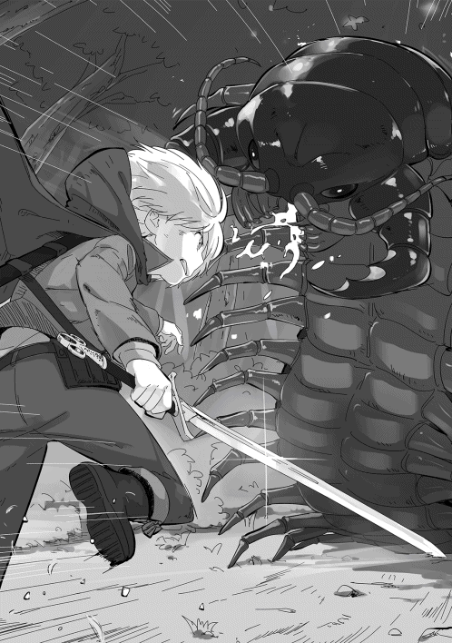
その間にリディが負傷者の下に辿り着いていた。若い剣術士は強力なムカデの顎の力で革鎧ごと胴を半ば噛 み千切られ、下半身は大量の血で赤く染まっている。リディが治癒魔法を掛けようと手をかざした時には、既に事切れていた。
俺は慎重にムカデに近づき、まだガサゴソとうごめく脚を無視して、頭の後ろの節に剣を突き入れる。ベルトラムの剣は関節の薄い皮膜をほとんど抵抗なく貫き、中の神経ごと切り落とす。ムカデの頭は支えを失ったかのようにゴトリと落ち、絶命した。
俺がムカデの死を確認していると、助けた冒険者のうち、二十歳くらいの男性の剣術士が近寄ってきた。
彼は「助かったよ......」と言って手を差し出してきたが、俺の姿に気付き、「なんだ、まだ子供じゃないか！」と叫ぶ。
しかし、自分の行いを恥じたのかすぐに謝罪し、もう一度右手を差し出してきた。
「いや、済まなかった。助力に感謝する。俺の名はイアン。七級の冒険者だ」
俺は剣を鞘に納め、その右手を取る。
「俺はザック。冒険者登録はしていない。それよりケガ人がいるなら治療するが」
イアンは「死んだジェムだけだ。攻撃を受けたのは」と言って、寂しそうに首を横に振る。リディが死んだ冒険者のジェムから離れ、俺たちの話に加わってきた。
イアンはリディの美しい顔を見て、思わず息を呑むが、すぐに真面目な顔に戻った。
リディはイアンに「リディアーヌよ。四級よ」と言って右手を差し出す。
イアンと握手をしながら、「ジェム のことは残念だったわね」と言って少し表情を曇らすが、すぐに真剣な表情で俺を見つめる。
「今回は運が良かっただけ。格上の相手に攻撃を仕掛けるのは自殺行為よ。このことはきちんと理解しておきなさい」といつになく厳しい口調に返す言葉が見つからない。
俺が無言でいると、リディはにこりと笑って俺を抱きしめる。
「分かってくれればいいわ......あなたがいなくなるのが怖いの。だから、無茶だけはしないで」
抱きしめる彼女の腕が少し震えていた。
助けようと思った時、俺は人の死を受け入れられなかった。助けられる可能性があるならと他のことを考えず、闇雲に突っ込もうとしていた。俺は突然、ジェムという冒険者の死を認識した。そして、人が殺されるところを目の当たりにし、その衝撃が俺を襲う。
（知り合いでも何でもないただの他人。なのに、人が殺されるというのはこれほどまでに衝撃を受けるものなのか......これがシャロンだったら、リディだったらと思うと震えが止まらない......）
リディが俺の様子に気付き、もう一度強く抱きしめてくれた。それで何とか体の震えが収まる。
（俺がこういう状況なら、シャロンはもっと動揺しているはずだ......なんて情けないんだ。いい大人の俺が自分のことにかまけて......）
俺はシャロンに声を掛けるため、振り向いた。
彼女は俺が抱きしめられていたことに少し寂しそうな表情を浮かべていたが、戦闘や人の死で衝撃を受けているようには思えなかった。
俺はシャロンに頭を下げ、「すまなかった。もう少し冷静にならないといけないな」と素直に謝る。彼女は大きく首を横に振り、
「か、格好良かったです......それに私は怖くありませんでした。ザック様が守ってくださると信じていましたから......」と言ってきた。その言葉に顔が熱くなる。言ったシャロンの方も真っ赤になっていた。
俺たちが無言で見つめ合っていると、リディが「はいはい。まだ危険な森の中よ」と言いながら割り込んできた。
「魔晶石は回収しておいたけど、この後はどうするの？」
「もう少し森の中を歩いてみようか」
俺たちが森の中に入っていこうとすると、後ろからイアンの声が掛かる。
「この素材はどうするんだ？ ジャイアントセンチピードの甲殻は結構な値で売れるんだが」
俺はリディに「そうなのか」と尋ねる。
「ええ、あのくらいだと五十クローナくらいにはなるんじゃないの」
俺は五十クローナ、つまり五万円を捨てていくということが信じられず、「なら、何で回収しないんだ？」と尋ねた。
「誰が持つのよ。うちのメンバーじゃ持ちきれないわ。第一、解体するのが面倒じゃない。魔晶石と討伐報酬の方が高いんだから、わざわざ面倒なことをする必要はないのよ。それに嫌いなの。ああいう虫っぽいのを解体するのは」
最後の言葉が本音のようだが、彼女の言葉にも一理ある。解体に時間が掛かるし、重い荷物を持って街に戻る時間も無駄だ。俺たちは金儲けのために戦っているわけじゃない。もちろん、金は必要だが、報酬と魔晶石の売却益で十分な儲けになる。それなら時間を有効に使った方がいい。もちろん、もっと高い素材の場合は当然回収するつもりだ。
「ムカデの甲殻はいらない。そちらに余裕があるなら回収しても問題ない」
イアンは信じられないという顔をするが、「助かるよ」と言って頭を下げてきた。
俺はその腰の低さに驚いていた。
（命を助けられたからなのかもしれないが、十歳の子供に頭を下げられるのか。実力主義だと言ってしまえばそうかもしれないが......ガイは子供がギルドに行くと絡まれるといっていたが、これなら俺が行っても問題ないんじゃないか？）
俺たちはイアンたちと別れ、再び森の奥に向かった。
九月一日。
秋というにはまだ暑い日だが、澄んだ青空に白い鰯雲 が浮かび、空は徐々に秋の気配を感じさせている。
ガイが出発してから、晴れた日には森に行き、雨の日には居住環境の改善を行っていた。合計十二日間で剣術士レベル十八、風属性魔法二十五と、それぞれ一レベルずつ上がっている。シャロンの風属性魔法も十八に上がり、戦闘を何度も経験することで大抵の魔物を見ても冷静に対応できるようになっている。
家の住環境改善だが、やったことは大きく分けて二つある。
一つ目が風呂の設置だ。風呂は一階の排水設備のある部屋に設置することにし、浴槽は長さ二メートル、幅八十センチメートル、深さ八十センチメートルくらいの割と大きめの物を作っている。以前、村で作ったときは二十日くらい掛かったが、五歳だった時と比べ魔力が六倍くらいになっているから、三日で浴槽は完成した。更に当時に比べ、魔法の技術が上がったためか、魔法で作った石の表面をガラスのように変えている。そのおかげで石造りというより、タイル張りのような美しい浴槽になった。
魔法で湯を沸かすため釜がなく、すっきりとした作りになっている。
更にシャワーがほしいと思っていたので、風呂の上部に小型の樽を置き、金物屋でジョウロの先だけを手にいれて、簡単なシャワーを作った。
このシャワーも基本的には魔法を前提としており、水生成 の魔法で水を張り、ペルチェ効果の魔法で温めている。夏場のこの時期に温 めのシャワーを浴びられるのは結構気分がいい。リディもシャロンも気に入っており、作った甲斐があった。
もう一つは、冷蔵庫だ。
冷蔵庫といっても氷で冷やす氷冷蔵庫だ。もちろん自分で作ったわけではなく、不動産屋のマクラウドに紹介してもらった家具職人に作ってもらった。その職人は分厚い木で作った箱のような家具を何に使うのかとしきりに首を傾げていた。
氷冷蔵庫は高さが一メートルくらいで内容積が七十センチメートル×五十センチメートル×五十センチメートルほど、中には三段の棚がある。その中に銅板で作ってもらった四角い器があり、そこに氷を置いて冷却する。
密閉度が甘いため、氷が解ける速度は速いが、それでも肉や魚を保管するのにずいぶん役立っている。ちなみに氷もペルチェ効果の魔法で作成するが、潜熱を奪うため思いの外、魔力 を消費する。冬になったら、風呂を沸かすのとセットにするつもりだ。
そして、今日は入学式だ。
真新しい制服に着替え、三人で学院に向かった。途中で俺たちと同じような真新しい制服に身を包んだ新入生がたくさんおり、初々しい姿を見せている。
入学式は校舎の前の中庭で行われるため、新入生はクラス別に前側に並び、二年生から五年生までの在校生がその後ろに並んでいく。そんな中、俺は最前列の一番端に立ち、式典が始まるのを待っていた。
入学式自体は日本の学校と同じような感じだ。式典の終わり頃に新入生代表の挨拶があり、首席である俺がやるのだが、全くやる気がなく適当に作った文章を読むだけのつもりでいる。
進行役の四十代くらいの男性に呼ばれて演壇の上ると、一生懸命に挨拶をする子供を演じた。一分ほどの挨拶を終えると拍手が沸き上がる。
俺は〝終わった終わった〟と緩みそうになる顔を引き締めながら、自分の場所に戻っていった。
入学式が終わると、それぞれの教室でオリエンテーションが行われる。
教室に入ると、俺たちの担任になるアリック・ベネット教諭が教壇に上がり、「順番どおりに席に着きなさい」と大声で指示を出していく。
ベネット教諭はやせ形で細い目が特徴の二十代後半の人間の男性だ。
俺たちは言われた通り、席に着いていく。俺の席は入口側の一番前の席で俺の横にシャロンがいる。
全員が席に着いたところで、「一年間はその数字が君たちの出席番号になります......」とベネット教諭が説明を始めた。
このエリートクラスである一組では出席番号は成績順になるらしい。来年以降は前の年の順位で変わるが、何とも分かりやすいシステムだ。ベネット教諭が自己紹介をするよう促したのですぐに立ち上がり、簡単な自己紹介を行った。その後、シャロンを皮切りにクラスメイトたちが次々と自己紹介を行っていく。
全員の自己紹介が終わると、ベネット教諭がオリエンテーションを始めようとした。しかし、シャロンの隣にいる男子生徒、三位で合格したクェンティン・ワーグマンがすくっと立ち上がり、教諭に質問を始めた。
「先生に伺いたいのですが、この中に不正に入学した者がいるのではないですか？」
「不正？ どういうことかな」と聞き返す。俺は彼が何を言うか、何となく予想していた。
「ロックハートとジェークスの二人はまだ十歳だそうですね。この学院は十二歳からしか受験できないはずです。もし十歳というのが事実なら、ここにいる資格はないと思うんです」
彼は自信満々にそう言い切った。俺は予想通りの展開に思わず噴き出しそうになるが、教諭がどう答えるのかに興味を持ち、事態の推移を見守ることにした。
「私も調べてみたのだが、学院の規定に年齢制限は設けられていないのだよ。だから、彼らに受験資格はあることになるね」と教諭は冷静に答える。
クェンティンはそんな答えが返ってくるとは思ってもいなかったようだ。勝ち誇った顔から歯軋りするかのような悔しげな表情に変わり、次第に顔が紅潮していく。
（堂々と指摘する割には自分では調べていなかったんだな。まあ、十二歳の子供らしいと言えるんだろうが、あれだけ自信満々だったから、結構恥ずかしいんだろうな）
彼は紅潮した顔で更に俺たちを糾弾する。
「十歳の子供が首席と次席になれるわけはないんだ！ インチキをしたに決まっている！」
癇癪を爆発させるような感じで喚くが、教諭はそれに対し、柔らかい口調で諭していく。
「年下の子に遅れを取ったことを、悔しいと思うのは理解できるよ。でも、ここでそれを指摘するなら、せめて証拠を出してから言ってほしいね」
クェンティンは更に顔を赤くするが、それ以上何も言えず、ドンと大きな音を立てて腰を下ろした。
（彼がそう言いたくなるのは理解できるよ。俺たちがいなければ、彼が首席だったんだから。しかし、少なくとも俺たちに対して謝るよう諭す必要があると思うんだが。まあ、俺にとってはどうでもいいが......）
教諭は何事もなかったかのように学院生活での注意事項などを説明していく。
「それでは皆さん、明日からこの学院で学ぶことになります。皆さんの中には貴族の方もいますし、平民の方もいます。出身地もいろいろです。ですが、この学院で学ぶ以上、身分や出身地で差別することはありません。このことは皆さんにも守っていただきます。そこで、皆さん同士の呼び方なのですが、仰々しい敬称をつけることや呼び捨てをすることを禁止し、男性にはミスターを、女性にはミスを付けて呼ぶようにしてください。もちろん、大人として敬意を持って接するように......」
この魔術学院にはカエルム帝国の北部から北のサルトゥース王国まで様々な国から生徒が集まる。その中には王家に連なる者もおり、身分を笠に着て横柄な態度を取る者もいたらしい。それを防ぐため、学院では公式の場、つまり授業中などでは一律ミスターかミスを付けて呼ぶことになっている。
当然、俺がシャロンを呼ぶ時も〝ミス・ジェークス〟と呼ぶことになる。どこかのラノベの魔法学校みたいだと思い、自然と笑みが零れてくる。
ベネット教諭の説明は更に続いていく。
「......この中には魔術師ギルドの重職に就かれている方の関係者もいますし、さる王国の伯爵家の直系の方もいます。ですが、この学院ではその身分を利用することは禁じられています。このことは決して忘れないようにしてください......すでに知っていると思いますが、この学院では五日に一度休みがあります。五と十の付く日が休日になります......」
この学院というか、この街では五十日 が休みに当たる。この他に一月、四月、十月の一日は祭りということで休みになり、七月と八月は夏休みになる。
説明が終わると、教諭は解散を指示して教室を出て行った。
その後、生徒たちも次々と教室を出て行くが、俺とシャロンが教室を出ようとした時、クェンティンが立ちはだかった。
「ミスター・ワーグマン。何か用か？」と俺が言うと、彼は顔を歪めて睨みつけてくる。俺もシャロンも実戦を経験しているので、子供に睨まれたくらいでは全く何も感じない。逆にあまりの必死さに笑いを抑えるのが大変だった。
「お前らのインチキを絶対に見付けてやる！ 俺の父上は魔術師ギルドの評議員なんだぞ。だから、学院の中でも......」
彼は自分の父親の力を誇示して脅しを掛けてくるが、俺たちが怯えもせず、怒りもしないので一人でヒートアップしていく。
「見ていろよ！ 今にこの街にいられなくしてやる！」と捨て台詞を言って、教室を出ていった。
シャロンは「何がしたいんでしょう？」と首を傾げている。
「まあ、一番になれなかったから悔しいんだろう。あまり関わらないようにしような」
俺たちの学院一日目は少し後味の悪い終わり方で終わった。
翌日の九月二日から本格的に授業が始まった。一年生の授業は午前八時から正午が座学、午後一時から三時が実技の授業となっている。午前中の座学だが、魔法理論の他に算術や歴史、地理などの一般教養も必修となっている。
そして、実技の授業なのだが、これも呪文の詠唱と精霊の力の集め方などの基本的なテクニックを反復するだけの授業だった。一年生の魔力保有量 ではちょっとした魔法を使うと、すぐに魔力切れの症状を見せてしまうため、学院の講師も魔力切れにならないよう授業内容を考えているようだ。
実技の指導は火と土の属性を持つチェンバースという二十代半ばの男性講師で、彼は右手に指揮棒のような細い棒を持ち、俺たちに呪文の唱和をさせていた。
「呪文の正確な唱和こそ、上達の早道だ。ここに書いてある呪文を魔力を込めずに何度も反復して唱えるんだ！......」
俺は呪文の唱和と言うあまりに初歩的な授業に呆れ、チェンバースに他の指導を頼んだが、彼はすぐに立腹し、「勝手なことはするな！」と怒鳴った。更に俺が自分はレベル二十五であり実戦経験もあると反論すると、「黙れ！ 私の指示に従え！」と怒鳴り、手に持った棒を振り下ろしてきた。
俺は反射的にそれを避けた。無様に空振ったチェンバースは睨みつけてきたが、俺は気付かないふりをして、「分かりました」と頭を下げて、呪文の唱和に加わった。
実技の授業を終えて教室に戻ると、ホームルームのような時間があり、それが終わると下校となるのだが、授業の時間が無駄に思えて仕方なかった。
（森に入れば、その分経験が得られる。今の授業じゃ聞いても全く意味はないし......さて、どうしたものかな......）
ホームルームが終わり下校時間になる。普通ならすぐに下校するのだろうが、まだ、友人関係が築けていないためか、何となく残っている生徒が多い。
寮に入っている生徒たちは数人のグループとなって教室から出て行くが、三割ほどいる通学生たちはこのまま帰ると自分がクラスの中で浮いてしまうのではないかと、警戒して動けないようだ。
俺はそんなことを気にする必要が無いため、帰っても良かったのだが、シャロンは普通の友人関係を作るべきだと思い、他の生徒と同じように教室に残っていた。
「ザック様......いえ、ミスター・ロックハート。帰らないんですか？」
シャロンは俺の考えに気付くことなく、そう聞いてきた。
（誰かを誘ってもいいが、どうするかな。どうも、俺たちのことを警戒しているような感じだし。昨日のクェンティンの言葉を気にしているんだろうな......仮にも魔術師ギルドのお偉いさんの息子なんだから......）
シャロンが更に帰らないのかと聞いてきたので、そのまま教室を出て行く。
俺たちが出て行った後、何となく空気が緩んだので、俺たちに出て行ってほしかったようだ。
（気配察知で何となく分かったが、あまりいい気はしないな。リディに相談してみるか......）
帰り道でシャロンに今日の授業の感想を聞いてみた。
「そうですね。午前中の授業は退屈でした。ザック様やリディアさんに教えて頂いたことばかりですし。実技の授業も同じでした。これからもあれがずっと続くのでしょうか？」
シャロンも俺と同じように感じていたようだ。
家に帰ってそのことをリディに相談すると、「授業なんてサボってしまえば？ 別に授業に出ないと進級できない仕組みじゃないんだし」とあっけらかんと言われてしまった。
俺が「出席日数とかそういう縛りはないのか？」と尋ねるが、
「さあ？ 誰も出席したかどうかなんて、数えていないんじゃないの。私も授業が面倒な時は図書館に篭っていたけど、ちゃんと卒業できたわよ」
そう言われてみれば、名簿などで出欠を確認している様子はなかった。
リディの言うことが本当なら図書館で勉強する方が効率的だ。午前中は図書館で自習し、午後は森に入るか、森に入る日と自習する日に分けてもいい。この方法が一番効率的だが、これだと学院に入った意味はほとんどない気がする。
翌日、学院の規則を調べると、リディが言った通り出席日数が進級の要件になっていないことが確認できた。
九月四日。二日間授業を受けたが、授業を受け続けることに意義を見い出せなかった。そして、今日は教室に顔を出さず、リディとシャロンと共に図書館の前に来ている。
ドクトゥスは学術都市と呼ばれるだけあって、魔術学院の他に私塾などの教育機関が多い。そして、魔術学院や私塾には多くの研究者がいる。
その研究者たちが足繁く通うのが、世界最大の図書館、通称、大図書館とも呼ばれる〝プラエタリタ図書館〟だ。ここには七十万ともいわれる蔵書があり、古いものでは三千年以上前、紀元前の物もあった。大図書館はドクトゥスの前身である城塞都市の主城がそのまま利用されており、この街で最も大きな建物でもある。
城塞を利用しているため、城門から入ることになるが、そこには利用料を支払う窓口があった。魔術師ギルドに所属する魔術師は無料であるため、オーブを見せて中に入っていく。
中は数多くの灯りの魔道具で照らされており、思ったより明るい。そして、城だった頃は大ホールであったであろう場所には高さ数メートルの本棚が並び、多くの人が梯子 を掛けて本を探していた。
紙と革、そして微かなインクの匂いが俺の鼻孔 をくすぐる。古本屋と革製品の店の匂いを合わせたような独特な匂いに少し戸惑う。しかし、リディは俺の前でくるりと回り、「懐かしいわね。この匂い。それに静けさ......本当、懐かしいわ」と楽しそうに、そして懐かしそうに呟く。
リディが本棚に近寄ろうとすると、司書らしい若いエルフの女性が「もしかして、リディアーヌ？」と声を掛けてきた。
その女性は切れ長の理知的な目と滑らかな白い肌、すらりと背が高く、豊かな金髪を頭の後ろでまとめたキャリアウーマンという感じの美女だった。その女性は図書館と言う静かな場所と言うことを忘れ、「私よ、覚えている？ キトリー、キトリー・エルバインよ」と興奮している。
リディもキトリーという女性の方に目をやり、「キトリー？ あっ！ 本当にキトリーだわ」と言って、彼女の手を取る。どうやら昔馴染みのようで、突然の再会に二人とも驚いていた。
「まだ、ここで司書をしているの？ 四十年以上も経っているのに？」
リディのその言葉にキトリーさんが少し口を尖らせ、「失礼ね。これでも学院の教授なのよ。まあ、図書館に入り浸っているのは昔と一緒だけど......」と最後は尻すぼみになる。
どうやら司書ではなく、魔術学院の教授で研究資料を探しに来ていたらしい。
俺は周りに迷惑が掛かると思い、
「ここでは迷惑になる。どこか別の場所に移った方がいい」とリディに小声で話しかけた。
その声はリディだけでなく、キトリーさんにも聞こえたようで、「あっ」と言うと口を押さえていた。
その後、図書館にある会議室のようなスペースに行き、リディが俺たちを紹介していく。
「ザカライアス・ロックハートとシャロン・ジェークスよ。私の教え子たちなの」
リディが冗談めかしてそう言うが、キトリーさんは俺たちの名を聞き、「あなたがミスター・ロックハートなの？ あのラスペード先生が千年に一人の天才だと言っている今年の首席の？」と目を丸くする。俺はその言葉に驚くが、すぐに気を取り直して自己紹介をする。
「ザカライアス・ロックハートです。ザックと呼んでください」
俺の自己紹介が終わっても、彼女の顔はまだ信じられないというように目が見開かれたままだった。そしてシャロンが自己紹介を終えると、ようやく我に返り、「キトリー・エルバインよ。これでも神学と歴史の研究をしているの。四年になれば授業を受け持つはずよ」と言って、右目をぱちりと閉じてウインクをしてきた。
その仕草にどぎまぎしていると、「私のザックに手を出さないでよ」とリディが頬を膨らませる。キトリーさんは意外そうな顔で、「あら、あなたがそんなことを言うなんてね」と微笑んでいた。
リディとキトリーさんが旧交を温めた後、俺たちが来た理由を説明した。
キトリーさんは「要は一年生の授業では役に立たないから、自分で勉強したいと言うことね」と言って、なるほどというように頷く。
「はい。ところで私たちみたいに授業に出ずに自習している人って多いんでしょうか？」
念のため、教授であり、学院生活が長いキトリーさんに確認してみた。
「そうね。座学を抜け出してくる子は毎年二、三十人はいるわね。まあ、二年になったら減るんだけど」
俺はその数に驚息、「二、三十人も......」と言葉を失う。そして、「実技の方はどうなんでしょう？」と尋ねた。
「実技はみんな出るわよ。だって、この学院じゃ実技の成績が一番大事だもの」
俺が「そうですか」と呟くと、「それでここには何を勉強しに来たわけ？」と尋ねてきた。
「闇と金属性について調べたいんです。他には複合魔法に関することなんかも......」
俺が説明していくと、キトリーさんは面白いものを見つけたとでもいうようにニコリと笑う。
「それならいい本があるわ。ちょっと待っていて」と言って、本棚の方に行ってしまった。
俺はどうしていいのか分からず、リディの顔を見る。
「いつものことよ。本のことになるといつもああなるのよ、キトリーは」と笑っていた。
しばらくすると、キトリーさんは本を三冊抱えて帰ってきた。
「この辺りが最初はいいと思うわ。もし、満足できなかったら言ってちょうだい」
彼女の持ってきた本は、〝闇属性入門：魔族に学ぶ実践魔法〟と〝付加魔法：金属性呪文集〟、そして、〝二属性魔法は可能か？ 複数属性による魔法の実態〟という本だった。
彼女に礼を言い、シャロンの本についても相談した。俺が説明を終えるとすぐに彼女は頷き、二冊の本を持ってくる。
シャロンが礼を言うと、キトリーさんはシャロンの頭を撫でながら、
「こんな小さな子が首席と次席なわけね。学院の上の連中が慌てるのが良く分かったわ。それにしても、あなたの教え子ね......あの〝引き篭りのリディア〟が人にものを教えるなんて信じられないわ」
「あら、〝図書館の主 〟、〝古書たちの女王〟、キトリー様に言われたくないわね。本だけが友達だったあなたが教授になって授業まで受け持っているなんて。当時を知っている人が聞いたらみんな卒倒するわ」
リディとキトリーさんは毒舌の応酬をしているが、二人の表情は明るかった。
（この人はリディの数少ない友達なんだな。それにしても、俺たち以外にもこれだけはっきりと物を言うんだな。こんなリディを見るのは初めてかもしれない......）
二十分ほど話をした後、キトリーさんが「これでお暇 するわ。この後、あの ラスペード先生のところに行かなくちゃいけないのよ」と言って、部屋を出て行った。
俺たちも会議室を出て、机が並ぶ読書スペースに移動する。
最初に最も興味のあった闇属性の本を読み始め、午前中一杯を使って図書館で自習をした。その後、三人で森に入ったが、移動時間分が無駄になり効率が悪い。結局はぐれの狼を一匹倒しただけでほとんど戦果は上がらなかった。今後は雨の日などに図書館で自習し、天気のいい日は森で魔物を狩ろうと思っている。
俺とシャロンは座学も実技も授業を受けることをやめた。それでは学校に入った意味が無いのではと言われそうだが、図書館を無料で使えることは大きなメリットだ。実際、図書館では同じように座学の授業をさぼっている学院の生徒は多く、俺たちだけが特殊と言うわけでもない。
授業を受けないことにしたもう一つの理由はキトリーさんから継続的に話を聞けることようになったことだ。彼女は神や精霊について研究しており、特に神の存在について遺跡の調査も行っているほどの研究者だ。また、精霊の力を効率的に使う方法にも造詣 が深い。
四年生以上の高学年の授業と同程度か、それ以上の話を聞けるのだ。一緒に聞いているシャロンは時々付いて来られない時があるが、それでも帰り道などで俺に質問して理解しようと努力していた。その結果、彼女の知識も一年生とは思えないほど増えている。
図書館にいく日だけは連絡事項などの確認をするため、ホームルームには出るようにしていた。晴れた日には森に行っているから、三日に一度くらいしか教室に顔を出していない。
入学から二十日ほど経った九月二十二日、突然それは起こった。
その日は朝から小雨が降る生憎の天気だったため、森に行かず図書館で自習していた。雨が降ると俺たちがいると知っているため、キトリーさんも顔を出してくれる。そうやって午後三時頃まで図書館にいた後、俺たちは学院に向かった。
いつものように教室の扉を開けると、そこにはあるはずの物がなかった。そう、一番前にあるはずの俺たちの机がなくなっていたのだ。シャロンはその事態にどう反応していいのか分からず、おろおろし始める。
（誰が主導したのかは知らないが、子供らしい悪戯 だな。やった奴の見当は大体つくが......）
俺たちが入っていくとクスクスという笑い声が漏れ始める。俺は自分の席があったところに行き、その場で立っていることにした。
シャロンも俺と同じように立っているが、何が起こっているのか分からず、まだ不安げな表情を浮かべている。俺は彼女を安心させるように小声で「俺に任せろ」と呟く。シャロンは小さく頷き、少なくとも表面上の動揺はなくなった。
しばらくすると担任のアリック・ベネット教諭が教室に入ってくるが、入口に一番近い俺が立っているため、一瞬ギョッとした顔をする。
「ミスター・ロックハート、ミス・ジェークス。これはどういうことかね？ なぜ立っているのかね？」
俺は特に感情を込めることなく、淡々と答えていく。
「立っているのは椅子が無いからです。机と椅子が無いことについては、私もミス・ジェークスもあずかり知りません」
ベネット教諭は少し目を細めて、やや強い口調で俺を責めてきた。
「君たちは自分たちに与えられた学院の備品の管理もできないのかね？」
俺はその言葉にカチンと来たが、「自分たちがいない時の管理まで求められるのでしょうか？ それより誰がこのような悪戯をしたのかを確認すべきではないですか？」とあくまで冷静な口調を崩さないように主張する。
俺の言葉に彼は更に語気を強め、
「このクラスの者がやったと言うのかね！ 君は同級生を信じることもできないのか！」と怒気を露わにした。この不自然なベネットの行動に疑問を持つ。
（俺に含むところがあっても、子供相手にここまで言う必要は無いはずだ。どういうことだ......）
そこで更に反論してみた。
「私はこのクラスの者とは言っていません。誰が悪戯をやったのかを確認する必要があると言っただけですが」
ベネットは俺の反論に対して「屁理屈を言うな！」と更に怒りをぶつけてくる。
「屁理屈を言っているわけではないのですが。この状況で一番迷惑を被 っているのは私たちです。私がそれを行う理由がありません。誰かが悪ふざけでこういうことをしたのではないかと思ったわけです」
「君たちは私の授業に出ないだけでなく、このような悪ふざけをするのかね。そもそも授業に出ないのなら、机も椅子も要らないと言いたいのだな」
ますますベネットの考えが分からなくなった。
（俺が気に入らないからといっても度が過ぎている。俺を辞めさせたいのか？ 何のために？ 首席である俺を辞めさせれば教師としての資質を問われるはずだ。俺を攻撃するメリットは何なのだ？ 少し揺さぶってみるか）
そう考え、相手の矛盾点を突く。
「先生は私たちが自分で机と椅子をどこかにやったとおっしゃりたいのですか？ 証拠も無しに私たちを疑っておられると、そう言うことでしょうか？」
ベネットは俺が反撃してくると思っていなかったのか、「そうは言っていない」とやや腰が引けた答えを返すが、すぐに教室を見回し、
「だが、このクラスにそんなことをする生徒はいないのだよ。私が授業で見る限りはね」とややオーバーなアクションまで加えて嫌味を言ってくる。
ベネットの考えが全く理解できない。
「では、私たちを疑っているのかどうかを教えてください」と聞くと、「もちろん、君たちを信じているよ」と笑いながら答えるが、「しかしだ。どんな優秀な生徒でも時として悪戯をしたくなる時があるからね」とにやけた顔で付け加える。
いい加減頭に来たので、ベネットの論理 を逆手にとって反論する。
「では、私を疑ってはいない。しかし、私が悪戯をしたかもしれないと思っておられると。その考え方なら、このクラスの生徒が出来心で悪戯をしてもおかしくは無いのでは？」
俺の反撃にベネットは顔を赤くして声を荒げる。
「そんなことは言っていない！ 君は私に逆らうことしかできないのか！」
俺はベネットと会話しながら、教室の中の様子を探っていた。誰かがこの言い争いにリアクションを起こすだろうと考えたからだ。気配を探るとクェンティン・ワーグマンとアニータ・イシャーウッドが笑いを堪えているのが感じられた。この他にも後ろの方で数人の生徒がクスクスと笑っているのが感じられた。
ベネットはまだ何か言っているが、俺はそれを無視してこの状況について考えていた。
（クェンティンたちが悪戯を仕掛けてきたのは分かる。しかし、ベネットがこんな子供染みた対応をするのが理解できないな。普通の子供ならクラス全体からいじめを受けた上に、担任教師からこんな言い方をされたらショックで不登校になるだろう。最悪、学校を辞めると言いかねない......）
今回のことで最大の疑問はベネットが俺を辞めさせるかのように振る舞っていることだ。普通に考えれば、俺を辞めさせても彼にメリットはない。首席である俺が辞めれば指導力不足を指摘されるだけで、デメリットにしかならない。それなのに俺に嫌がらせのような言葉を投げつけてくる。そこが最大の疑問だった。
（俺が思っている以上にベネットが幼稚だという可能性は否定できないが、それにしてもおかしい......）
俺はまだ何か嫌味を言っているベネットに対し「これ以上話しても平行線ですね」と話を切り上げ、
「分かりました。他の先生に相談してきます。そうですね、ラスペード先生がいつでも遊びに来なさいとおっしゃっていましたから、ラスペード先生に相談しようかと思います」と脅しを掛けてみた。
俺の脅しにベネットは慌てる。
「他の先生に相談などする必要は無い！ 君は私を馬鹿にしているのか！」と激しい感情をぶつけてくる。
この時、俺は腹を立てていた。普通の子供なら大人に罵倒されれば心に傷を負う。もし、シャロンだけだったらと思うと怒りが湧き上がってくるのだ。
まだ俺を罵倒しているベネットを無視して、怒りを抑えるためにこの状況を分析していく。
（なぜベネットがこんな馬鹿なことをしているのか......この男が馬鹿なだけとも思えるが、それでも度が過ぎている。誰かの指示に従っているのか......）
俺は疑問を感じながらもシャロンが傷付くことを恐れ、「ここにいても仕方が無い」と彼女の手を取り、教室を出ていこうとした。後ろからベネットの「待ちたまえ！」という声が聞こえてくるが、それを無視して教室の中を歩いていく。
数人の生徒はニヤニヤしているが、大多数の生徒は困惑した表情を浮かべていた。
（悪戯の方は少数のグループが主導しているという感じだな。だとすると、クェンティン・ワーグマンが動いているんだろう。奴の親父はギルドの評議員だ。この学校にいる限り、奴に逆らいたくないはず......）
そこでベネットの対応がクェンティンの影響かもしれないと思い付く。
（まさか教師であるベネットも奴の言いなりなのか？ いくら評議員の息子でも世襲じゃないんだ。それほどの影響力があるとは思えないが......）
これ以上嫌がらせを受け続けるつもりはなかった。しかし、評議員の息子の力が俺の予想を遥かに超えている場合、この街にいられなくなる可能性がある。実際、クェンティンは最初にそう宣言している。
（そうだとしたら、自分の身を守るために手を打たなければならない......）
教室を出ると、シャロンが不安そうな顔で俺に声を掛けてきた。
「大丈夫でしょうか？ 先生も他のみんなも私たちが嫌いなんでしょうか？」
少し青ざめていたので、俺は安心させるために笑顔で「そうじゃないよ」と答える。
「恐らく一部の生徒が悪ふざけをしているだけだろう。心配しなくていい。俺が何とかするから」
俺がそう言うと彼女は笑みを浮かべて、握ったままの手を握り返してきた。
その後、小雨が降るドクトゥスの旧市街をシャロンと二人で歩いていく。
歩きながら、今回の事件について考えていた。
学院の教師が僅か十二歳の子供の言いなりになるほど、魔術師ギルドの評議会議員の権力が大きいと仮定すると、ワーグマン議員の息子の障害となる俺はこの学術都市ドクトゥスから排除される可能性がある。
学院だけなら別に未練は無い。確かに年払いした授業料は惜しいが、稼げないほどの金額でもない。それに魔法の勉強だけならキトリーさんの指導を受けられればいいし、あの ラスペード先生を頼ってもいい。二人が駄目でもどこかの私塾に入れば、最低限の指導は受けられるだろう。
聞いた話ではここドクトゥスには二十あまりの私塾があり、その中でも三大私塾はティリア魔術学院に匹敵するほどの教育機関だと言われている。
私塾であるためティリア魔術学院のような画一的な教育ではなく、俺のニーズにも合う。更にその三つの私塾はティリア魔術学院をライバル視しているため、常に優秀な学生を引き抜こうとしているらしい。そのため、授業料を免除したり、図書館の利用料なども塾側が負担したりと、魔術学院以上の待遇を受けられる。
つまり、ここドクトゥスから追い出されさえしなければ、俺たちに不利になることはあまりないということだ。
俺は自分とシャロンを守るため、この問題を解決すると決めた。
（まずは何といっても情報収集だな。最初は隣のリトルフさんに話を聞くべきだろう。あの人はティリア魔術学院の事務員だから何らかの情報を持っているはずだ。それとキトリーさんにも話を聞いた方がいい......）
二人からどの程度の情報が手に入るかにもよるが、それだけでは不足な気がしていた。いずれも学院関係者であり、ある程度の内部情報は手に入るかもしれないが、ギルドの評議員の話になると客観的な情報が得られない可能性がある。
（情報屋のような商売があればいいんだが......冒険者ギルドに情報収集の依頼を出すという手もあるな。別に国家機密というほどの物がほしいわけじゃないんだ。ワーグマン議員の情報、特に考え方やライバルの有無、ギルドでの立ち位置なんかが分かればいい。その上でどうやってこの状況を打開するかを考えるしかないだろう......）
そして、一緒に歩いているシャロンを見ながら、彼女とリディに話すべきか考えていく。
（二人に話すのはどうかな。特にリディは。普段は人前に出るのを嫌がるくせに俺のことになると我を忘れるし、下手をすると学院長のところに怒鳴り込みに行きかねない......）
しかし、考えを進めて行くうちに、リディに話すべきではないかと思い始めた。
（今回は直接的な危険があるわけじゃない。それに俺一人の方が動きやすい。それでもリディに隠し事をするのは良くないな。そうなるとシャロンにも話しておくべきか......）
俺は家に帰るとリディとシャロンにその話をした。途中、リディが怒りでわなわなと震え始めるが、それを無視して話を続けていく。
「......というわけで俺が一人でやる。今回は身の危険はほとんど無いはずだしな」と言ったのだが、リディは首を横に振り、「私は納得できないわ！」と興奮気味に立ち上がる。
「そのベネットっていう教師に文句を言ってやるわ！」
予想通りの反応過ぎて笑いが込み上げるが、真剣な表情を崩すことは我慢した。
「俺に考えがある。だから、今は動かないでほしい。それにベネット教諭に文句を言っても解決にはならないよ」
それでも怒りが収まらないことに代わりないようだが、渋々「分かったわ。でも、私も手伝うから」と矛を収めてくれた。
翌日は天気も回復し、俺たちは北の森に入ったのだが、リディは昨日の話の鬱憤 が未だに溜まったままなのか、その怒りの矛先を魔物に向けていた。
（いつもより威力が上がっている気がするな。リディも怒らせると怖いってことか。しかし、怒っていても森の中では冷静だ。さすがはベテランだな）
その日の最後に槍鹿 という魔物を仕留めた。槍鹿は普通の鹿より肉にコクがあり非常に美味い。サイズは大したことはないが、四足の魔物だけあって三人で食べるには肉が多過ぎる。近所にお裾分けをするという口実で、隣のリトルフさんに話を聞きにいく。
「......ところで学院の先生たちって、どういう方たちなんですか？ 私たちを教えてくれる先生たちは結構若いようですが......」
俺が聞きたかったのは教師たちの考え方だ。ベネットを見る限り、教育に情熱を燃やしているような感じは受けない。実技のチェンバースはやる気どころか、正しい教育方針を持っているとすら思えなかった。
リトルフさんは小さく頷くと、「やっぱり気付いたね。学院には二種類の先生がいるんだよ」と楽しそうに話し始める。俺が「二種類ですか」と尋ねると、更ににこりと笑って頷く。
「そう二種類。まずは研究を主としている教授たちだね。もう知っているだろうけど、ラスペード教授なんかがその代表だね」
リトルフさんはそこで、どう説明したらいいのかという感じで言葉を切る。
「もう一つのグループが君たちを教えている先生たちなんだ。君が若いと言ったのは理由があるんだよ」
「理由ですか？」と子供らしく首を傾げ、彼の話を引き出していく。
「あまり大きな声で言うことじゃないんだけどね。君たちを含めた低学年の生徒の担任は魔術師ギルドから派遣されてきているんだよ。宮廷魔術師に推薦されることもなく、ギルド内の仕事にあぶれた人が流れてくるんだ。本当は良くないことなんだけどね」
「そう言う人たちは冒険者になるんじゃないんですか？」ともう一度首を傾げた。
リトルフさんは「もちろん冒険者になる人もいるよ」と頷くが、
「しかしね、冒険者や傭兵になるような人は最初からその道を選ぶものだよ。命懸 けの仕事に就くのに仕事が無いから仕方がないっていう選び方はしないからね」と少し笑う。
俺はもっともだと思ったが、やる気もなく、能力も低い者が次代を担う若者の指導者とする魔術師ギルドの方針に疑問に思った。
「ちょっと幻滅しますね。ギルドはどうしてやる気の無い人を学院に回すんでしょう？」
リトルフさんのつぼに嵌ったのか「そうなんだよ！」と、俺の言葉に釣られて憤慨し始める。
「ギルドは何も分かっちゃいないんだ。君に話していい話じゃないかもしれないけど、ギルドの中、正確に言うと評議会の中の勢力争いみたいなものに学院が巻き込まれているんだよ......」
リトルフさんは俺に対して熱弁を振るい始めた。
彼は五分ほど俺に不満をぶちまけた。優しい用務員さんに見えるが、十歳の子供にぶちまけるほどに不満が溜まっていたようだ。
「次代の若者を育てる大事な学院を政争の具にしてはいけないんだよ！ これは若い人だけじゃない、ギルドにとっても損失なんだ。でもね、分かっている人はいるんだよ」
「どなたなんですか」と話を振る。
「そう、ワーグマン議員という方なら学院を変えられるかもしれない。あのような人が議長になればね......」
ワーグマン議員という言葉に思わず反応しそうになる。平静さを装って、
「そのワーグマン議員という方が議長におなりになれば、学院は良くなるんですか？」と好奇心旺盛な子供を演じて尋ねる。
「そうだよ。議員はまだ三十代半ばくらいの若い方なんだけどね。とても凄い人なんだ」
どう凄いんだと思いながら、
「議員は僕たち学院生にとって、いいことをしてくれるんですね」という俺の言葉にリトルフさんは我が意を得たとばかりに勢いづく。
「あの人は学院を改革しようとしているそうなんだ！ そう、今の画一的な教育を改めようとしているんだよ！」
俺は「どういう風にするんですか？」と相槌を打って話を促すと、学院改革の概要を教えてくれた。
翌日、キトリーさんからも同じように話を聞いた。
結論から言えば、リトルフさんの言っていることと同じで、評議会の権力争いの影響で学院の教師の質が落ちていると言っていた。更にワーグマンについては、
「あの人の政策には賛成よ。教授の中にはまともに研究していないのに、研究費だけはしっかり受け取っている人もいるから。そんな人にとっては戦々恐々なんでしょうけど」と言って、ワーグマンの政策を手放しで褒めている。
そして、もう一つ重要な情報を入手できた。
「あなたのクラスにアニータ・イシャーウッドという女子生徒がいるでしょ。彼女の父親はギルドの参事で、ワーグマン議員に近い人なのよ。でも、あまりいい噂は聞かないんだけどね......」
イシャーウッド参事はワーグマン議員と同い年で現在共に三十六歳。学院の同期だそうで、ワーグマン議員が首席、イシャーウッド参事が次席で卒業した。
その後、ワーグマン議員が魔法の研究が盛んなサルトゥース王国の宮廷魔術師となり、十年の時を過ごした後、ドクトゥスに戻ってきた。そして、教育研究委員会の参事を経て三十五歳の若さで評議員となった。
一方、イシャーウッド参事はドクトゥスのギルド本部で着実に出世していき、四年前に参事に昇格している。
評議員の平均年齢は四十五歳、参事が四十歳と考えると二人とも異例の出世といえる。
「イシャーウッド参事の出世の仕方がちょっとね......何て言ったらいいのかしら、そう綺麗じゃないよ。競争相手を追い落とすって言うか......」
キトリーさんは言葉を選びながら説明していくが、何となく言いたいことは分かった。
（まだ全貌は見えないが、ワーグマン議員は高潔で理想に燃えた政治家、イシャーウッド参事は権謀術数を駆使する政治屋といった感じか。だとすると、イシャーウッド参事が噛んでいる可能性があるな......しかし、そんな奴を相手にするのは面倒だな。そもそもドクトゥスや魔術師ギルドを改革したいわけじゃないんだ。俺がこの街にいられればいいだけだ......）
予想通り、情報が足りない。
リトルフさんにしてもキトリーさんにしても学院の関係者であり、心情的には学院の改革に熱心なワーグマン議員に近い。鵜呑みにするのは危険だ。
しかし、どうやって情報を集めるかが問題だ。探偵業などないだろうし、情報屋がいたとしても子供の俺では交渉すら難しい。
キトリーさんに礼を言って家に戻り、リディ、シャロンに俺が調べたことを話していく。
「得られた情報だけで判断すると、ワーグマン議員が俺たちを追い出すということはないと思う。しかしだ。もし、この件が俺たちに対する嫌がらせだけじゃなく、別の要因も絡んでいると厄介だ。つまり、ワーグマン議員を追い落とす材料になっているような場合だな」
俺の説明に対し、リディが分からないといった感じで首を振る。
「なら、どうしたらいいの？ 私たちがそんな陰謀に関わる必要なんて無いんだけど」
「そうだな。今ある情報だけで考えれば、俺とシャロンが学院を辞めても、街から追い出されることはない。恐らくだが、そうすればギルド内の政争に巻き込まれることもないはずだ」
リディは「どういうこと？」と首を傾げる。横ではシャロンも首を傾げている。
「まずワーグマン議員がこの件に関与している可能性は低い。だとすると、彼の息子のクェンティンが言っていた父の権力を使って街から追い出すという懸念は無いと考えていい」
「確かにそうね」とリディが頷き、シャロンが理解していることを確認してから、更に話を進める。
「次にギルド内のゴタゴタだが、俺たちが学院を辞めればどうなるか。まず、俺たちがなぜ学院を辞めたか問題になる。特にラスペード先生は絶対にその話を持ち出す。先生が騒げば、学院は調査せざるを得ない。そして、調査をしていくと、クェンティンの存在が浮き上がってくる......」
俺の推論はこうだ。
クェンティンが教師たちを動かした力を、ワーグマン議員の権力であると仮定する。その場合、ベネットはクェンティンからだけではなく、ワーグマン議員の代理かそれに近い人物から俺たちを追い出すように示唆されているはずだ。そうでなくては、ただの子供の戯言 としか受け取らないだろう。
ラスペード教授が千年に一人の天才と評価している生徒、つまり俺が学院を辞めればどうなるか。まず、担任であるベネットに調査の目が向き、そして彼はワーグマン議員から間接的に俺たちを追い出すよう示唆されたと証言するだろう。
そうなった場合、ワーグマン議員は自分が関与していないことを証明する必要がある。しかし、無いことを証明することは難しいし、自分の息子が首席になるという事実が疑念を呼ぶ。つまり、彼がいかに自分の身の潔白を主張したとしても、やり手の彼が自らの関与を示す証拠を残すはずが無いと誰もが思うはずだ。
その結果、彼に利益があったことだけが印象に残る。そして、ほとんどの人は彼の主張を認めることはないだろう。議長の座を巡る争いにおいて、ギルド内外での評判がどの程度影響するかは分からないが、高潔な人物という評判は一気に地に落ちる。
結果として、ワーグマン議員の政治生命を絶つ、あるいは、弱めることができるのだ。
議員を嵌めた勢力は目的を達するわけだから、俺たちに興味を示さなくなる。つまり、俺たちが学院を辞めさえすれば、俺たちにとってはそこで問題は終わるということだ。
「......黒幕のシナリオに従って俺たちが学院を辞めれば、政治家の息子の我儘 で学院を辞めさせられた不幸な子供という話が残るだけだ。その後に影響は出ないだろうな」
リディはしばらく黙って考えた後、怒りに震え始める。
「それだとあなたたちを追い出そうとした連中がいい目を見るってことじゃない！ そんなのおかしいわ！」
「そうだな。だが、俺たちの目的からしたら、それでもいいんじゃないか。要は強くなれさえすれば、この街や学院がどうなっても俺の知ったことじゃないからな」
俺の言葉にリディが「本当にそう思っているの？」と覗き込むように聞いてきた。シャロンも不安そうに俺を見ている。
俺は笑いながら「思っていない」と言うと、二人は安堵の表情を浮かべた。
「もちろん正義感だけで行動するつもりはないぞ。だが、やられっぱなしっていうのも癪に障る」
「良かったわ。あなたが変わったのかと......もう、心配させないでよ」
俺はそのちょっと拗 ねた言葉に笑顔を返し、今後の方針に話題を変える。
「どちらにしても俺の推論があっているという保証は無いんだ。だから、もっと詳しい情報を集めたい」
リディに冒険者ギルドに調査を依頼することを話すと、
「何とかなるかもしれないわ。ちょっと変わった情報だけど、この街だと情報集めを依頼する人はいるから」
彼女の話では研究者たちが商人や旅行者たちから、研究に役立ちそうな情報を集めるため、冒険者ギルドに依頼することがあるらしい。
「キトリーに聞いてみたら？ あの子なら古書の情報を集めたりしているはずよ」
キトリーさんに話を聞いてみるということになり、再び研究室に向かった。今回はリディとシャロンも同行し、キトリーさんには俺たちの置かれた状況を含めて、事情をすべて話した。
キトリーさんは俺の推論を聞くと、驚きの表情を浮かべる。
「本当、君には驚かされるわね。それだけの情報でよく考え付くわ......分かったわ。私が良く頼む冒険者を教えてあげる。四級の冒険者なんだけど、名前はサイ・ファーマンっていうの。彼ならきちんと調べてくれるわ」
「ありがとうございます。直接訪ねればいいんですか？」
俺がそう聞くと、リディが口を挟んできた。
「ギルドを通した方がいいわ。その分、お金は掛かるけど、直接だとお金だけ受け取って、きちんとした調査をしないかもしれないし」
キトリーさんも「私も賛成よ」と頷き、
「もちろん彼は信用できるわ。だけど、お金が絡むと何が起こるか分からないから。それにそれほど突っ込んだ話じゃないなら、金貨一枚くらいで受けてくれるはずよ。あなたたちなら十分払える金額でしょ」
彼女は俺たちが森で魔物を狩っていることを知っており、一回で数十クローナ、つまり数万円程度稼いでいることを知っている。金貨一枚、百クローナであれば、充分に支払える金額だ。
俺たちは冒険者ギルドに指名依頼を出すことにし、キトリーさんの研究室を後にした。
この先の行動方針だが、まず集めた情報を分析し、追い出そうとしている奴らの思惑を突きとめる。そして、俺が完全に自由な状態で動けるようになったら、二度と俺たちに手を出させないよう最も有効な手を打つ。ただ、ここで重要なことは怒りに任せた行動を控え、無用な敵を作らないことだ。
最初のステップである情報の分析だが、俺が自力で調べた情報から単なるいじめではなく、大きな陰謀の一環であるという推論を立てた。この推論を確証に変えるためには情報が少な過ぎる。現状は推論に推論を重ねたような状態であり、どこかでボタンの掛け違いがあれば容易に破たんするだろう。
まずはキトリーさんに教えてもらった情報収集専門の冒険者に依頼を出し、より正確な情報を入手する。
情報を集めるのだが、それだけで充分なのか疑問が残る。
俺たちを追い出そうとしている人物がどの程度俺たちに興味を持っているのかは分からない。普通に考えれば、政治家が一介の新入生に関心を払うことはないと思っているが、俺たちを見張っていることも考えられる。自分たちの考えどおりに進んでいるかを確かめるという意味で。
その可能性を思うと、当分の間、学院には顔を出さない方がいいだろう。そうしておけば、相手は俺たちがいじめを苦にして学院に行かなくなったと思うはずだ。僅か十歳の、それも田舎の出の子供が教師を始めクラス全員からいじめを受ければ、ショックで学院に行けなくなるのが普通だろう。つまり、奴らの考え通りに動いてやれば、順調にいっていると勝手に思ってくれる。そうなってくれれば、俺たちは行動の自由を得ることができるし、普通の子供であるシャロンの心の負担を減らすことができる。
ギルドに依頼を出すため、俺とリディの二人で冒険者ギルドに向かった。シャロンもついてきたそうだったが、ギルドでたちの悪い冒険者に絡まれることを考え、家に残している。
冒険者ギルド・ドクトゥス支部は新市街の西側にあり、木造三階建ての大きな建物だ。午後二時を過ぎたばかりであり、ギルド内は閑散としていた。僅かに数名の冒険者が打ち合わせスペースで暇そうに屯 しているだけだった。
リディは魔晶石を売りに来る時と同じように、マントのフードを深く被り、顔を晒さないようにしている。俺も同じようにフードを被り、子供だと分からないようにしていた。
受付カウンターで依頼事項を説明し、受付けてもらう。特に絡まれることなく、無事にギルドを出ることができた。
翌日、四級冒険者サイ・ファーマンが、俺たちの家を訪ねてきた。
彼は三十代半ばの浅黒い顔をした人間の男性で、足を僅かに引き摺るように歩いていた。キトリーさんの話では魔物との戦闘が原因で足を痛め、街での情報収集専門になったということだ。
彼は人好きのする笑顔で俺に調べてほしいことの詳細を尋ねてきた。
「詳しいことはザカライアス・ロックハートに聞けと言われたんでな。で、どんな情報を集めたいんだ？」
「集めてほしいのはワーグマン議員に関する情報です。議員のひととなり、政策、信条、人脈。それに重要なのは彼の政敵が誰かということ。できれば複数の情報源 から聞いた結果がほしいですね」
彼は俺の言葉に頷くが、「複数のソース？ どういう意味だ？」と聞いてきた。
「彼を支持する者と支持しない者と言う意味です。全くの第三者の情報があればいいんですけど金額的なこともありますから。できる範囲でやって頂ければ問題ありません」
「金貨一枚分は期待してくれていい。それにお得意様のエルバイン教授の紹介だ。できる限りの情報は集めてやるよ」
彼は笑顔でそう言って、右手を差し出してきた。俺は彼の手をとり、しっかりと握る。
期限は十日後の十月四日に設定し、五日後の九月二十九日に中間報告を受ける。その際、追加調査を依頼する可能性があることなど、詳細な打ち合わせを行った。
帰り際、ふと気になったことがあった。俺が大人のような口調で話しても当たり前のように対応していたのだ。そのことについて聞いてみると、
「エルバイン教授から聞いている。それにあの ラスペード教授が千年に一人の天才だと言っているんだ。何があっても驚くには値しない」
さすがに優秀な情報屋らしく、客 の情報も事前にきちんとリサーチしていた。
サイに依頼を出してからは四日間連続で森に入った。何度か家の周囲の気配を探るが、俺たちを監視している気配は感じられない。
今回の情報収集とは関係ない話だが、この四日間でシャロンの風属性魔法レベルは十九に上がっている。俺の方は前衛に回ることが多く、魔法のレベルは上がっていないが、剣術士レベルが上がっている。回避スキルも順調に上がっており、森に入って経験を積むという計画はうまくいっていた。
九月二十九日の朝、情報収集を依頼したサイが情報を携えて家にやってきた。
「一応、旧市街で集められるだけの情報は集めておいた。これ以上はギルドの上層部に接触する必要がある」と前置きした上で収集した情報を話し始めた。
「まず、ワーグマン議員のひととなりだが、巷 の評判は高潔で改革に熱心な政治家というものが一番多い......」
ワーグマン議員は若手のホープで学院改革を通じてギルドの旧態然とした体制を改革する人物だと思われている。特にギルドと関係が深い旧市街の住民たちの期待が大きかった。そこまで話したところで、サイはニヤリと笑った。
「......というのは表向きの評判なんだが、あの御仁もそれほど高潔な人物でも無さそうだ。黒いというまでは行かないが、あまり良くない噂もあった......」
ワーグマンは教育研究委員会という学院や私塾を統括する委員会の長をしており、学院の改革を通じて、自分の派閥の人間に役職を与えようとしているという噂が流れていた。更に学院の備品の納入業者とも関係があり、リベートを受けているとも言われている。
「まあ、その程度はどの評議員もやっていることだがな。特にセバーグ議長が人事委員長の時はもっと酷かったな。自分の息が掛かった連中を見境なしに学院に押し込んでいる。今の学院長などその最たるものだ。俺の受けた感じだと、ワーグマン議員はこの街の政治家の中でもまだまともな部類に入るだろうな」
俺が頷くと、次の情報の話になる。
「政策と信条は今言ったとおりだ。お前さんの聞きたい政敵に関することだが、今の評議員の中に彼と明確に対立している者はいない。もちろん、明確にしていないだけで敵視している議員はいる......」
ワーグマンの敵と言えるのは、同じ評議員であるフォーサイスとイベットソンだ。
フォーサイスはワーグマンと並ぶ次期議長候補であり、彼は財務畑の政治家でワーグマンの学院改革に反対している。研究機関の充実と教員の教育専門機関の設立が、ドクトゥスの財政を圧迫するというのが表向きの理由だ。しかし、保守の本流を生きてきたフォーサイスにとって、急激な改革を目指すワーグマンが目障りだというのがもっぱらの噂だそうだ。
そして、もう一人の政敵であるイベットソンだが、彼は人事委員会の委員長をやっている。今の議長セバーグも同じ人事ラインであり、あくまで噂だが議長は同じ派閥のイベットソンを後継に指名したいと考えているらしい。
議長の選出は八人の評議員と三人の議長経験者である顧問の投票によるため、最大のライバルであるワーグマンを追い落とそうとしているそうだ。
サイは少しもったいぶった言い方で、「......そして、もう一人敵らしい人物がいる」と言った後、「ワーグマン議員の学院時代の同期、盟友であるはずのイシャーウッド参事だ」と低い声で告げる。
俺は何となくありえると思っていたので、特に驚きや疑問を口にしなかった。劇的な効果を狙ったサイは狙い通りにならず、僅かに悔しげな表情を浮かべるが、すぐに表情を引き締めて話を続けた。
「その顔だと予想していたんだな。まあいい。イシャーウッド参事が次席で卒業したのは知っているな？」
俺が頷くと、更に話を続けていく。
「ワーグマン議員とイシャーウッド参事の差はそれほど大きなものではなかったそうだ。はっきり言えば、ある人物の評価で優劣がついたと言っても過言じゃない」
俺はある人物の顔が思い浮かび、「ラスペード教授ですか？」と尋ねる。
サイは僅かに驚きの表情を見せ、「驚かせ甲斐のない奴だな」と呆れた表情をする。
「その通りだ。イシャーウッド参事は座学の成績や単純な実技ではワーグマン議員を上回ったものの、最終学年の成績に多大な影響を与えるラスペード教授からいい評価をもらえなかったんだ」
俺がなるほどと頷くと、更に追加の情報を伝えてくれる。
ワーグマンは卒業時にこそ、イシャーウッドに実技で劣っていたが、サルトゥースの宮廷魔術師となった後はメキメキと実力をつけ、十年後にはレベルを三十五にまで上げている。僅か十年でレベルを二十近く上げた宮廷魔術師はほとんどおらず、ラスペード教授の見立てに誤りがなかったことを証明した。
「卒業当時、イシャーウッド参事も席次に納得していなかったらしい。しかし、サルトゥースから帰ってきたワーグマン議員と会ってからは自分の態度を改め、議員と盟友関係になったと言われている。もちろん、これはイシャーウッド本人が流した噂だろう」
「つまり、未だにイシャーウッド参事は卒業時の席次に納得していない。そして、ワーグマン議員の足を引っ張ることを考えていると」
俺の言葉にサイはニヤリと笑う。
「惜しいな。というか、ここからは俺の推測が入るから事実かどうかは分からん。それでも良ければ聞かせてやろう」
俺はサイという人物の分析を的確だと感じていたので、「お願いします」と頭を下げて先を促した。
「イシャーウッドは普通の職員よりかなり速いペースで出世している。もちろん、それ以上のペースで出世しているワーグマンがいるから目立っていないがな。この出世なんだが、ワーグマンをうまく利用しているようなんだ。そして、ワーグマンもイシャーウッドを利用している......」
イシャーウッドはワーグマンと和解し、彼の政策を支持するようになった。イシャーウッドは元々人事委員会におり、派閥の力学や人事に関する情報に詳しかった。そのため、ワーグマンは彼の知識と能力を利用しようと考えた。彼は自分の政策を実現するために障害となりそうな人物をイシャーウッドに排除させたというのだ。
「......俺が聞いた話じゃ、両手の指じゃ納まらない数の人間が排除されたようだぜ。それでワーグマンは異例の出世を遂げた。そして、それに釣られる形でイシャーウッドも出世した......」
「つまり、二人は利用し合う関係だったということですか」という俺の問いに「そうだ」と答え、更に説明を加えていく。
「......そして、イシャーウッドが次に狙うのは評議員の椅子だ。ワーグマンが引退する時、あるいは議長になる時に彼を指名するとは限らない。恐らく二人の間に利用し合うという暗黙の了解があるんだろう。それにワーグマンの政策をイシャーウッドが継承するとは思えない。そうなると、イシャーウッドが考えるのは......」
彼はそこで言葉を切り、しゃべって少し涸 れた喉を水で潤 す。
「......イシャーウッドが評議員の椅子を狙うとすれば、別の議員の椅子だろう。普通に考えれば自分の派閥の後継者を指名するんだろうが、もし、自分が議長になれるとしたら、その考えを変えるんじゃないか......例えば、イベットソンなどはそう考えるかもしれないな」
サイの分析ではイシャーウッドがワーグマンの失脚を餌にイベットソンの後継者になろうとしているというのだ。
（今の話からすると、俺たちを嵌めたのはイシャーウッドと言うことになる。確かに彼の娘、アニータが同じクラスにいるから、ベネットに接触するのは簡単だ。もちろん、例の悪戯を主導することも......それにワーグマン家の内情にも精通している......）
俺はこの情報だけで判断していいのか迷っていた。
確かにサイの考え に矛盾は見付からないが、そもそも前提となる情報に誤りがあれば、いかにロジックが正しくとも正しい結論は導き出せない。噂がすべて正しいとは限らないし、複数の派閥があるのならば、様々な噂が飛び交うはずだ。今回得た情報で判断するのは危険な気だと思った。
「追加報酬を払いますので、もう少し別な方法で情報の収集をお願いします」
「具体的にはどうしたらいい？」と笑顔で尋ねてきた。
「今から担任であるベネット教諭に退学する方法を聞きに行きます。恐らく彼は誰かに言われて私たちを嵌めようとしていますから、その黒幕か、連絡役に報告に行くでしょう。彼がどこに行くのか、誰に会うのかを調べてほしいんです......」
俺の考えはこうだ。
俺たちが退学の意志をベネットに示せば、彼はそのことを嬉々として報告に行く。もちろん、黒幕が彼に直接指示を出したとは考えにくいが、少なくとも連絡役には報告するはずだ。それが誰かを突き止めて、更にその後を追う。そうすれば黒幕のところまで辿り着ける可能性は高い。
「確かにその可能性はあるが、本当にベネットという教師がこの件に噛んでいるのか？ その前提が崩れれば、調査の意味は無いが？」
サイは俺の推論に理解を示すものの、調査の前提をそれに置くことのリスクを伝えてきた。俺は首を横に振る。
「構いません。ベネット教諭が私の思っている以上の愚か者だとするなら、そもそも調査自体が意味を成しませんから」
俺がこんなことを考え始めたのはベネットの態度が異常だったからだ。ただ単に愚か者という可能性は残っているが、それならそれで対応のしようはある。人の権力を利用するのは趣味ではないが、ラスペード教授に力になってもらえば、ギルドから派遣されている教師の首などすぐに飛ばすことができるだろう。
「報酬はどうしましょうか？ 張り込んだり、尾行したりと結構、時間を拘束することになりますが？」
サイは小さく首を横に振り、「たまにはこういう仕事もいいだろう。そうだな、半金貨一枚でどうだ？」とにやりと笑って答える
俺の方に異存はないのでそれに頷き、「では、よろしくお願いします」と言って、互いが了承したという意味を込めて握手をした。
計画通り学院に向かった。一人で行ってもよかったのだが、シャロンと一緒の方が信憑性は増すと考え、二人で向かうことにした。
七日ぶりに旧市街に入ると、明後日に秋分の日に合わせた収穫祭を控えているからか、落ち着きが無いざわついた感じがしている。学院に入るとその傾向は更に強くなり、生徒たちが楽しげに、そして、そわそわとした感じで実技の授業に向かう姿が見られた。
「明日から前夜祭か......三人で新市街の祭を楽しむとするか」とシャロンに言うと、彼女も「そうですね。楽しみです」と言って笑う。
あまりに楽しそうに話すので真面目な顔で、「あんまり楽しそうにすると、学校を辞めさせられそうで悩んでいる生徒に見えないぞ」と言うと、「あっ」と言って口を押さえる。
「冗談だよ。学院に入るまでは普通でいい」と笑うと、シャロンも「はい」と言って微笑んだ。
そんなことを話しながら歩けるほど、俺には余裕があった。
学院にい辛くなっても街から追い出される心配がないと分かったからだが、ここドクトゥスに来て順調にレベルアップしているという事実も理由の一つだ。
教員室に入りベネットを見つけると、シャロンと目配せをしてから、「お話があるのですが」と深刻そうな表情を作って話しかける。
ベネットは俺たちを見て一瞬驚いたが、俺たちの苦悩に満ちた表情を見て笑みを浮かべる。
（分かりやすい奴だな。ここまで露骨に嬉しそうな顔をされると、自信を失くしそうだ。本当に幼稚なだけの男だと思えてきたぞ......）
内心の不安をあえて顔に出すと、ベネットは都合よく勘違いしてくれたようで、更に表情が明るくなる。
（もしかしたら、落ち込んだ俺を励まそうとして、笑顔で対応しているのかもしれないが、そんなことはないだろうな......）
「どうしたのかね。ミスター・ロックハート、ミス・ジェークス」
数日前にあれだけやり合った相手に対しどう言っていいのか分からないという演技をするため、俺は俯き加減で言葉に詰まったかのように、「あ、あの......実は......」と言ってから、勇気を振り絞っているように顔をゆっくりと上げる。
「実は......私とミス・ジェークスは学院を辞めようかと思っているんです。それで......どういう手続きをしたらいいのか聞きに来たんです」
「君たちのような優秀な生徒が学院を辞めるのはもったいない」とベネットは言いながらも、すぐに「決意が固いようだね。仕方がないが退学届を渡すよ」と言って、机の引き出しから二通の用紙を出してきた。
あまりの手際の良さに呆れながらも、悲痛な表情を無理やり作る。隣にいるシャロンは俺が心配になるほど蒼白した顔をしていた。
（さすがに用意がいいな。ねちねちと嫌味を言わないし、思った通り黒幕がいるようだな......それにしてもシャロンは本当に演技なんだろうか。心配になってきた......）
俺がシャロンのことを考えていると、ベネットは声が弾みそうになるのを苦労して抑えながら、
「本来、授業料は返ってこないのだが、私が掛け合ってあげるよ」と俺の背中を押してくる。
「明日からお祭ですし、ゆっくり考えてみます。シャロンもそれでいいね」と言ってシャロンが頷くのを確認してから、「授業料の件、ありがとうございました」とペコリと頭を下げる。
「そうだね。急いで結論は出さなくてもいいけど、別のところに入り直すなら、早く行った方が友達は作りやすいと思うよ」
「ありがとうございます。今日はこのまま帰ります」ともう一度頭を下げて、教員室を出ていった。学院の外に出ると、張り込みをしているサイの姿が目に入る。
（あの調子なら、すぐにでも連絡役は見つけられそうだな。問題はその後だ。最悪、黒幕が見つからなくても、やることは決めてある。さて、収穫祭の翌日くらいには行動が起こせるかな）
俺たちはそのまま旧市街を抜け、家に帰っていく。
帰る途中、「物凄く深刻そうな顔をしていたけど」とシャロンに聞くと、ペロッと舌を出してから、「ザック様の真似をしていました」と微笑んだ。
「それだけには見えなかったな。いや、本当に何か問題があるのかと思ったよ」
俺がそう言うと「お役に立てたんですよね」と嬉しそうにニコッと笑う。
家に帰ると退学届を見たリディが「こんなものまで用意していたなんて！」と憤慨する。
「こいつのおかげで、ベネットが道具になっていることが分かったんだ。それに退学届 なんて、普通は見られないんだぞ。面白い物が見られたと思っておけばいい」
俺の言葉に少し落ち着きを取り戻し、「そうね。これであなたの考えどおりなのよね」と笑ってくれた。
俺はリディとシャロンに向かって、
「どうせ、サイさんの報告が来るまでは動けない。折角、明日から祭があるんだ。二日間は嫌なことを忘れて楽しもう」と言うと、二人も笑顔で頷いてくれた。
九月三十日は収穫祭の前夜祭だ。
ドクトゥスでは旧市街側と新市街側の二箇所で祭が行われる。俺たちは新市街側を見物することにし、新市街の南側に位置する商業地区の広場に行った。
昼前くらいに広場に着いたが、既に大勢の人で溢れていた。さすがに新市街だけで一万人がいる大都市であり、日本の祭に匹敵するほどの人出だ。
広場には大道芸人がジャグリングのような芸を見せ、その横では吟遊詩人が歌っている。大道芸を見ながら買い食いしたり、見世物小屋のようなテントに入ったりと一日掛けて楽しんだ。
「結構面白かったな」と俺が言うと、シャロンは大きく頷き、「はい。村の祭より楽しかったです。いろんな出し物があって」と彼女にしては珍しくはしゃいでいる。リディも「そうね。人が多かったけど思ったより楽しかったわ」と楽しげな表情を浮かべるが、シャロンがはしゃいでいる手前、大人の余裕を見せようと無理をしている感じだ。
俺はその仕草を微笑ましく思いながら、彼女たちの手を取り街を散策していった。
翌日の収穫祭当日も凄い人出だった。
夜を徹して飲み続けていたのか酔っ払いが広場で寝ていたり、子供たちが楽しげに走り回ったりしている。こんなところは規模こそ違え、ラスモア村の祭とさほど変わりない。こうして、祭の二日間は学院での出来事を忘れ、存分に祭を満喫した。
翌日の朝。祭の気だるい余韻が残る中、情報収集を終えたサイが家にやってきた。
彼は俺の顔を見るなり、「ベネットが会いにいった奴が分かったぞ」と満足そうな笑みを浮かべ、
「クェンティン・ワーグマンの家庭教師だ。名はアーチー・クロフトだ。あの後、旧市街の食堂で会っている......」と俺たちと別れた後のベネットの行動を教えてくれた。
「そのクロフトなんだが、調べてみると面白い経歴でな。最初は私塾で研究職をしていたんだが成果を上げられず、十年前に私塾を解雇されたらしい。その後、一時ギルドの職員になっていたんだが、八年前にクェンティンの家庭教師になったんだ。その詳しい経緯 までは分からないが、どうもきな臭いんだ」
俺が「きな臭いですか？」と呟くと、
「そうだ。まず八年前というのが最初に気になった点だ。八年前といえば、ワーグマン議員がサルトゥースからドクトゥスに戻ってきた年だ」
俺にはそのどこが気になるのか不思議だった。
「戻ってきたから四歳になったクェンティンに家庭教師をつけたんじゃないんですか？ ごく普通のことのように思えますが？」
彼はニヤリと笑い、「ようやく、お前さんの意表を突くことができたな」と嬉しそうにそう言った。
「八年前といえば、ワーグマンとイシャーウッドが和解した時だ。イシャーウッドは人事関係に強い人物なんだ。クロフトがどうやってギルドに職を得たのか。イシャーウッドの息が掛かっている可能性は否定できないんじゃないか？」
祭で少しボケていたようだ。確かに彼の言う通り、ギルドの職員に中途採用されたという点が怪しい。
魔術師ギルドは他のギルドよりも閉鎖的な組織だ。そして、ティリア魔術学院をどの席次で卒業したかで採用が変わるほど学院の影響力が大きい。そんなギルドで魔術学院と対立する私塾で研究職をしていたクロフトが職員に中途採用されたのは何か裏があると考える方が自然だ。
「ここまで言うってことは、裏を取ってあるんですよね？」
俺がそう言うと、彼はニヤリと笑い、別の話から説明し始めた。
「まずは面白い情報からだ。十年前、イシャーウッドは人事委員会の担当者だった。そしてセバーグ議長が当時人事委員会の参事だった。そして、その頃のセバーグ議長にはあるスキャンダルの噂があった......」
十年前、ティリア魔術学院の研究者たちが大量に私塾に移籍しようとしたことがあったそうだ。三大私塾が商業ギルドを通じて合同でスポンサーを募り、その資金を使って若手の研究者たちを引き抜こうとしたのだ。
魔術師ギルドはすぐにその情報を掴んだ。当然、人事委員会が対応することになる。当時の参事セバーグは彼の上司である委員長と折り合いが悪く、次期評議員に指名される可能性はほとんどないと言われていた。そのためセバーグは彼の部下であるイベットソンと謀り、その委員長に責任を押し付け、政治的に抹殺する謀略を行った。
その謀略とは研究者たちを私塾に引き抜かせ、全責任を委員長に押し付けるというものだ。彼らは人事委員会の職員に圧力を掛けて引き抜きを阻止させないようにし、その上で委員長が責任を取って引責した後に研究者たちを再度引き戻した。セバーグはポストと研究費を餌に密約を結び、人事交流という名を付けて短期間ですべての研究者を引き戻すことに成功した。
彼の謀略は成功裏に終わった。しかし、人事委員会のサボタージュはセバーグが主導したという噂が流れ始めた。セバーグはその噂に焦った。次期評議員の椅子が目の前にあるのにスキャンダルに塗 れたら、評議員の椅子を得られないどころか、ギルドでの現在の地位すら失ってしまう。
「......そこでイシャーウッドが暗躍したそうだ。彼はセバーグに対し、噂の出所が私塾の情報に詳しい者だと教えた上で、自分はその者を確保しているからその噂を何とかすることができる。だから自分を重用しろと脅した。もちろん、セバーグは彼を信用しなかった。セバーグはイシャーウッド本人が噂をばら撒いたのではないかと疑った。そして、そんな危険な奴を懐に入れられるほど、セバーグには胆力がなかった。だが、イベットソンは違った......」
イベットソンは若きイシャーウッドの野心に気づきながらも、彼を利用することにした。イベットソンは思った以上に巧妙だった。
イシャーウッドに対し、表面上は対立したように見せかけることを提案し、自分たちの関係を巧みに隠した上で、私塾の情報に詳しい者を味方に引き入れた。彼はセバーグの陰謀が明るみに出た時に自分が積極的にその不正を暴き、セバーグ一人に責任を押し付けようと考えたのだ。
そうやって保険を掛けておきながらも、イベットソンはセバーグに恩を売る形で噂の火消しを行った。更にセバーグが評議員になれるようイシャーウッドにライバルを追い落とすよう命じた。その結果、セバーグは評議員となり、その後継としてイベットソンが参事となった。
つまり、イシャーウッドもスキャンダルが発覚しそうなセバーグと組むより、その次のイベットソンをパートナーに選んだのだ。もちろん、将来自分が彼の後継に指名されるという条件で。
「イシャーウッド参事はイベットソン議員と繋がっているということですか」
「そう言うことだ。まあ、俺が調べたことが正しいとしてだがな。この噂はあくまで魔術師ギルド内の一部でしか語られていない話だそうだ」
俺はそんな情報にどうやってアクセスしたのか気になり、「誰から聞いたんですか？」と尋ねた。サイは人の悪そうな笑みを浮かべる。
「一人はエルバイン教授だ。彼女もその騒動に巻き込まれそうになったんだそうだ。もう一人は名前を言うことはできないが、私塾の関係者だ。当時、セバーグたちの手先になっていたんだそうだ」
この情報の信憑性は高いと直感した。イシャーウッドとイベットソンが共闘しているなら、ワーグマンを排除しに掛かってもおかしくはない。
「クェンティンの家庭教師、クロフトはさっき言っていた私塾の情報に詳しい者なんですか？」
「その通りといいたいところだが」とサイは前置きする。
「実はよく分かっていないんだ。イベットソンが私塾の関係者をイシャーウッドに預けたのは間違いない。自分の手元に置いておけば、セバーグが疑うと考えたんだろうな。イベットソンもイシャーウッドを全面的に信用したわけじゃないんだろうが、何か弱みを握っていたのか、それとも自らの後継にするという約束で縛れると思ったのか、その辺りもよく分かっていない」
「つまり、クロフトはイベットソン議員とイシャーウッド参事の息が掛かった人間である可能性が高いと。でも、よくそんな人間を家庭教師にしましたよね、ワーグマン議員は」
「ワーグマンがどこまでこの話を知っているのかは分かっていない。彼のことだから分かった上で、イベットソンやイシャーウッドへの切り札にするつもりがあったのかもしれないな......」
俺はサイの話を聞き、この情報をどう使うか考えていた。
（ワーグマンほどの切れ者がセバーグのスキャンダルの話を知らないわけがない。可能性があるのは、イシャーウッドがそのことを彼に教え、クロフトがセバーグやイベットソンへの切り札になると教えたということだろうな。イベットソンもそんな危険なクロフトを切れ物のワーグマンのところに行かせたくなかったんだろうが、何かあったんだろう......さて、この情報をどう生かすかだ......）
その後、サイは新たに集めた情報として商業ギルドや傭兵ギルドでのワーグマンの評判などを教えてくれた。
いずれのギルドでもワーグマンの評判は上々だった。彼の政策が実行されれば、自分たちの商売に役に立つと期待しているようだ。
俺はサイに礼をいい、十月四日までに報酬が支払われるよう手続きをすると約束した。
彼は俺の肩を軽く叩き、
「今回の仕事は面白かったわ。お前さんの考えることは俺にとって新鮮だった。また、情報がほしくなったらいつでも依頼してくれ。最優先でやらせてもらうからな」と言って笑いながら去っていった。
俺はこの情報をもとに解決する方法を考えることにした。
自分たちが魔術師ギルドの政争に巻き込まれていることを知った。その上でこの状況を改善するためにどうすべきか考えていく。
情報を集めたが、話が大きくなり過ぎて逆に動きにくい。今持っている情報が正しいという保証もなく、ワーグマン、イシャーウッド、イベットソンの三人の関係が複雑過ぎて、どこまでが真実なのかが全く分からない。この状況で下手に動けば政争に巻き込まれる可能性すらある。
俺は考えがまとまらず、リディとシャロンに相談した。
「折角集めた情報なんだが、あまりに話が大きくなり過ぎて使うに使えないんだ。どうしたらいいんだろうな」
「ここまで知ったんだから、魔術師ギルドと学院の改革までやっちゃいなさい。あなたならできるんだから」
リディの無責任ともいえる言葉に苦笑いが浮かぶ。
「そうは言うが国に匹敵する組織だぞ、魔術師ギルドは。そんなものの改革なんて一人や二人じゃ無理だ」
リディが更に何か言おうとしたが、シャロンがおずおずと言った感じで話し始めたため、口を噤 む。
「よく分からないのですけど、ザック様がおやりになりたいのは、きちんとした授業を受けられるようにすることではなかったのでしょうか？」
俺はシャロンの言葉で、本来の目的を忘れていたことに気付いた。
「確かにそうだな。そもそもまともな授業が受けられれば、こんなことは起こらなかったんだ。うん、確かにそうだ。ありがとう、シャロン」
シャロンは顔を赤らめ、「お礼を言われるようなことは......」と俯いてしまった。
その様子を見て、リディは笑うが、「で、どうするの？」と聞いてきた。
「そうだな。ワーグマン議員に直接当たろうと思う。学院の改革には積極的だし、うまく話を持っていければきちんとした授業を受けられるようになるかもしれない」
「でも話を聞く限り、ワーグマンっていう人も信用できないような気がするんだけど」
「普通に話を持っていっただけじゃ駄目だろうな」
そう言って考えを巡らせていく。
（要はワーグマン議員を利用して、学院の運営を良くすればいいだけだ。議員が一生徒、それも僅か十歳の子供の意見を聞くとは思えない。ならばどうするか。彼が意見を聞きたくなるようにすればいい......彼の知らない情報、知っている情報をうまく使えば、こちらの話に乗ってくるはずだ）
俺は考えたことをリディとシャロンに話していく。
「えっと、どうやって議員にお会いになるのでしょうか？ 偉い方なんですよね。学院の生徒が行って、簡単に会ってもらえるものなのでしょうか？」
盲点だった。
「確かにそうだな。相手は忙しい政治家だ。毎日、何十人という面会者と会っているだろうし......」と言ったところで、ワーグマン議員との唯一の接点を思い出す。
その接点、それは彼の息子クェンティン・ワーグマンだ。
「クェンティンのことで大事な話がある。学院での彼の生活で直接話をしなければならないことがあると言えば、十分くらいは時間をもらえるんじゃないかな」
クェンティンにとって、今の母親は継母に当たる。母親のところに行かず、実父である議員に話をしに行くというのは違和感がある話ではない。
俺はワーグマン議員に面会を申し込むため、午後一番に家を出て魔術師ギルド本部に向かった。
魔術師ギルド本部は城塞都市だった時代の城主の私邸を利用しているため、画一的な他の建物とは異なり、壁面や窓枠に装飾がなされ、瀟洒 さを感じさせる。
巨大な両開きの扉の前では二人の守衛が槍を持って警備している。彼らに笑顔を向けながら魔術師ギルドのオーブを見せ、知り合いに会いに来たと言って中に通してもらう。
中は城主の館らしく広いロビーになっており、優雅なカーブを描く階段が二階に続いていた。正面には受付らしいブースがあり、柔らかい表情をした二十代後半の女性職員が座っている。
俺はここからが勝負だと気合を入れ、受付の女性職員に話しかけた。
「ティリア魔術学院の一年、ザカライアス・ロックハートと申します」
俺は思い詰めたような表情を作って話し掛けると、受付の女性は俺の正体に気付いたのか、僅かに驚いたような表情を見せた。しかし、すぐに表情を引き締め、「どういった御用かしら？」と尋ねてきた。
「とても大事な話があるんです。評議員のワーグマン閣下に、同級生のミスター・ワーグマン、いえ、クェンティン君のことでお話があると伝えていただけないでしょうか。本当に大事なことなんです......」
過剰気味の演技を加えて、彼女に大きく頭を下げる。
「議員はお忙しい方です。ここで詳しく話して頂けないかしら。私が議員にお伝えしますから」
彼女は俺が大した用事でもないのに、議員に面会を申し込んでいると思ったようだ。
「クェンティン君の、彼の学院での生活のことなんです。ご家族の方にしか、それも血の繋がった家族の方でなければ、お話しするわけにはいきません......このままでは彼が大変なことになるんです。同じクラスの仲間のためですから、何時間でも待ちます。取次ぎをお願いします」
悲痛な表情を浮かべてたどたどしく言うと、彼女も慌て始める。
「議員のご子息が大変なことに......概略だけでも教えてもらえないかしら」
俺は首をぶんぶんという感じで横に振り、「それは言えません。名誉に関わることなんです。本当に大変なことになるんです......」と言うと、遂に彼女は折れ、簡単なメモを作って別の職員に渡した。
「本当に忙しい方なのよ。いつになるか分からないから、奥の待合室で大人しく待っていてね」と言って、奥にある待合室を指差した。俺は礼を言って待合室に向かった。
待合室に入ると身なりのいい商人や貴族に仕える使用人らしき男性など、数名の先客がいた。
一瞬俺に視線が集中するが、家族に面会に来たのだろうとすぐに興味を失う。俺は頭の中でワーグマンとの会話のシミュレーションを繰り返しながら時間を消費していく。
午後二時の鐘が鳴り、更に午後四時の鐘が鳴っても呼び出されない。
（最悪、帰り際ということもあり得るな。そうなると何時になるんだろう......）
そして更に二時間、午後六時の鐘が鳴っても呼び出しはなかった。気が付くと陽は既に落ち、開け放たれた木窓から入る茜色の光はすっかり弱くなっていた。既に待合室で待つ者は俺だけだ。
更に一時間ほど経つと外には闇の帳 が下りていた。待合室には灯りの魔道具が灯されているが、一人で待つ待合室には夜の病院の待合室のような独特の寂しさがあった。
今日は駄目かと思った時、二十代半ばくらいの若い男性が待合室に入ってきた。
「ロックハート君だね。ワーグマン議員がお会いになるそうだ。付いてきなさい」
俺は彼に礼を言いながら立ち上がり、三階にある議員の部屋に向かう。
ギルド内は多くの職員が忙しそうに歩き回っており、まだまだ仕事が終わるような感じはしない。灯りの魔道具で照らされた廊下を歩きながら、日本にいた頃のことを思い出した。
（納期間近はよく残業したよな。外を見るといつの間にか真っ暗で、今日も日付が変わる前に家には帰れないんだなと思ったものだ。ここの職員たちも同じことを考えているんだろうか......）
五分ほどでワーグマンの部屋の前に着き、迎えに来た職員が確認するとすぐに入るように促される。おずおずと中に入ると、そこには三十代半ばの男性が大きな執務机に座って書類を見ていた。
その姿は俺の想像とは大きくかけ離れていた。
三十代半ばで議員になったやり手であり、鋭利な感じがする容姿だと勝手に思いこんでいた。しかし、目の前にいる人物は肥満気味のぽっちゃりした体型と小さめの丸い瞳で、農夫か食堂の主人といった方が似合いそうな男だった。
その姿に戸惑ったため、挨拶が遅れてしまい、ワーグマンから先に声が掛かってしまう。
「君がロックハート君かね。待たせて済まなかった。私がクェンティンの父、ピアーズ・ワーグマンだ」
俺は慌てて頭を下げる。
「クェンティン君の同級生のザカライアス・ロックハートです。この度はお忙しい中、お時間を頂きありがとうございます」
彼はすくっと立ち上がり、執務机の前にあるソファに座るよう促した。そして、単刀直入に用件に入っていく。
「息子のことで大事な話があるそうだね。息子の将来に関わることだそうだが」
その表情は十歳の子供を相手にする感じは無く、子供のことを真摯に考える父親に見えた。
（見る限りでは黒い噂があるような人物には見えないな。まあ、俺の人を見る目って奴がどの程度信用できるかは分からないが）
気を取り直して、彼の目をしっかりと見据える。
「クェンティン君の将来に多大な影響があることが、今、学院で起こっています」
俺の言葉に議員は何を大袈裟なという表情を一瞬見せた。
「学院で起こっている？ あまり時間が無いんだが、どういうことか教えてもらえないかな」
彼の反応は予想通りだった。もう一度気合を入れ直す。
「では、簡単に説明させていただきます」と言って頭を下げ、話を始めた。
「まず閣下の政治生命の危機が一番の要因です。閣下が失脚すればクェンティン君の将来に多大な影響が出ることは間違いありません」
俺の言葉に明確な反応がない。僅かに間が空いてから苦笑に似た表情を浮かべる。
「私の政治生命か......面白いことを言うね。さすがはあの ラスペード教授が気にする逸材だけのことはある。だが、私は忙しい身なのだよ。子供の話に付き合う時間がないのだ」
そう言って立ち上がろうとした。最初にワーグマンの関心をこちらに向けるという作戦は失敗した。しかし、まだ手はある。
「そうですか。では今現在、学院で起こっている私とミス・ジェークスの排斥について、すべてご存知の上で何も問題がないとお考えになると」
「君とミス・ジェークス？ ああ、次席の子だね。それがどうしたのかね？」
彼は少しだけ興味を持ったのか、上げかけた腰を再びソファに下ろす。
「クラスの一部の生徒と担任であるベネット教諭が私とミス・ジェークスを排斥しようとしております」
ワーグマンは自分の息子が関与しているのかと呆れたような表情で言うが、俺は「いいえ」と首を振ってから話を変える。
「話は少し変わりますが、私たちは学院を去って、私塾に移っても良いと考えております。ですが、それでは閣下にご迷惑が掛かり、ひいてはクェンティン君にも影響が出ると思い、無理を承知でお話の機会を頂きました」
彼は「迷惑ね......」と呟き、「君たちが学院を辞めることが、私にどう関係してくるのかね」と俺の目を見ながら言ってきた。
ここで勝負に出ることにした。
「私たちが学院を辞めても閣下が問題ないとおっしゃるのであれば、これでお暇 させていただきます」
そう言って腰を浮かせる。ワーグマンは何か引っ掛かるものを感じたのか、「まあ、待ちたまえ」と言って慌てて止める。
「君の意見を聞かせてくれないかな。私の政治生命がどうとかと言っていたが、それはどういうことなのかね？」
俺は彼の関心がこちらに向いたと僅かに安堵する。しかし、顔は真剣な表情を崩さない。
「では、私たちが辞めた場合の閣下への影響についてお話します。まず、最初にお断りしておきますが、クェンティン君が私たちを排斥しようとしているという事実を私は確認していません。というより、彼がそれを行っていようがいまいが、この話には関係ないのです。その前提で話を進めさせていただきます」
議員は少し首を傾げるが、何も言わずに頷いた。
「私たちがティリア魔術学院を辞めた場合、首席と次席の二人が一気にいなくなります。この場合、席次三位のクェンティン君が首席になります。これは動かしがたい事実です。そして私が学院を辞めて私塾に入れば、あのラスペード教授が騒がれることは間違いないでしょう」
俺がここまで言うと、議員も俺が言いたいことを理解したようだ。だが、何も言わずに目で先を促す。
「そうなった場合、閣下と次期評議会議長を争っておられるフォーサイス議員やイベットソン議員がそのことを問題にされるでしょう。自分の息子を首席にするために学院に圧力を掛けたというような話を持ち出すかもしれません。更に閣下がご自分の息子のために私たちを排除したという噂を巷に流せば、ほとんどの人たちはその噂を信じるはずです。評判のよい人のスキャンダルほど、人の興味を引く話はないですから。そうなった場合、閣下がこの魔術師ギルド内で今の権力を維持するのは難しくなるのではないでしょうか」
彼は静かに目を瞑って話を聞いていたが、ゆっくりと目を開けた。先ほどまでの農夫のような雰囲気とは一変し、恐ろしいまでの心理的圧力を俺に掛けてくる。
「君の望みは何かね？ わざわざ私との面会を希望したのだ。私に何かしてほしいのではないかね？」
静かな口調だが、一言一言が俺の精神に斬り込んでくる。俺は腹に力を入れ、ワーグマンの目を見つめ返した。
「こういう言い方はあまり良くないと自覚しておりますが、正直言って閣下の進退には興味がありません。私とミス・ジェークスの望みは魔法の知識を得ることです。ですから、私塾に行ってもいいですし、ラスペード先生は助手にして下さるとおっしゃっておられますので、先生に師事しても良いと考えております」
その言葉に驚きの表情を隠せないのか、「本当にそう思っているのかね！」と声のトーンが上がる。
「学院の首席という看板は魔術師ギルドでの出世に非常に有利だよ。首席で卒業した私が言うのだから間違いない」
俺は大きく頭 を振る。
「私は魔術師ギルドの職員になるつもりはありませんし、宮廷魔術師になるつもりもありません。魔法の知識を得て強くなりたいだけなのです」
彼は理解できないという顔をし、「では、なぜここに来たのかね？」と言った後、すぐに言葉を続ける。
「私が失脚しようが気にせず、魔術師ギルドでの出世も望まない。ならば、そのまま学院を辞めれば済むことではないかね。半日も待ち続けて私に会う理由が分からないな」
俺は小さく息を吐き、肩に入った力を抜く。そして、表情を緩め、「理由は二つあります」と、指を二本立てる。
「一つ目は私たちを追い出そうとした連中が気に入らない点です。私たちは出汁 に使われるわけですが、家族がやりくりして用立ててくれた授業料を無駄にするだけで何のメリットもありません。彼らが私たちをただの道具だと思っているところが気に入らないのです」
議員は「うむ」と頷くが、それ以上何も言わなかった。
「二つ目の理由はティリア魔術学院の教育に幻滅したからです。閣下は学院を改革するという志をお持ちと聞きます。今の無能なだけでなく有害な教師陣を刷新 し、専門の教育を受けた教師に入れ替えるそうですね。閣下の改革が早く始まれば、私の目的である魔法の知識を得るということにプラスになると考えました」
彼は目を細め、俺を睨んできた。
「そこまで知っているなら、私が世間で言われているほど清廉でないことも知っているのではないかね。君の目的に合致するといっても、私がそれを行うとは限らんのではないか？」
俺はあえてワーグマン議員を挑発することにした。
「おっしゃる通りですが、今のセバーグ議長やイベットソン議員、更にはイシャーウッド参事のような人事を弄ぶ方より、閣下の方が遥かにまし だと考えています。少なくとも閣下は世間体を気にされます。イシャーウッド参事はともかく、イベットソン議員はギルドの中だけしか見ておられないでしょう」
俺の言葉に議員は一瞬目を見開き、大声で笑い始めた。
「ハハハ！ 君は本当に十歳なのかね？ いや、入学時の記録を私も見ているよ。だから、間違いないことは分かっているのだが、その知識、思慮深さ、何より私に対して物怖じせずにそれだけのことを言い放てる胆力。うちの息子が敵うはずが無い。いや、本当に参った。君ならいつでも評議員になれるよ」
俺はこの男がどういう人物なのか、まだ計り切れていなかった。
（どこまでが演技なのだろう？ まだ油断はできない......）
彼は笑いながら、さりげなく話を振ってきた。
「ところでマイルズ、いや、マイルズ・イシャーウッドのことを人事を弄ぶ人物と評していたようだが、その根拠は何かね？」
「私が答えなくとも閣下は既に知っておられるのではないですか？」
俺の答えに再び目を細めて威圧してくる。
「君の意見が聞きたいのだよ。私とマイルズの仲は有名だ。八年前に互いの誤解を解き、手を携えてギルドを改革しようとしているのだから。我が盟友に対するその辛い評価の理由を教えてくれないかね？」
俺は腹を括った。
「あくまで私の個人的な見解ですが、それでよろしければお話しさせて頂きます」と前置きする。
「まずイシャーウッド参事と和解されたというのは表向きのこと。本心では閣下と参事は利用し合うだけの関係です。更に参事は自らの息の掛かったものをワーグマン家に潜り込ませています。これについては閣下もご存知のことでしょう」
「誰のことを言っているのだね？」
そう惚けられ、やりにくいと感じながらも仕方なく話を続けていく。
「クェンティン君の家庭教師、アーチー・クロフト氏のことです。十年前の事件のことからお話しした方がよろしいですか？」
俺が十年前と言ったところで、彼の表情に驚きが見えた。
「なるほど......そこまで知っているのか......」と呟く。
「よく調べたものだ。完全な秘密というわけではないが、今のギルドでは禁忌 になっている話なのだよ。まあ、私は気にしていないがね。確かにクロフトはマイルズの推薦で息子の家庭教師になった。そして、私は彼の経歴を調べて知っている」
俺が黙って聞いていると、更に話を続ける。
「君が言う通り、クロフトはマイルズに情報を流している。偽情報を掴ませたら、まんまと引っ掛かったから間違いない。しかし、奴は小心者だ。私を失脚させようとするほどの性根は持っておらぬよ」
「では、私を排斥しようとしているベネット教諭と密かに会っているというのはどういうことでしょう？ それも私が学院を辞めるつもりだという話をした直後にです」
その言葉に議員は目を丸くし、
「君は情報操作まで行ったのかね！ 益々驚かされるよ」と言った後、低い声で呟く。
「確かにそれなら辻褄が合う。クロフトがどのような餌に釣られたのかは知らんが、その報いは受けてもらわねばな」
その時、執務室の気温が下がった気がした。
これ以上話をすると危険だと本能が訴える。
「では閣下。本日は貴重なお時間をいただき、ありがとうございました」
そう言って頭を下げて立ち去ろうとすると、「一つ頼みがあるのだが......」と僅かに口篭った感じで俺を呼び止める。
「我が息子クェンティンと仲良くしてやってくれないか。息子は亡き妻のことで私を怨んでいる。その負い目もあって、私は息子の教育を誤ったようなのだ。クロフトのことも早々に排除するつもりだったが、息子にとっては父親代わりでね。私としても排除しきれなかったのだよ」
「閣下が私に何を期待されているのかは存じませんが、私はクェンティン君のことを特にどうとも思っておりません。少なくとも彼が私に対して敵視することをやめなければ、私から歩み寄ることはないでしょう」
「そう言うことを言いたいのではないのだが」と苦笑する。
「君は見た目以上に大人だ。そして、私の息子は年齢に比して幼い。更に私は父親として失格だと自覚している......すまんな。どうして君にこんな話をしているのか、自分でも分からんのだが......どう言ったらいいのか......君なら息子を良き方向に導いてくれるような気がしてな。これは私の勘に近いものなのだが......」
その言葉に真摯さを感じた。
「分かりました。私もクェンティン君との関係をもう一度考え直してみます」
議員はそれに頷き、「頼むよ」と言って、右手を差し出してきた。
俺はその手を取り、小さく頷いた。
その後、議員が学院の改革の話をしてきたので、俺が考えていたことを伝えた。特に気になっていたのは、研究者たちが後進の指導にあまり関与していないことだった。俺がそのことを告げると、議員は思うところがあったのか、
「参考になったよ。学院の改革は君にとってもプラスだろう。何か意見があれば聞かせてほしい」
俺はそれに頷き、彼の執務室を後にした。
十月五日。
昨夜から続く雨のせいで森に行けない。
しかし、ワーグマンがどう動いているのか分からないため、図書館に行くこともできず、今日はどうしようかと相談しているところにワーグマンの使いだという若い男が現れた。彼は自らの名を告げずに同行するようにとだけ言ってきた。俺が警戒していると、その若い男は頭を掻きながら謝罪する。
「試すような真似をして済まなかったね。私はワーグマン閣下の私的な秘書をしているアンドレアス・エッガーという者だ。閣下と少し賭けをしてね......」
エッガーは俺にオーブを見せて本人であることを示した後、ワーグマンの手紙を渡してきた。手紙には学院内の処理が終わったので一度話をしたいと書かれてあった。さすがに早い処置だと俺が感心していたら、エッガーが賭けの詳細を語り始めた。
「閣下が身分を明かさずについてくるように言っても、君は絶対に動かないとおっしゃるのでね。私が学院の一年生はそこまで気が回りませんと言ったんだよ。そうしたら、閣下が賭けをしないかとおっしゃって......いや、本当にすまない」
ワーグマン議員とエッガーは俺が素直についてくるかで、昼食を賭けたと言うのだ。
「それなら私もその昼食を食べる権利がありますね」と呆れながら言うと、彼の表情が更に歪む。
「閣下も同じことをおっしゃったよ。君にその話をしたら迷惑料を要求してくるだろうってね」
ワーグマンの洞察力に苦笑するしかなく、微妙な雰囲気の中、エッガーと共に旧市街に向かった。
ワーグマンの屋敷は旧市街の中心部付近にある庭付きの三階建ての立派なものだった。
エッガーに伴われて屋敷の中に入っていくと執事らしい初老の男性と中年のメイドが俺を迎えてくれる。落ち着いた雰囲気の屋敷に感心していた。
（うちの実家よりよっぽど立派だな。さすがに国を動かす人物の屋敷だけのことはあるな......）
三階にある書斎に案内されると、ワーグマンが待っており、俺に笑顔を向けた。
「休みの日に悪いね」と言って椅子を勧めてきた。ここドクトゥスでは五と十の日は休日であり、そのことを言っているのだが、俺たちは休みも関係なく森に入っていたのでそういう感覚はない。年中無休だったなとあまり関係ないことを考えながら、勧められるまま椅子に座る。
エッガーが席を外すと、ワーグマンが徐に話し始めた。
「学院の方は片がついたよ。ベネット君もチェンバース君も君たちの指導はラスペード教授に任せると断言してくれた......」
俺が小さく頷くと、彼も小さく頷き、話を続けていく。
「彼らは恐らく今年度一杯で学院を辞めるだろうね。学院長も同じように来年の夏には勇退するはずだ。まあ、これは君が望んだ結果ではないかもしれないが......」
そこで口調を明るく変え、学院改革の話を始めた。
「君の言っていた選択講座についてだが、年が明けた一月から試験的に導入することになったよ。さすがに最初は学院内のみに公開するだけだが、来年度以降は私塾にも公開するつもりだ」
ここで何か面白いことを思い出したのか、にやりと笑った。
「これについては少しだけ反対の声があったのだよ。それもセバーグ議長自らがね。そこで私は議長に言ってやったのだ。〝以前、研究者の交流を行ったあなたがこれに反対するのですか〟とね。そうしたら議長は黙ってしまってね。その後は誰も何も言わなくなったよ。君にも見せてあげたかったね。ハハハ！」
そう言って声を上げて笑っている。笑いが収まると再び真面目な表情に戻す。
「君は不満かもしれないが、今回の黒幕であるイベットソンとイシャーウッドには何のペナルティもない......」
そこで言葉を切り、俺の目を覗き込む。そして、「やはり気にしていないようだね。そうだと思ったよ」とにこりと微笑んだ。
「もちろん、イベットソンには私から〝メッセージ〟を送っておいたよ。今回の件も十年前の件もうちの家庭教師のクロフトはしっかりと話してくれたというようなことを書いた物をね。そして、セバーグ議長にも十年前の真実を知る者がいるというような手紙を送っておいたよ。イベットソンに教えてもらった人物だとも書いておいた」
そこで彼は人の悪そうな笑みを浮かべる。
「マイルズはイベットソンから聞いたんだろうね。昨日慌てて私のところにやって来たよ。どこまで知っているのかとしきりに気にしていたから、イベットソンもマイルズも気が気ではないのだろう。当分は大人しくしているんじゃないかな」
俺は妥当なところだなと思ったが、もう一人の当事者であるアーチー・クロフトの処遇を聞いていないことに気付いた。
「クロフト氏はどうなったのでしょうか？ 下手に放り出すと消されそうですが」
「ああ。まだ、うちにいるよ。クェンティンの家庭教師だからね」と、こともなげにそう言った。
これほどの裏切りをした人物を息子の家庭教師のままにしている事実に驚く。
ワーグマンは意地悪そうな顔で「理由が分かるかね」と聞いてきた。
俺は静かにワーグマンの目的を考え、そして結論を導き出す。しかし、結論は素直に伝えない。
「クロフト氏は閣下に心服 したんでしょう。二度 と今回のことを思い出したくないほどに。恐らくクロフト氏はこの屋敷から出たくなくなっているのではないかと。これは私の勝手な想像ですが、数年間はこの屋敷の外で彼に会うことはないのでしょうね......つまりそういうことですよね」
あえて表現をぼかして答えた。俺を試すような質問をしたお返しだが、俺の考えはこうだ。
クロフトはワーグマンに死ぬほど脅されている。そして、〝自分が知った情報はすべてお前が情報源だ〟とイベットソンとイシャーウッドに教えたとでも言ったのだろう。更にセバーグにも彼の存在を匂わせているから、そのことも話したはずだ。ここまで知ればクロフトも屋敷から追い出されれば、自分の命が危険だと気付く。
そうなるとクロフトが取れる選択肢は二つしかない。
一度は裏切ったワーグマンに擦り寄って命を永らえるか、命を掛けてドクトゥスから脱出するか。
逃げ出せば、イベットソンとイシャーウッド、そして、セバーグまでもが彼の命を狙う可能性がある。私兵の類 をどの程度持っているかは分からないが、この三人なら罪を被せて犯罪者に仕立て上げ、旧市街にいるうちに処分してしまうことも難しくない。
愚か者でもこの街で唯一安全な場所はここワーグマンの屋敷しかないと気づく。そうなるとクロフトに取れる選択は唯一つ。ワーグマンの慈悲に縋るだけだ。
だからクェンティンの家庭教師のままでも、今度は不利益にならない。恐らくワーグマンも常にクロフトを監視するだろうし、二度と裏切れないような処置もしているはずだ。
これをワーグマンの政敵側から見てみる。
すべてを知るクロフトがワーグマンの庇護の下から出てこない。単に軟禁されているだけではなく、裏切ったはずのクロフトを一人息子の家庭教師として重用し続けているのだから、ワーグマンとクロフトの間に何らかの密約があるようにしか見えない。
イシャーウッドならクロフトの性格を考え、ワーグマンの脅しに屈服したと気づくだろうが、イベットソンはそこまでクロフトの性格を知らない。つまり、ワーグマンはイベットソンに対し切り札を篭絡 したと宣言したことになる。
俺の言い方にワーグマンが苦笑する。
「本当に君は政治家向きだよ。私の意地悪な質問にそう答えてくるとはね」
そして、呆れたような口調で尋ねるでもなく呟いた。
「今の君の言葉を聞いただけでは、知っている者にしか意味は分からない。君はこういうことをどこで学んだのだね？」
これ以上どろどろとした話をしたくなかったのでそれには答えず、話題を変えることにした。
「ちなみに私が閣下に話したという事実を誰かにお話になられましたか？」
ワーグマンはとんでもないという顔で首を横に振る。
「話すわけが無い。いや、話したとしても誰も信じないし、逆に私の話の信憑性がなくなるからね。というわけで、君が来たのは学院内でクェンティンからいじめられるので、窘めてほしいと言いに来たとしか認識されていない」
俺は安堵した。少なくともイシャーウッドやイベットソンに知られると厄介なことになると思っていたからだが、ワーグマンの言う通り十歳の子供がこんな話をしたと言っても誰も信じないだろう。
「では、私たちが学院に戻っても何ら問題はないと。更にラスペード先生から堂々と指導を受けることができるということですね」
彼は大きく頷く。そして椅子から立ち上がり、大きく腰を曲げて頭を深々と下げてきた。
「今回のことでは迷惑を掛けた。今回の責任の一端は私にある。本当に済まなかった」
これには俺の方が慌てた。
「閣下には助けて頂いたと思っております。頭をお上げ下さい」
ワーグマンは頭を上げ、再び椅子に腰を下ろした。
俺はこれで終わりだと思い、席を立とうとしたが、彼はそれを押し止め、机の上のベルを鳴らした。現れた執事に「クェンティンを呼んでくるように」と命じる。
俺は面倒だなと思いながらも、前回の面談の時に約束したので、大人しく待つことにした。数分後、執事に伴われたクェンティンがやってきた。彼は俺がここにいることに驚き目を丸くするが、すぐに表情を改め俺に頭を下げてきた。
「ミスター・ロックハート......ごめん。嫌な思いをしたと思うんだけど、僕の勘違いだった。本当にごめん......」
あの傲慢だった彼が素直に謝ったことに驚いた。
驚きながらも「気にしていない」と言って右手を差し出す。クェンティンは一度躊躇い、父親の顔を見た。ワーグマンが力強く頷くと彼は俺の右手を取り、「遅くなったけど、よろしく」と頭を下げてきた。
俺も「よろしく、ミスター・ワーグマン」と言って、力強く手を握った。
これから彼とどう付き合うかが問題だ。今のところ学院の授業に頻繁に出席するつもりはなく、親密な交流とはならないだろう。それ以前に精神年齢が違い過ぎる。
それでも満足そうなワーグマン議員を見て、この先は成り行きに任せるしかないと思うことにした。
家に帰り、リディとシャロンに一連の事件の結末を報告した。
シャロンは学院に戻っても大丈夫と聞き素直に喜んだが、リディは納得できないという表情を浮かべた。
「結局あなたたちを追い出そうとした連中は今まで通りなんでしょ。何かすっきりしないわ」
俺はリディがそう言うだろうと思っていたので、すぐに俺の考えを説明した。
「そんなことはないんだ。まずベネット教諭とチェンバース講師だが、今季限りで学院から追い出される。その後の働き口もない状態でね。それにイシャーウッド参事やイベットソン議員が二人の失敗に腹を立てているんだ。この先、ドクトゥスに住むことすら難しいんじゃないかな」
リディが頷いたので、先を続ける。
「次に実行犯である家庭教師のクロフト氏だが、事実上の軟禁生活だ。当分屋敷から出ることは叶わないだろう。そんな生活が楽しいと思うか？ その状態が何年続くか分からないんだぞ」
「そうね。確かにそんなのは嫌だわ。でも、大物の二人が野放しじゃないの。この二人はどうなるのよ」
可愛く怒るリディに、俺は思わず微笑んでしまうが、すぐに表情を引き締め、
「まず、イベットソンの政治生命は評議員どまりだ。議長になる芽はなくなった」
「どういうこと？」
「イベットソンが次期議長になるにはセバーグ議長の支持が必須だ。だが、今回の件でセバーグとイベットソンの間に亀裂が入った。セバーグ議長にとっては自分を葬るためにクロフト氏という危険な存在を隠していたようにしか見えないからな。だから、イベットソン議員は政治的にはこれで終わりだ。下手をすればセバーグ議長から何らかの報復を受けるかもしれない」
リディが分からないという顔をしたので、更に説明を加えていく。
「つまり対セバーグ議長の切り札であったクロフト氏はワーグマン議員の手にあり、イベットソン議員はその切り札を使うことができない。セバーグ議長がワーグマン議員の支持を表明すればクロフト氏は使われない。そうなれば裏切ったイベットソン議員に報復しても、しっぺ返しを受けることはないんだ」
「そうね。あとはイシャーウッドだけど、彼はどうなの？」と俺の説明に期待の目を向けてきた。
「残念ながらイシャーウッド参事だけは今まで通りだ」
リディは「そんな......」と落胆する。
「強いて言うなら、イベットソン議員が引退する時に彼を指名する可能性が減ったことくらいか。これもセバーグ議長がイベットソン議員にどう対応するかで変わってくるから、何とも言えないがな」
リディは「仕方ないのね」と呟くが、突然、クラスメイトのことを思い出したようで、
「そう言えば、あなたたちに直接嫌がらせをした連中が残っていたわ！ その子たちはどうなのよ！」
俺はその剣幕に苦笑し、「何もしないよ」と言った後、
「相手は子供なんだ。それも大人に利用されただけのね。少なくともクェンティンは俺に謝罪してくれた。彼の他にはイシャーウッド参事の娘アニータが煽ったくらいだろう。彼女については正直何とも思っていない。というより、思いようが無い。話をしたことすらないんだからな」
「分かったわ。でも、今後は舐められないようにしなさい。私 のザックがその辺の子供に舐められるのは嫌なの」
俺はリディの方がよっぽど子供だなと思いながらも、「分かったよ」と言って頷いた。
私がザカライアス・ロックハートという名を初めて知ったのは彼が実技試験を行った翌日だった。
入学試験の試験官に駆り出された部下から聞いていたのだ。その部下はあのラスペード教授が新入生の実技試験に現れるとは思っておらず驚いたと話した。
「ほう、あのラスペード教授がね」と思わず呟いていた。
私も昨日の実技試験のことを少しだけ聞いていたので話に乗った。
「そう言えば、訓練場の窓を吹き飛ばしたそうだね」
部下は大嵐 という範囲攻撃魔法が使われたといい、あの狭い訓練場で使うような魔法ではないと身振りを加えて説明する。
更に興が乗ったのか、私が聞いていないことをまで話し始めた。彼の話では一度目の魔法は旋風の刃 であり、それですら学院卒業生以上のものに見えたが、教授が本気を出すようにいうと仕方なくという感じで大嵐の魔法を見せたと興奮気味に伝えてきた。それだけでなく更に驚くべき事実があった。
「ラスペード先生が助手にするとおっしゃったんです。あの ラスペード先生がですよ」
更に興奮して話す彼の言葉を聞き、私は言葉を失った。
ラスペード教授が自ら助手を求めたという話を聞いたのは初めてだ。彼は変わり者だが、魔法の研究、特に魔道具と魔法陣の研究に関しては世界最高峰の研究者だ。彼の助手になりたいと希望する者は後を絶たないが、一年以上続いた試しは無かった。
その教授が僅か十歳の少年をスカウトした。この事実に対する驚きは大嵐の魔法を放ったことの比ではなかった。
私は魔法で有名なサルトゥースの宮廷で天才と呼ばれていたが、教授は私の能力に見向きもしなかった。それだけではなく、彼の評価によって首席で卒業できた私のことを覚えてすらいなかった。
そんな彼が百何十年ぶりかで入学試験に立会い、更には助手になるよう声を掛けたのだ。
私の息子クェンティンの同級生となるであろう、そのザカライアス・ロックハートと言う生徒に興味を持った。
その日の午後、学院から報告を受けた教育研究委員会では首席であるロックハートと次席であるシャロン・ジェークスの故郷、ラスモア村の調査が提案され承認された。
合格発表の日、私は息子と息子の家庭教師クロフトと共に合格発表を見に行った。息子は首席で合格できるものと信じて疑わず、クロフトもそれに煽るかのように同調する。
そして合格者が記載された掲示板の前に辿り着き、息子は自分の名が首席の位置にないことに愕然とし、膝を落として泣き出した。
私は今から努力して首席で卒業すれば良いと心にもないことを言ってしまった。ロックハートのレベルは既に二十四に達しており、息子が逆転できる可能性は皆無であることを知っているのにだ。
息子は私の顔を見た後、私が何を考えているのか直感的に悟った。息子は「やっぱり父上は僕が嫌いなんだ！」と叫んで、私の前から走り去った。
私は息子の教育を失敗したと考えている。
最初の妻、クェンティンの母親はサルトゥースの宮廷魔術師長の娘だったが、素直で気立てのよい女性だった。
サルトゥースにいる時、私は幸せだった。今思えば人生で最も幸せだった時かもしれない。
魔術師ギルドからの召還命令により、十年間のサルトゥース生活は終止符を打ったが、私は数年でサルトゥースに戻るつもりでいた。妻の生まれ故郷を第二の故郷にするために。しかし、私の計画はドクトゥスに戻って僅か一年で露と消えた。
最愛の妻が流行 病 でこの世を去ってしまったのだ。当時、私は仕事が忙しく、家庭を顧 みることが少なかった。しかし、妻が病に倒れてからは看病に専念し、更には優秀な治癒師を何人も招いて妻の病を治そうと必死だった。それでも妻はこの世を去った。
五歳のクェンティンは私が妻を顧みず、助けなかったと非難した。彼にとって私は何でもできる〝魔法使い〟であり、病気など簡単に治せると思い込んでいたのだ。
実際、私は光属性魔法の使い手だ。光属性には奇跡のような治癒の術がある。ルークスの光神教の聖職者が使うような治癒の術が。しかし、私は治癒魔法が苦手だった。使えないわけではないが、それは簡単な切り傷を治したり、弱い腹痛を抑えたりする程度でしかなかった。
息子はそうは考えなかった。妻を失った時は考える余裕が無かったが、落ち着いた頃に考え直すと家庭教師のクロフトが息子にあらぬことを吹き込んだ可能性がある。
そもそもクロフトはマイルズ・イシャーウッドの息が掛かった男だ。私もそれを承知で彼を使っている。もちろん、息子の教育のために良かれと思ってだ。
クロフトは私塾の研究者だったが、その方面の才能はなかった。しかし、教育者としての才能はあった。息子がまがりなりにも席次三位で入学できたのは彼の指導の賜物だろう。
私としてはクロフトをマイルズやイベットソンに対する切り札にするつもりで懐柔していた。
飴 と鞭 を使い、完全にマイルズたちの影響力を排したと思っていた。
しかし、マイルズはこの手のことになると私より上手だ。そのことは承知しているつもりだったが、私の想像以上に彼の手腕が秀でていたのだろう。
私は懐柔したつもりでいたクロフトに遅行性の毒のような性質 の悪い罠を仕掛けられた。息子が離反していくという心に強い痛みを伴う罠を。
それに気付いた時には手遅れだった。息子は父親である私より、クロフトの言うことを信じるようになっていた。
この時、私は自らの驕りで大切な者を失ったと悔んだ。そしてクロフトに対し、二度と私に逆らわぬよう手を打った。彼が私に対して不利益な行動を起こせば、私は議長であるセバーグと共に、彼と彼を操るマイルズ、そして黒幕のイベットソンを葬り去ってやると宣言した。
実際、私とセバーグが組めばマイルズを魔術師ギルドから放逐することは容易だ。イベットソンに対しても彼の元上司であるセバーグの力を使えば、彼の派閥である人事委員会の職員を切り崩すことは難しくない。
私に対してクロフトを使うということの意味を彼らも理解しているはずだ。彼らとて馬鹿ではない。これでクロフトに対する処置は万全だと思い込んでしまった。弱みを握っている私に対してマイルズは反抗できない。私はそう思い込んでいただけだった。
彼は巧妙だった。私に対し積極的に協力する姿勢を示し、そのため私は彼をイベットソンから離反させたと思い込んだ。しかし、彼らは私の目が届かないところで、息子を利用して攻撃してきた。
私がその事実を知ったのは収穫祭の翌日の夜だった。
その日の昼過ぎ、ザカライアス・ロックハートが訪ねてきたというメモが渡された。
祭の翌日と言うこともあり、ドクトゥスを訪れたついでに私と良好な関係を築きたいと思う者たちが絶え間なく訪れていた。それであっても十分程度の時間を作ることは容易だった。ロックハートが息子の将来について大事な話があるという用件で来なければ、午後三時頃には面会していただろう。
私は彼が息子の将来というキーワードを使ったことに嫌悪感を抱いた。狭量と言われても仕方がないが、首席の彼が三位の息子に対し、上からものを言っているように感じたのだ。
相手が商人や政治家ならこのような対応は取らなかっただろう。その時の私は政治家ではなく、息子に愛想を尽かされた情けない父親に過ぎなかった。
午後七時になったが、まだ彼が待ち続けていると聞き、自らの行いを悔いた。ここまで待つということは本当に息子のことを考えてくれているのだろうと。
執務室に入ってきたザカライアス・ロックハートは十歳とは思えぬほど大人びた雰囲気を帯びた少年で、貴族的な容姿と相まって〝神童〟という言葉は彼のためにあると思ったほどだ。
一方、私の容姿は田舎の農夫か、街の労働者と言った方がいいほど洗練されていない。
余談だが、学院に入って付けられた私のあだ名は〝プアーズ・ワークマン〟。そう、私の名、ピアーズ・ワーグマンを文字って、〝プアーズ ・ワークマン 〟という名が付けられたほど、誰が見ても野暮ったかった。
昔はこの容姿に不満を持っていたが、今ではこの容姿に助けられている。初対面の者は私の容姿を見て想像していた姿と違うと混乱するのだ。私はその混乱に付け込むようにして、交渉を有利に進めていける。そして目の前の少年も私の容姿に戸惑っていた。
私は待たせたことを謝罪し、話を始めた。彼に話を振るといきなり私の政治生命が危ういと言い始めた。私はその言葉に落胆し興味を失った。彼が息子のことを心配しているわけではないと分かったからだ。
彼は私が興味を失ったことに気付くと即座に作戦を変えてきた。私の興味を引くよう巧みに話を誘導してきたのだ。その切り替えに驚いていると、自分たちを排斥しようとしていることを知った上で問題ないと考えているのかと切り込んできた。
彼の言葉の意味をすぐに理解できなかった。時間を稼ぎながら情報を聞き出していくと、一部の生徒と担任であるベネットが排斥しようとしていると断言した。
そこで私は大きなミスを犯した。彼を告げ口しに来た子供だと思い込んでしまったのだ。彼は怒りを見せることなく冷静な表情で、更に話を婉曲に進めていった。自分たちは学院を去って私塾に移っても良いが、それでは私に迷惑が掛かると言い始めたのだ。
彼の真意が掴めず、君たちが学院を辞めることが私にどう関係してくるのかと何も考えずに聞いていた。
私が呆けていると感じたのだろう。彼は勝負に出た。
自分たちが学院を辞めても問題ないというのならこの話は終わりだと言って腰を浮かせたのだ。
私はそこでこの少年が見た目通りではないことにようやく気付いた。私の見た目に騙 された者たちと同じ過ちを私自身も犯していたのだ。
私はこの時点で彼が何を言いたいのか理解した。少し考えればすぐに分かることだが、彼が指摘してきたのは彼らが学院を去れば息子が首席となり、私がそれを裏から手引きしたと思われるということだった。
その後は彼の独壇場だった。
どこで調べたのか、私の政敵に関する情報を正確に知っており、更には世間的には盟友として知られているマイルズとの関係についても、これ以上ないくらい正確に指摘した。
私は僅かな時間だが、彼に恐怖を感じた。政敵であるフォーサイスやイベットソンには感じなかった恐怖を僅か十歳の少年に感じたのだ。
その結果、十歳の子供に政敵や部下を威圧する時に使う表情を見せてしまった。
その無意識に行った大人気ない行為を恥じた。しかし、すぐに彼が見た目通りではなく、対等に議論ができる相手だと認め、恥じることをやめた。相手を子供だと思わなければ、交渉を有利に進めるために策を弄することは何ら恥ずべきことではない。そう思い直したのだ。
私は彼を認めたが、それでも彼は私の想像を超えた男だった。
彼は私の持つ権力に対し恐れることなく、更には利用することも拒んだ。それは無知から来るものでも、正義感あるいは清廉さから来るものでもなく、彼の内なる自信がなさせたものだった。
更に彼は私などより、遥かに器の大きな人間だった。
ティリア魔術学院の首席と言えば、魔法を志す者が一度は夢見る栄誉だ。そして、その栄誉には大きな特典が付く。私のように魔術師ギルド内での出世が約束されるのだ。
しかし、彼はそんなものに興味を全く示さなかった。彼が学院に入った理由は自らを高めるためであり、出世など眼中にないと言い切ったのだ。
私は息子を不憫に思った。このような男と同じ時代 を過ごさなければならない息子を不憫に思ったのだ。しかし、すぐに思い直した。
この男と友誼を結べれば、息子にとってはこれ以上望めないほどの財産になると。
私はそれを提案した。しかし、彼は自分から手は差し伸べない、息子の方から歩み寄るべきだと言い放った。
当然だろう。彼自身、言葉では言い表せないほどの努力をして今の実力を手に入れている。その彼と同じ位置に立つには息子にも相当な努力、いや、死を覚悟するほどの努力が必要だろう。それをせずに手を差し伸べてほしいというのはあまりにも甘えた考えだ。
それでも私は彼に助力を願った。彼は私の父親としての気持ちを理解してくれたのか、渋々ながら同意してくれた。
その後、彼と色々な話をした。
学院の改革に対しても、彼は私の考えより更に現実的な案を持っていた。彼は学院の改革を行うことには同意するが、急進的な改革は現場の混乱を招くと断言した。
その話し方が保守派を思い起こさせ、思わず顔を顰めてしまったほどだ。だが、それだけではなかった。合理的かつ実現が容易な改善案を提示してきたのだ。
知識の豊富な者、技量の高い者に対しては選択講座という制度を取り入れ、その講師にラスペード教授などの研究者を当てるという提案だ。
私はその提案に対し、研究職に就 く者がそれを是とするか疑問があると反論した。彼は笑いながら、自分の研究成果を発表させればいいと言った。
そして、その授業は高学年や若手の教師たちにも公開し、将来的には私塾の生徒や講師にも公開すべきだと主張した。私は高学年や学院の教師に公開することは問題ないが、私塾にまで公開することには反対だった。しかし、彼はそんな器の小さい考えは捨てるべきだと言い切った。
「ティリア魔術学院は世界最高の学府ではないのですか？ ならば私塾を含め、魔法を志す者すべてに研究成果を公開するのは当たり前のことでしょう。第一、研究者たちもいい加減な成果を発表するわけにはいかなくなります。これで真面目に研究をすると思いますよ」
最後には私の目指す研究者の意識改革までもが盛り込まれていた。私は検討すると彼に答えたが、心の中では実行することを決めていた。翌日、教育研究委員会の若手を集め、私の案として検討するよう命じた。
ザカライアス・ロックハートと面談した日の夜。
私は息子クェンティンを書斎に呼び出し、ロックハートとの関係を改善するように命じた。その言い方に息子は反発した。
私は言い方を誤ったと後悔した。部下に対するような高圧的な言い方をしてしまったのだ。こういうところが未熟な父親なのだと今更ながらに思い知らされるが、私は息子の目を見て、もう一度話をすることにした。
商人や政治家相手にはよく回る口が、息子が相手ではうまく言葉を紡げない。もどかしい思いをしながら、私はできる限り分かりやすいように、昔読んでやった絵本の話を例えにした。
お前が絵本の英雄のように立派な人になりたいなら、彼のような人と仲良くなり、世のために力を合わせるべきだと伝えた。私の拙い例えに息子は小さく頷いてくれた。
「お前がその英雄のように、みんなの中心となれると私は信じている。魔法も学問もそれだけでは力にならないのだよ。誰かが正しいことに使うように導かないとね。私はお前がそうなれると信じている」
息子の目に涙が浮かび、何か呟いているが、よく聞き取れない。
私は「ロックハート君やジェークス君と仲直りしてはどうかな」と水を向けてみた。息子はそれに少し躊躇った後、小さく頷いてくれた。
その後、私は息子と夜遅くまで話をした。
他愛の話から魔法の話、他にも色々な話を。私は自分の未熟さを痛感したが、まだ、やり直せると安堵もしていた。
息子との幸せな時間が過ぎた翌日、私はザカライアス・ロックハートという稀代の天才のために、彼を出汁に使った者たちへの反撃を開始した。
まずは一番近いところにいる息子の家庭教師、アーチー・クロフトを吊るし上げた。
私がすべてを知っていると告げると、彼はがっくりと肩を落とし、イベットソンに示唆され、ベネットとチェンバースに対して工作を行ったと告白した。更に生徒に対してはクェンティンとマイルズの娘を使って二人を追い出す策のようだとも証言した。
私はその足で学院に向かった。そして学院長にベネットとチェンバースを呼び出すように命じた。二人が現れると一縷の望みを掛けていたのだろうが、私の顔を見て真っ青な顔になり、更にわなわなと震え始めた。
ベネットは何を思ったのか、私に向かって言い訳を始めた。彼の言い分は支離滅裂 だった。あの二人は尊敬すべき教師である自分たちを馬鹿にしており、これを放置すればクェンティンや他の生徒に悪影響を与えるから、自分はやりたくもないことをやっただけだなどと喚き散らした。
私は聞くに堪えないと思ったが、最後まで聞いてやった。
「すると君は僅か十歳の子供を相手に腹を立て、その怒りをぶつけるために自分のクラスの生徒を使って追い出そうとしたと。そして、それを私の息子のためだと強弁するわけだ」
更に彼らに引導を渡すべく、
「私はクロフトからも証言を得ているのだよ。すべてを知っているのだ」と静かに付け加えると二人は観念し、何も言わなくなった。
「君たちが成すべきことは何かね？」と二人に問うた。
すると意外な答えが返ってきた。チェンバースが震えながら彼らの指導をラスペード教授に任せると答えたのだ。私はこの小心者のチェンバースがこの状況下で私の意に沿う提案をしてくるとは思っていなかった。
「それはいい」と彼に聞こえるように呟いてやった。するとチェンバースの顔が一気に明るくなった。私は十歳の子供との交渉の方が緊張感があったと嫌味を言いたくなるのを何とか堪えた。
ベネットは私の言葉に希望を持ったのか、チェンバースと全く同じ提案をしてきた。つまり、あの二人の指導をラスペード教授に丸投げするという案だ。私はそれを無言で頷き了承すると、学院長に対して「二度目はない」と脅し、学院を後にした。
残りはイベットソンとマイルズだ。しかし、マイルズに対しては打つ手がない。
ただイベットソンに掣肘 を加えることで、間接的に圧力を掛けることはできるはずだ。
幸いなことにマイルズは私の情報収集能力を全く評価していない。実際、私には他の派閥とコネクションがなく、情報収集に関してはマイルズに任せていたところがある。
もちろん彼が私に不利な情報操作を加えないよう手は打っていたが、それでも情報を扱うという点では私は彼の足元にも及ばない。
今回初めて情報的に有利な状況を作り出せた。ロックハートが私に会いに来たことは知っているだろうが、話の内容までは分からないはずだ。仮に私が真実を話したとしても誰も信じない。十歳という年齢はそれだけで隠れ蓑になる。
私はロックハートから得た情報と彼の推論を基にイベットソンに対し揺さぶりを掛けた。方法は至ってシンプルでクロフトがすべて告白したという事実と、十年前の陰謀の詳細を聞いたかのような内容の手紙を送ったのだ。そして、セバーグにも十年前の真実を知る者をイベットソンが匿っていたと示唆してやった。
直接会っていないにもかかわらず、イベットソンの動揺が手に取るように分かった。
まずクロフトに接触を図り、更には学院長に圧力を掛けて証拠を隠滅しようとしたことが判明した。そしてマイルズにも何か指示を出したようで、彼は慌てた様子で私の私邸にやってくると、いつになく緊張した面持ちで話しかけてきた。
「ピアーズ。クロフトから何を聞いたのか教えてくれないか？」
「今回の私に対する陰謀と十年前の陰謀についてだよ」とその問いに笑いながら答えてやった。
「その詳細を教えてほしいんだが」と再度言ってきたので、私がロックハートから聞いた事実と推論をさもクロフトから聞いたかのように話してやった。
彼は何ともいえない表情で私の部屋を出て行った。その表情に私は満足し、知らぬうちに声を出して笑っていた。
翌日の十月五日、私はミスター ・ロックハートにこれらの結果を報告した。
彼は私の対応に満足げな表情を浮かべたが、最後まで隙を見せなかった。ただ、政治に関わることは本意でないことだけは感じた。
私は愛する息子を私の下に取り戻してくれた彼に大きな借りができた。この借りはいずれ返さねばならないが、これから先、更に借りは増えるのではないかと思っている。
私が日記を書き始めたのは、ザック様に勧められたから。
ザック様と一緒にドクトゥスの魔術学院の入学試験を受けることが決まった時、ザック様が「来年の七月まで帰ってこられないんだから、その間にあったことを忘れないように日記を付けたらいい」とおっしゃられ、一冊の日記帳を渡してくれた。外側が革でできていて、中の紙もすべすべとしたいい物が使ってあるから高価な物だと思う。
「こんないい物はいただけません」と言って、お返ししようとしたけど、ザック様は「俺の代わりに何があったか記録しておいて。それならいいだろ？」といつものように優しい笑顔でおっしゃられた。
私は日記に何を書いていいのか分からず、「何を書いたらいいんでしょうか」と聞いてみた。
「〝日記とは死後に公表されることを狙って他人の悪口を書き連ねておくもの〟って言った人もいる......」と真面目な顔で答えてくださった。
「悪口ですか」と私が言うと、ザック様は突然「ごめん、ごめん」とおっしゃりながら笑い出された。私がきょとんとしていると、
「冗談だよ。思ったことなら、どんなことでもいい。事実じゃなくてもいいし、この時こんなことを考えていたって思い出せれば何でもいいよ」と少し真面目な顔でおっしゃられた。そして、「もちろん、後で見たりなんかしないから」と付け加えられた。
私はふと疑問に思い、「ザック様は日記を書かれないんですか？」と聞いてみた。
「日記は書かないかな。まあ、今まで通り備忘録は付けていくけどね」
ザック様はよくメモを取っている。御館様やニコラスさんと村のことを相談したり、ベルトラムさんと武器や蒸留器のお話をしたりする時には必ず手元にメモがおいてある。そのことを聞いたことがあり、「俺はシャロンみたいに記憶力がよくないから」と笑いながら教えてもらった。
全然、そんなことはない。ザック様はいろんなことをよく覚えている。今では理由を知っているけど、私より絶対に記憶力はいいと思う。
ザック様がよく「シャロンは頭がいい」とおっしゃるけど、それはザック様が勘違いしているだけ。私は小さい頃からいろいろと教えてもらっているけど、いつも家に帰ってから同じことをやり直さないと覚えられなかった。だから、ザック様がおっしゃるようなことは絶対にない。
結局、何を書いていいのかよく分からなかったけど、今日から日記を書き始めよう。
六月三十日、晴れ。
今日、メルちゃんと話をした。ザック様にきちんと告白するようにって。
メルちゃんは最初嫌がったけど、後悔しないようにって言ったら、覚悟を決めて話をするって約束してくれた。こういう時のメルちゃんをうらやましく思う。私ならいろいろ考えて中々決められないけど、メルちゃんは剣術と同じで一度決めたら絶対に迷わないから。
明日の夏至祭の後に話をすることになったから、その前にリディアさんに相談しないといけない。リディアさんはいつもザック様のことを考えているから、明日の午前中に何とか相談してみよう。
七月一日、晴れ。
今日は夏至祭の日。去年まではザック様とメルちゃん、兄さんと一緒に村の人たちが楽しく歌ったり踊ったりしているところを走り回っていた。でも、今年は少し違った。
今年はお祭の会場に行かないで館ヶ丘にいたから余計にそう思うのかもしれないけど、お祭の音楽はいつもと同じなのに横笛の音が少し寂しそうに聞こえた。いつも明るいメルちゃんが静かだったからかもしれない。
ザック様がいつものように南側の斜面に横になっていた。ザック様は空を見るのが好きでよくここにいる。
メルちゃんがザック様の横に座って話をした。昨日言った通り、ザック様に好きだと告白した。分かっていたことだけど、ちくりと胸が痛んだ。その後、メルちゃんがおまじないと言ってザック様にキスをした。その時はもっと胸が痛かった。
それから私もザック様の横で一緒になって空を見ていた。私はこういう時間が好き。今日みたいにきれいな青空に真っ白な雲が流れていく様子を見ていると、どうしてか分からないけど心が落ち着く感じがするから。
でも、ここでこんな風に空を見上げられるのは今日が最後。来年帰ってくるまでできない。そう思うと少し寂しかった。ザック様が「今、この瞬間は二度とやってこないんだ。だから、しっかりと覚えていたいね」とよくおっしゃるんだけど、今まではよく分からなかった。でも、今日は少しだけ分かった気がする。
七月二日、晴れ。
初めて旅に出た。村を出る時、涙が出そうになったけど、メルちゃんのことを考えて泣かなかった。メルちゃんの方が泣きたいのに、ザック様と一緒にいられる私が泣くのはおかしいから。
キルナレックの街に入ってびっくりした。人がたくさんいるし、お店もたくさんあった。ザック様も珍しいのか、キョロキョロしていてリディアさんに叱られていた。ちょっとかわいそうだったけど、いつものザック様と違ってちょっとだけ面白かった。
明日から一緒に旅をするノートン商会の護衛、バイロン・シードルフという人に会った。ウォルトさんより大きい人って初めて見たけど、それよりザック様がバイロンさんと交渉したやり方にびっくりした。私は全然分からなかったけど、お父さんはしっかりとザック様のお考えを分かっていた。ザック様がお芝居をする時にちゃんと合わせていたって聞いた時には少し悔しかったかな。リディアさんに負けるなら仕方がないけど、ザック様と一緒にいる時間なら私の方が長いから。
七月四日、曇り時々晴れ。
カルシュ峠という場所でハーピーっていう魔物と戦った。大きな鳥のような姿だけど上半身は女の人の魔物。女の人っていっても目は釣り上がっているし、口は大きく裂けているから人って感じはしなかったけど。
私たちだけで十一匹倒した。私も二匹倒したけど、そんなに強い魔物だと思わなかった。でも、バイロンさんたちはビックリしていた。ザック様が話をしているところを後ろから聞いていたら空を飛ぶ魔物を落とすのは難しいらしい。ザック様に教えてもらったスワローカッターを使えば簡単に倒せるし、リディアさんみたいにエアハンマーでも落とせるから少し不思議な感じがする。
ソーンブローという街に泊まったのだけど、宿についてからザック様にどうやってツバメの魔法を動かしているのかって聞かれた。最初、何のことだろうと思った。だって、ザック様に教えてもらった魔法だし、最初に「ツバメを思い出しながら動かしてごらん」とおっしゃったのはザック様なんだから。
私が「ツバメは餌を探しているから、餌がそこにあるよって教えてあげるんです」って言ったらすごく感心された。何でなんだろう？
七月七日、晴れ。
ペリクリトルの街に到着した。すごく大きな街で、それに人がたくさんいてビックリした。
宿はお父さんが昔使っていたところで、お昼ご飯を食べたけど物凄くおいしかった。ザック様は真面目な顔をしながら、「これは胡椒 か」とか、「出汁は牛の骨か」とか呟いていたので本当においしかったんだと思う。
ザック様は私の料理をよく褒めてくれる。だけど、ニコニコしながらだし、時々「塩は少し控えた方がいいよ」とか、「焼きはもう少し手前の方が硬くならないよ」とか注意されている。もちろん、この宿のヨアンさんみたいに料理の修行をしたわけじゃないから仕方がないんだけど、いつかは本当に満足してもらえる料理を作りたい。
お昼を食べてから街を見て回った。冒険者ギルドの総本部は面白いところじゃなかったけど服を売っているお店は楽しかった。リディアさんと一緒にきれいな服を見たけど、本当に楽しかった。ザック様とお父さんが待ちぼうけになっていたのが少しかわいそうな気はしたけど、リディアさんが夢中になるのは分かる気がした。
晩御飯もおいしかった。でも一つだけ残念だった。この宿にもお風呂がなかったから。
もう何年もお風呂があるのが当たり前だったから、旅に出てからお風呂に入れないのがとっても気持ち悪い。ザック様も同じみたいでしょんぼりとしていた。
ドクトゥスに着いたらザック様とリディアさんと私の三人で住むはず。ザック様は寮に入るつもりでいるみたいだけど、リディアさんが一人で住むことはないと思う。だからきっと三人で住む。そうなったらザック様がお風呂を作ってくれると思う。それまでの我慢かな。
夜になると、ザック様がヨアンさんとスコッチのことを話していた。誰が運んでいくらにするとか難しい話をしていたから、あまり分からなかったけどザック様がお酒の話をするのを横で聞いているのはとっても好き。時々、ザック様が「つまらなかったら、別のことをしていてもいいぞ」と言ってくださる。だけど、一緒にいたいし、いつかザック様のお手伝いをしたいから断っている。でも、お手伝いができるようになるかな。
七月十二日、大雨。
今日は大変な一日だった。でも、とってもいい日だった。
雨が降る前にアーマスウェイトの街に着くつもりだったけど、結局お昼過ぎに雨が降り出した。それも土砂降りの雨で、夏なのにとっても冷たく震えが止まらなかった。でも、我慢しようと思っていた。だって、このくらいのことで足手纏いになるのは嫌だったから。
お父さんも気にしてくれていた。それでもザック様たちに迷惑を掛けるのが嫌だったみたいだから、そのことは言わなかったけど、私がどうして我慢しているのかをちゃんと分かってくれていたと思う。
でも、あの時は寒さと疲れでだんだん訳が分からなくなっていたみたい。まだそんなに遅い時間じゃないのに暗くなってきて、何時なのかも分からなかったから。
ザック様が私のことを心配して、水筒のハーブティを温めてくださった。お砂糖が入れてあって甘かったけど、その時は悔しい気持ちで味なんて分からなかった。だって、私が迷惑を掛けていたから。
でも、ザック様が私を後ろに乗せてくれた。しっかりと掴まるようにって言われて少し恥ずかしかったけど、しっかり抱きつくと暖かくて少しだけ幸せな気分になった。私の顔がにやけていたんだと思う。お父さんが凄く怒っているように見えたから。
でも、初めてザック様と一緒に馬に乗れて、この時間がずっと続けばいいと思ってしまった。リディアさんにはしっかりとばれていて、仕方がないわねって感じで見られてしまった。それでようやく自分がみんなに迷惑を掛けていることを思い出した。私って、いつもそう。自分のことばっかり考えてしまう。
そのあと、もう大丈夫だと思って一人で馬に乗るって言ったのに、ザック様は許してくれなかった。無事に街に着いても私のことを心配してくれてうれしかった。でも、何かメルちゃんに悪い気がした。
七月十九日、晴れ。
ドクトゥスに到着した。結局、アーマスウェイトで五日も足止めされてしまった。あのまま雨が止まなかったらと思うとぞっとする。だって、入学手続きの期限まであと二日しか残っていないから。
ドクトゥスは子供で一杯だった。宿も何とか取れたけどベッドが足りなくて困ってしまった。お父さんが一緒に寝ると言ったので思いっきり嫌そうな顔をしてしまった。ザック様にもリディアさんにも見られてしまって、結局リディアさんと一緒のベッドで寝ることになった。リディアさんに迷惑を掛けたけど、お父さんと一緒のベッドは何となく嫌。
お父さんはがっくりとしていた。ザック様が笑いながら慰めていたけど、何がおかしかったんだろう。
七月二十日、晴れ時々曇り。
新しい家を探しに不動産屋さんにいった。マクラウドという人はニコニコしているけど、何となく胡散臭い人だなと思った。後で聞くとザック様も同じように思っていたみたい。
ザック様が値引きの交渉をした時はビックリした。全然分からない計算を地面一杯に書いていくんだもの。商人であるマクラウドさんも同じで目を白黒させてザック様の説明を聞いていた。いきなり半額ってザック様がおっしゃった時にはもっとビックリした。リディアさんに聞いたら普通は二割くらいが精一杯みたい。でも、結局四割引きまで認めさせてしまった。本当にザック様は凄い。あの計算を教えてもらったけど、全然分からなかった。でも、いつか分かるようになりたい。
七月二十三日、晴れのち曇り。
新しい家に引っ越した。初めて自分だけの部屋がもらえた。村では兄さんと妹のユニスと同じ部屋だったから凄くうれしい。浮かれていたらお父さんに少し叱られてしまった。
「家事はお前の仕事だ。やることはいくらでもあるはずだ」って。確かにそうだけど......。
お隣のリトルフさんとノヴェロさんはいい人みたいでよかった。ザック様もちょっと心配していたみたい。ノヴェロさんの奥さん、ハンナさんが料理を教えてくれるって言ってくれたから今から楽しみ。
八月三日、晴れ時々曇り。
実技試験があった。前の日は杖がなくて心配だったけど、ザック様もリディアさんも大丈夫だって言ってくれたから全然緊張しなかった。
それよりザック様があの狭い訓練場でテンペストの魔法を使ったことの方がビックリした。私はまだテンペストが使えないからよく分からないけど、あの狭いところで風を集めるのは凄いと思う。私ならトルネードスラッシュでも多分できなかったと思う。
私の使った魔法はエアハンマー。ザック様から「思いっきり撃っていい」って言われたから、思いっきり撃ったんだけど的が壊れてしまった。エルフの男の人が「素晴らしい！」って手を叩いていた。私はそれどころじゃなかった。弁償させられないか心配だったから。
ザック様にそのことを言うと笑いながら、学院の人が弁償しなくていいって言っていたと教えてくれた。でも、本当に大丈夫なのかしら？
八月十日、晴れ。
合格発表の日だった。ザック様が首席で合格するのは当たり前。でも、私が二番っていうのは何度見ても信じられなかった。リディアさんは当然って言っていたけど、時々リディアさんは勘違いするし、ザック様も「リディは天然だからな」ってよくおっしゃるから信用していなかった。これはリディアさんには内緒。
魔術師のオーブを作った。初めて自分のレベルが分かったんだけど、風属性がレベル十七、火属性がレベル十っていうのは信じられなかった。
ザック様とリディアさんに伝えると、リディアさんは「そんなものね」って納得していた。ザック様も「シャロンはやっぱり天才だな。俺も抜かれないように頑張らないと」っておっしゃられた。でも、ザック様はレベル二十四。私の方がずっとレベルが低いから、私の方がもっと頑張らないといけない。足手まといになるのは嫌だし、きっとメルちゃんも頑張っているから。
その後、町に買い物に出掛けた。ノートやペンを買ったり制服の採寸をしたり、とっても楽しかった。
そう言えば制服っていうものがあることをここに来て始めて知った。この制服なんだけどかわいいデザインで結構気に入っている。黒いスカートに薄い水色のブラウス、少し濃い水色のベストに同じ色のマント。採寸する時に見本のものを着させてもらった時、ザック様に「よく似合っているよ」と言われ、凄くうれしかった。でも、ザック様の方が似合っていると思う。いつもの長いマントと違って短いマントが何となく新鮮だった。
それと闇属性の黒の方がもっと似合うのにって思った。そのことをザック様に言うと、「黒は意外と汚れが目立つから。それにシャロンと同じ色ならマントの予備は一つで済むだろ」とおっしゃられた。ザック様は昔からお金を無駄にしないようにされているけど、このくらいはいいのに。
それよりザック様には防具を使ってほしいと思う。リディアさんも「防具をつけなさい」って言っているけど、「成長期なんだからもったいない」と言って買われない。確かにザック様は避けるのがうまいから魔物の攻撃が当たったことなんかないんだけど、いつかケガをするんじゃないかってとっても心配。
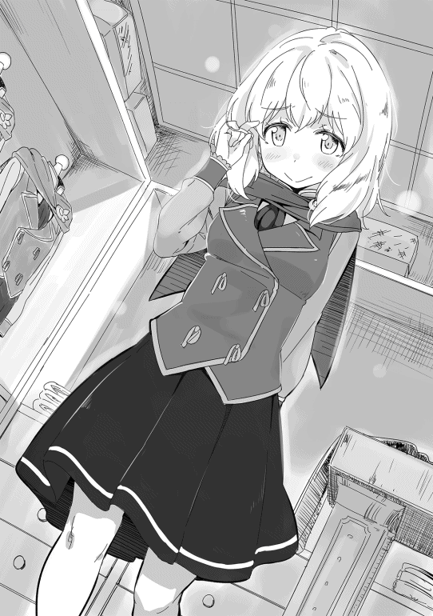
九月一日、晴れ。
今日は入学式だった。ザック様が新入生の代表として挨拶をされた。適当に作ったとおっしゃっていたけど、私には物凄くちゃんとした挨拶に聞こえた。他の人もそうだったみたいで拍手が凄かった。ただ、ザック様が戻ってこられる時に少しだけにやけていたので面倒なことが終わったと本当に思っていたのだと思う。
入学式の後、教室でこれからの学校生活についての説明があった。アリック・ベネットという若い先生が担任なんだけど何だか感じが悪い。もっと感じが悪かったのはクェンティン・ワーグマンという男の子。ザック様と私を指差して「インチキをした」って騒いでいたから。その後もずっと隣の席から睨んでいるし。ザック様はあまり気にされていないけど、何かしてきたら絶対に許さない。ザック様は大切な、本当に大切な仕事がある。それを邪魔するなら私はどんなことをしてでも止めてみせる。
でも、私がこんなことを考えているのをザック様には知られたくない。絶対に嫌われるから。だから、ザック様の前では少しぼんやりとした女の子を演じるつもり。でも、ばれないかな。
九月四日、曇り。
今日は初めて授業を欠席した。リディアさんに授業に出なくてもいいって言われて、学院の規則を調べたら授業に出ないといけないっていう規則がなかったから。ザック様は前の世界の常識と違うといってちょっと驚いていた。
三人で話し合って晴れた日は森に行って、雨が降りそうな日は図書館に行くことにした。
今日は降りそうにないけど、ザック様が図書館がどんなところか見たいとおっしゃられて大図書館に行った。大図書館には本が一杯あってビックリした。
これだけの本があると一生掛かっても読めないなと思っていたら、リディアさんの昔の知り合い、キトリーさんという人にあった。キトリーさんはリディアさんと同じエルフで、学院の教授をしているみたい。本のことも凄く詳しくて私が知りたいことを言ったら、すぐに本を取ってきてくれた。
でも、リディアさんに友達がいたことにビックリした。物凄く失礼なんだけどリディアさんに生まれ故郷とラスモア村以外に友達がいるようには見えなかったから。これは絶対に内緒にしないと。
九月二十二日、雨。
今日は大変なことが起こった。久しぶりに教室に行ったら私とザック様の机と椅子がなくなっていた。ベネット先生は私たちが悪いって言ったけど私たちは何もしていない。ザック様が先生に反論すると、最初はニヤニヤしていたのにやりこまれて今度は怒り出してしまった。私でもこの先生はおかしいと思うほど。後でザック様に聞くと同じように思われたみたい。
私の横でミスター・ワーグマンが笑いを堪えていたので多分彼が犯人だと思う。私はとても腹が立った。でもザック様はもっと別のことを考えておられた。別にティリア魔術学院に拘らなくても私塾でも勉強できるから問題ないっておっしゃられた時には確かにそうだと感心してしまった。
ザック様に「目的と目標と手段を混同してはいけないよ」って言われていたのに、私は学院から追い出されることで全部が駄目になると思い込んでいたから。もっとよく考えないと駄目だなと反省した。
九月二十四日、晴れ。
一昨日の〝事件〟についてザック様が行動を開始された。
昨日、ザック様がキトリーさんとお隣のリトルフさんから情報を集められ、その情報から導き出した考えを聞かせてもらったけど、ビックリして何も言えなかった。だって、魔術師ギルドの権力争いに巻き込まれているかもしれないって言われても何のことだか分かるわけはないから。
でも、ザック様が分かりやすく説明してくれたから何となくだけど分かってきた。ミスター・ワーグマンのお父さんのワーグマン評議員は魔術師ギルドのギルド長である評議会議長になりそうで、それを邪魔しようとしている人たちが私たちを追い出してワーグマン議員の評判を落とそうとしているらしい。私には話が大き過ぎてどうしていいのか全く分からなかった。
私がオロオロしているとザック様が「心配要らないから」と優しくおっしゃってくれた。これで何とかなるかなとちょっと安心した。
ザック様はご自分の考えが合っているのか確かめる必要があるとおっしゃられて、冒険者ギルドに情報収集の依頼を出された。そして、今日サイ・ファーマンという人がやってきた。サイさんはお父さんと同じくらいの歳の人で、冒険者なのかなと思うくらい話しやすいおじさんだった。ザック様と話をするうちにだんだん表情が変わっていくのが印象的だった。少しずつ楽しそうな顔になっていたから。
サイさんが帰った後、ザック様は当分の間、旧市街には入らないとおっしゃった。理由を聞くと「いじめを苦にした十歳の子供は家に引きこもるもんだよ」とおっしゃられた。でも、その間も森には行くとおっしゃるので、「引きこもるんじゃないんですか」と聞いたら、苦笑いを浮かべられた後「田舎の子供は森に引きこもるんだよ」と笑いながらおっしゃられた。
多分、何日も家にいるのがもったいないと思われたのだと思う。ザック様は昔から時間を無駄にするのが嫌いだったから。
九月二十九日、曇り。
サイさんが報告に来た。ザック様は予想通りだったみたいで普通に聞いていたけど、私は驚きの連続だった。リディアさんもビックリした顔をしていたので私と同じだと思う。
ザック様がお考えになった通り、魔術師ギルドの権力争いに巻き込まれたみたいで、ザック様は逆に安心しておられた。確かに私たちが街から追い出されることはなくなったのだけど何となく納得がいかない。リディアさんも同じ気持ちみたい。
ザック様がサイさんに追加の依頼をした。ザック様がベネット先生のところに退学したいって言いに行くから、先生が誰に報告に行くか尾行してほしいという依頼だった。確かに退学したいって言いに行けば先生は喜びそうだけど、本当に誰かのところに行くのかしら。私には分からないけど、ザック様がそうおっしゃるならきっとそうなのだと思う。
ベネット先生のところにはザック様お一人で行くつもりだったみたい。だけど私もついていった。私がザック様の後ろで不安そうな顔をしていた方が信憑性がありそうだし、第一これまでザック様にばかり頼っていたから私も何かしたいと思ったから。一番の理由は一緒に出掛けたかったからなんだけど、これは内緒。でも、リディアさんにはしっかりばれていた。
ベネット先生のところにいった時、物凄く不安そうな顔を作ってみた。自分ではこれが不安そうな顔か分からなかったけど、ザック様が心配されるほどだったからうまく演技ができていたみたい。褒められて凄くうれしかった。
私とザック様を見て、先生は一瞬だけうれしそうな顔をした。その時この先生が何かしていると確信した。でも、私にも分かるほどうれしそうな顔をしたから、ザック様は逆に心配したみたい。こんなに分かりやすい人を使うのかって。
「物凄く分かりやすかったんですけど」と言うと、ザック様は「普通の子供なら分からないか。シャロンだからだな」となぜか納得していた。私は普通の子供じゃないのかしら？
十月一日、晴れ。
今日は収穫祭だった。昨日の前夜祭からいろいろなものを見てビックリし通しだった。本物の地竜がいたし、いろんな芸を見せている人がいて、やっぱり都会のお祭は凄いんだなと思った。
でも、お酒を飲んで酔っ払っている人が多いところは村の祭と一緒だなと思ってしまった。ザック様は屋台の料理を食べながら「早く飲みたいな」とおいしそうにお酒を飲む人たちを見て呟いていた。リディアさんにも聞こえていたようで「だったら早く大きくなりなさい」って笑われていた。私も大人になったらお酒がおいしく感じられるのかしら。ワインもビールもちょっとだけ舐めたことがあるけど、あんまりおいしいとは思えなかった。
十月二日、晴れ。
今日は長い一日だった。
朝一番にサイさんが来て、集めた情報について話していった。ほとんどザック様が考えた通りだったけど、いろんな話が聞けた。〝政治〟ってよく分からないけど、騙し合いみたいであんまり好きじゃないなって思った。ザック様も同じように思っているみたいで、「できれば関わりたくないね」とおっしゃっていた。
サイさんが帰った後、ザック様はこれからどうしたらいいかってリディアさんと私に相談してくれた。私の意見も聞いてくれて凄くうれしかった。一番うれしかったのは昔みたいに頭を撫でてくれたことなんだけど。
小さい頃からザック様に頭を撫でられて褒めてもらえるのが大好き。だから褒めてもらおうと一生懸命勉強したし、みんなの足手纏いにならないように辛くても我慢した。最近、ザック様はあまり頭を撫でてくれなくなった。リディアさんにこっそり聞いてみたら、「小さな子供じゃないからって思っているみたいよ」と教えてくれた。子ども扱いじゃなくなるのはうれしいんだけど、何か微妙な感じ。
午後一番でザック様はワーグマン議員のところに行かれた。でも、帰ってきたのは凄く遅い時間だった。私は寝たいのを我慢して待っていた。
帰ってこられてから話を聞いたんだけど、ザック様はワーグマン議員のことを物凄く警戒していた。理由を尋ねると「あの御仁は本当に切れ者だよ。下手に関わると知らないうちに取り込まれて利用されてしまいそうだ」と答えてくれた。ザック様なら大丈夫だと言ったら「あの人は本物の政治家だよ。それに引き換え、俺はただの一般人だから」とおっしゃられた。〝ただの一般人〟ということはないと思う。絶対に。
警戒されている割にザック様の評価は物凄く高かった。
「政治家を目指すならワーグマン議員を手本にしたらいいんじゃないか。清濁 併せ呑むって感じで理想を持ちながらも現実が見えている。あの人がきちんとした目的を持っている限り、魔術師ギルドは発展すると思うね」とおっしゃられた。ザック様がロックハート家の方々以外でここまで褒めた人は初めてかもしれない。
その話を聞いて決めたことがある。政治家になるつもりなんてないけど、ワーグマン議員が何をするのか知ろうと思った。そうすれば私もザック様に評価してもらえるかもしれない。ううん、ザック様の役に立ちたい。だから、ワーグマン議員のように目的のためならどんなことでもするというやり方を覚えていきたい。でも、これは絶対に秘密。ザック様にもリディアさんにも。
ザック様の役に立ちたいけど、ワーグマン議員みたいに警戒されるのは嫌だから。いつまでも褒めてもらいたいから。
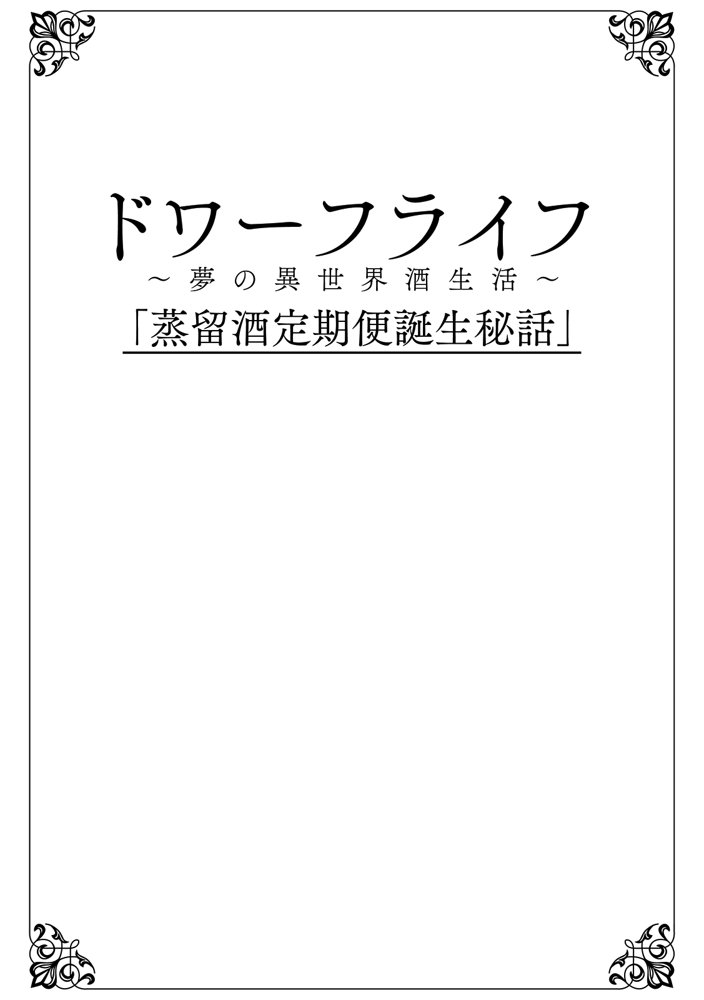
俺の名はネイサン・バーロウ、カウム王国の王都アルスに本拠を置くバーロウ商会の経営者だ。商会の経営者といっても麦酒や葡萄酒 を近隣の村で買い付けて居酒屋などの酒場に卸すだけの小さな店の店主に過ぎない。腸詰 や酢漬けの野菜 なども頼まれて運ぶこともあるが、親父の代から働いてくれているベンという五十がらみのおっさんと二人でやっているだけだ。
アルスで酒絡みの仕事といえば、ドワーフの鍛冶師方のお陰で儲かっていると思われがちだが、俺のところのような零細企業は一流の鍛冶師と取引することなどない。精々若手の鍛冶師たちが行く居酒屋に麦酒や葡萄酒を卸すくらいだから、大した儲けにはなっていない。
それどころか、その少ない儲けですら減り続けている。二年ほど前から話題になっているスコッチのせいで居酒屋に卸す麦酒の単価が下がっているからだ。その〝スコッチ〟という酒だが親方たちだけが飲める高級酒だそうだ。親方たちは入荷の数日前から落ち着かず、仕事にならないと知り合いの若い職人がぼやいていた。
そのスコッチに関する噂で面白い話があった。スコッチの輸送は人気がないらしいのだ。
最初に輸送を手掛けた業者は中堅どころの商会だったが、到着時に大門に親方たちが溢れ、毎回あんなことになるなら心臓に悪いと二度と仕事を請けなかった。その後も毎回輸送業者は替わっている。親方たちに顔が売れるくらいで大した儲けにならない割に、親方たちの圧力 が強過ぎて仕事を請ける気にならないという話だ。
そして次回のスコッチ輸送の業者選びが始まったが、噂を聞いた大手や中堅はどこもしり込みし、ギルド職員が困っているという噂を居酒屋の店員から聞いた。
こいつはチャンスだと思った。三十歳を過ぎたが一向に芽が出ない俺にとって、賭けに出る最後のチャンスといっていい。
そのことをベンに話すと、
「やめたほうがいいですよ。うちじゃ、ろくな護衛は雇えないですし、普通の輸送の料金じゃ、足が出るのは目に見えてますから。地に足を付けた真っ当な商売が一番です」と反対された。
しかし、彼の反対を押し切って勝負に出ることにした。
応札 する業者がいなかったため、落札自体は簡単にできた。一応上限価格だが、俺の計画でいけば完全に足が出る。
まずバーロウ商会には専属の護衛がいない。治安のいい王都近くの村を回るだけであり、魔物に出会うことも盗賊に襲われることもないからだ。しかし、今回は危険なアルス街道だ。積荷を狙ってくる盗賊も多いし、俺の考え通りにやるなら商隊は組めない。つまり単独で危険な街道を進まなければならないのだ。
俺は商会の資産をすべて投げ打つつもりで洗いざらい現金化し、その金を持って傭兵ギルドに向かった。
俺が雇いたい傭兵は少なくとも三級傭兵が指揮を執る三十名程度の傭兵団だ。受付には「これだけでは四級傭兵 の団長をされております、二十名程度の傭兵団で精一杯です。それも戦闘時のボーナスを通常より多めに出すという条件で」と言われてしまう。
「そこを何とかならないか。鍛冶師ギルドの仕事なんだ。頼むよ」と拝んでみるが、「そう言われましても」と全く埒 が明かない。
仕方なく二流どころで手を打とうとしたとき、「鍛冶師ギルドの仕事と聞こえたが」と四十手前のがっしりとした体つきの傭兵に声を掛けられた。
「親方連中が飲むスコッチという酒を運ぶんだが、ちょっと訳ありでね」と言うと、その傭兵は「面白そうだな」と興味を示す。
「フォルティスから来たんだが、急にキャンセルになってな。キャンセル料はもらったが、うちの連中を遊ばせておくのも馬鹿らしい。手頃な仕事がないか探していたんだが、ギルドの仕事なら今後に繋がる。話を聞かせてくれないか」
その傭兵ラッセル・ホルトが言うには傭兵の国フォルティスから請われて来たのだが、その商会が潰れてしまい、行き先がなくなってしまったそうだ。幸い傭兵ギルドが前金を受け取っておりキャンセル料は確保したが、無駄にフォルティスに戻るよりは面白い話があれば乗ろうと考えていたというのだ。
更に詳しく話を聞いていくと、ラッセルは四級の傭兵だが剣術士レベル六十三、つまり三級手前の腕を持っていた。そして彼の傭兵団は三十五人。五級傭兵が主体であり、治癒師や魔術師も擁している優秀な傭兵団だった。
最初は安い依頼料の仕事を受けることに警戒したが、話をしていくうちに彼が勘で仕事を選ぶタイプだということが分かってきた。傭兵に多いタイプだが、自分の生死を賭ける仕事ということで直感に頼って決めているらしい。
意気投合した後、俺は計画を詳しく説明していった。護衛が俺の計画を理解してくれないと失敗に終わってしまうからだ。俺の説明にラッセルは、「この仕事は面白くなりそうだ」と笑い、契約することになった。
鍛冶師方が望むのはスコッチの確実な輸送だ。特に期日については契約期間内であっても遅れることは許されない。
輸送に掛かる日数は天候などの影響で読めないこともあるが、一番の理由は他の商売の交渉時間を取っていることだ。スコッチの輸送で得られる報酬は大したことはない。小型の樽を二十個程度運ぶだけだから、荷馬車は小型のものが四輌 もあれば充分だ。一般的な輸送の単価は一ヶ月、一輌当たり三千クローナ程度だ。これに御者の人件費や馬の維持費が掛かるため、一輌当たりの収入は精々二千クローナにしかならない。
一方で傭兵を雇うために必要な額は宿泊費や馬の維持費などを考えると、五級傭兵で一日当たり最低でも五十クローナだ。五人の傭兵を一ヶ月間雇うだけでも七千五百クローナもの費用が発生する。つまり、四輌の荷馬車で得られる八千に対し、僅か五人の護衛を雇えば、ほぼ同じ費用が掛かるのだ。
更に戦闘が発生すれば安くないボーナスを支払う必要があり、スコッチの輸送だけではほとんど利益は生まれない。そのため、今までの輸送業者は儲けが出る他の商品を運ぶか、護衛の数を減らして商隊に紛れ込むかのいずれかだった。
儲けが出る商品を運ぶとなると、当然交渉が必要になる。仕入値を下げればその分儲けになるから当たり前なのだが、その時間が輸送期間の日数にもろに影響する。
また、商隊に入れば護衛の数を減らすことはできるが、商隊の移動は単独の場合より日数が読めず、契約期間ギリギリに到着することが多くなる。
そこで俺は考えた。
親方たちの支持を得て輸送経費を認めてもらえれば赤字にはならない。元々、ドワーフの親方たちは金持ちだ。そして、最も重要なのはドワーフが酒に対して異常なまでの執着を見せることだ。
つまり初回さえ乗り切り、匠合長以下の親方たちに認めてさえもらえれば、護衛の費用や利益の上乗せは容易に認められるはずだ。
今回ラッセル率いるホルト傭兵団三十五名を三十日契約で雇うことにしている。一人当たり四十クローナ、契約総額は四万二千クローナになる。鍛冶師ギルドとの契約では樽一つ当たり千クローナで契約しているため、収入は二万クローナにしかならない。ここから御者や馬の経費を引くと、二万五千クローナ以上の赤字になる計算だ。これは魔物や盗賊に全く襲われないという条件なので、単独行動ということを考えれば三万クローナ近い赤字になると考えている。
俺は四万五千クローナという大金を掻き集め、今回の契約に漕ぎ着けた。多くの者が俺のことを馬鹿だと笑っていることは知っている。特に商業ギルドに所属している商人たちは収支計算もできない愚か者と笑い話のネタにされているらしい。
今回は三十日で往復する。アルスからスコッチを生産しているラスモア村まで約三百ｋｍ 。往復六百キメルもの距離を僅か三十日で移動するには一日当たり二十キメル進まなければならない。これは山道が多いアルス街道では無謀な速度だ。そのため往路は空の荷馬車でラスモア村に向かい、一日当たりの移動距離を更に伸ばすつもりでいた。
空の荷馬車で行くことも笑い話になるだろう。何の儲けも生まないのだから。
出発の前、契約内容の確認のため鍛冶師ギルドに向かうと、そこにはなんとウルリッヒ・ドレクスラー匠合長が待っていた。
「バーロウだったな」と言って俺の右手を取り、拝むように頭を下げた。
「頼んだぞ。前回の輸送から中々決まらなかったのだ。貴公は儂らの希望じゃ。なんとしてもスコッチを頼む」と万力 のような力で俺の手を握る。手に痛みが走るのだが、それ以上に衝撃を受けていた。鍛冶師ギルドの匠合長といえば国王陛下にすら頭を下げることは稀だ。それが一介の商人に頭を下げたのだ。気付いた時には右手が腫れていたが、その時はそんなことすら気付かないほど焦っていた。
「お任せください！ 期日までに、いえ、期日より早くスコッチをお届けします！」
俺がそういうと満足そうに手を離す。
「儂にできることがあれば、何でも言ってくれ。親方連中に文句を言われてたまらんのじゃ」
そこで一つだけ願い出たことがある。それは荷馬車に鍛冶師ギルドの紋章を描かせてほしいということだった。当初、事務方の職員がギルド所属の荷馬車ではないということで使用を渋ったが、匠合長は「それが必要であり、悪用せんと約束するなら構わん」と認めてくれた。
最初の賭けには成功した。しかし、まだ勝利は掴んでいない。
翌日、真新しいギルドの紋章をつけた四輌の荷馬車でアルスを出発した。
大門ではドレクスラー匠合長以下、百人以上のドワーフの鍛冶師方が見送ってくれた。いずれもベテランの親方たちで、何とあの前匠合長であるゲールノート・グレイヴァー師や神槍のオイゲン・ハウザー師など誰でも知っている有名な鍛冶師方が「頼んだぞ」と大きな声で見送ってくれたのだ。
剛毅な傭兵ラッセルですら、その光景に目を丸くし、「大丈夫なのか」と声を掛けてきたほどだ。
その後、俺たちは順調にアルス街道を北上していった。
往路で二回魔物に襲われているが、ホルト傭兵団が難なく撃退している。そして、復路に入り遂に盗賊が現れた。
僅か四輌の荷馬車に三十五名の傭兵が護衛についていることに気付き、復路を狙っていたらしい。ラスモア村を出て五日目、険しい山道で待ち伏せていたのだ。
「荷物を置いていけば、命だけは助けてやろう」
盗賊の頭目がそう叫ぶと、森の中から五十人くらいの盗賊がガサッという音と共に現れた。多くの盗賊は手に弓を持ち、いつでも放てるようにしている。
完全な不意討ちだった。ラッセルは「どうする」と目で訴えてくるが、俺に逃げる気はなかった。
「この馬車は鍛冶師ギルドの酒を運んでいるだけだ！ ドワーフの鍛冶師方を敵に回したくなければ、そのまま引いてくれ！」
俺はなけなしの勇気を振り絞り、荷台の防水布をはぎ取る。そこには小型の樽があるだけで金目のものはまったくない。
「その樽の中にお宝を隠しているんじゃないのか？ 開けてみろ！」という頭目に対し、
「一樽でも失えば鍛冶師方に申し訳が立たない！ 全ドワーフを敵に回す気がないなら引いてくれ！」と言って拒否した。
それがきっかけとなった。
「そんな戯言で騙されるか！ やっちまえ！」と頭目は叫ぶと、攻撃の合図のように剣を振り下ろす。
それからのことはよく覚えていない。ラッセルが俺を荷馬車の下に放り込んだためだが、そこら中から聞こえる断末魔の声に震えながら隠れることしかできなかったからだ。
何分経ったか分からないが、返り血を浴びたラッセルが「もういいぞ」と声を掛けてくれた。
「しかし、お前さん、案外肝が据わっているな」と笑うが、「それじゃ、命がいくらあっても足りんぞ」と忠告もしてくれた。
結局、護衛にケガ人は出たものの、無事に撃退できたらしい。盗賊がホルト傭兵団の腕を見誤り、完全な奇襲を掛けなかったことと、荷台に昇った盗賊が樽を叩いて本当に酒しか入っていないことが分かり、犠牲が大きくなる前に撤退したことが理由だった。
逃げ遅れた数人の盗賊が捕らえられ、頭目の名が判明した。ツェザーリというカウム王国の元兵士でアルス街道を拠点にしているらしい。
荷馬車には矢が刺さり、剣で傷を付けられたものの走行に支障はなかった。
俺は賭けに勝った。
当初の予定である三十日より二日も前にアルスに到着したのだ。
鍛冶師たちを驚かせるつもりでギルドには伝えていなかったが、なぜか大門の前に二百人以上のドワーフの鍛冶師方が集まっていた。
俺たちが門をくぐると、鍛冶師方からどよめきが起きた。
ドレクスラー匠合長が現れたので慌てて荷馬車から降りると、「よくやってくれた。二日も前に届けてくれたのはお前が初めてじゃ！」と行くときと同じように俺の右手を握った。
そして荷馬車の傷を見つけると、「襲われたのか」としわがれた声を絞り出す。鍛冶師方も傷に気づいたのか、「誰に襲われたんじゃ！」、「儂らの酒に手を出そうとした奴に報復じゃ！」とボルテージが上がっていく。
「ホルト団長たちが守りきってくれました」と言うと匠合長は俺の手を離し、ラッセルに近づいていった。「よくぞ守ってくれた。本当によく守ってくれた」と涙ぐみながら抱き締める。それはまるで我が子の命を救ってくれた英雄に対するかのようだった。
大門の前では迷惑になると思い、ギルド総本部に向かってはと言ってみたが、鍛冶師方は襲ってきた盗賊に対する怒りのため、俺の話を聞こうともしない。
「鍛冶師ギルドが賞金を懸ける！ ツェザーリとかいう盗賊を捕まえた者にいくら出せばいい！」
匠合長がそう叫ぶと、「百万じゃ！」、「いや、二百万でも構わん！」という声が次々と上がる。その様子に街の人々はあっけに取られているが、鍛冶師方のボルテージは上がる一方で、最後には「よかろう。一千万じゃ！ 儂らのスコッチに手を出した者は今後もそれだけの賞金を懸ける。それでよいな！」と匠合長が締め括った。
一千万クローナという国家予算並みの金額にラッセルがこめかみに手をやり、首を振っていた。
「俺たちが奴を殺していたら、それだけもらえたのか？ 惜しいことをしたな」と力なく笑っているが、金のことよりドワーフたちの執念に恐ろしさを感じていたのかもしれない。
その後、一千万クローナは高過ぎるという話が王国政府から出たらしい。この金額の賞金が懸けられたら、王国内にいるほとんどの傭兵や冒険者が盗賊狩りに出払ってしまい、治安維持が困難になるからだ。しかし、鍛冶師ギルドは頑として減額に応じなかった。
「儂らのスコッチに手を出せば、盗賊だろうが国だろうが叩き潰す。その覚悟がこの額じゃ」
匠合長がそう応じたと噂で聞いた。
結局、盗賊の頭目ツェザーリは一年以上経っても見付からなかった。手下たちと共に魔族の国 に逃げたというのが専らの噂だが、真相は分かっていない。
ちなみにカウム王国ではツェザーリという名は激減したらしい。
無事にスコッチをギルド総本部に送り届けた。
安堵の息を吐き出すが、これで終わったわけではない。スコッチが到着した日には宴会を行うのが総本部の恒例行事だが、今回は予定より早く着いたため、職員たちが慌てて準備を始めている。そのため三十分ほどドレクスラー匠合長に時間をもらうことができた。
俺は単刀直入に「匠合長にお願いがあります」と言って、俺の考えを伝えていく。
「今回は儲け度外視で輸送を請け負いました。次回以降のスコッチの輸送も私どもバーロウ商会に任せていただけるなら、今回同様スコッチの輸送だけに専念いたします。当然、コストは掛かりますが、確実に期日には到着できますし、今回のようにスコッチは守りきってみせます。我がバーロウ商会を鍛冶師ギルド総本部専属の輸送業者に指定していただけないでしょうか」
匠合長は俺の話を最後まで黙って聞くと、「儂に異存はない」と断言した。
「うちの連中も誰一人反対せんじゃろうな。命懸けでスコッチを守った男の頼みじゃからな」
俺はこれで本当に賭けに勝てたと心の中で喝采を上げていた。しかし、「一つだけ聞かせてくれんか」と尋ねてきた。
「儂らがなぜスコッチに拘るのか、それについてどう思っておる？」
想定外の質問に俺は戸惑った。
これまでにない強い酒であるということは間違いないが、今の匠合長の言い方から察すると別のことのような気もする。俺は必死にギルド職員から得た情報を思い出そうとした。
そして一つのエピソードを思い出した。そう、スコッチという名前の話だ。
「私は職人ではありません。ですので、間違っているかもしれません」と前置きした上で、
「恐らくスコッチという名に理由があるのでは。私の記憶ではスコッチという名はスコット殿という酒造りの職人の名から付けられたものだったはずです。それが理由だと考えます」
本当にそうなのか自信はない。もし違っていれば、折角もらえそうになっている専属業者の話もご破算になる。
僅かな沈黙が俺と匠合長の間に流れた。
「そうじゃ。儂らは職人の名が付けられた酒に惚れておる。そう、惚れておるんじゃ！ 今までの業者は何も分かっておらん！ 儂らは吝嗇 ではない。必要な金なら、いくらでも出してやる。だが、それは儂らの思いを正しく理解しておる者だけにじゃ」
今までは試されていたらしい。鍛冶師ギルド総本部とのコネクションを求める商会、業者は多い。安く請け負って恩を売ろうとする奴が多かったのだろう。そうなれば自分たちの愛する酒、スコッチが軽く扱われてしまう。それがドワーフたちには許せなかった。
そして、俺はその試験に合格した。
「お前は儂らのことを分かっておる。よし！ 今からの宴会に参加するんじゃ！ その場でお前の言う条件を認めさせる！」と興奮気味に話すと、その太い腕で俺を掴み、宴会場に引っ張っていく。
その後のことはよく覚えていない。
正確にいうと今回掛かった経費は全て認めてもらえ、全額後払いしてもらえることになったこと、ホルト傭兵団との専属契約についても先方の条件次第で認めてもらえることなどは覚えている。
しかし、その後は麦酒や葡萄酒をしこたま飲まされた挙句、スコッチも飲まされたらしい。職員が気づいてくれなければ死んでいたかもしれない。実際、三日ほど吐き気が止まらず、治癒師の治療を受けたほどだ。
ドワーフを理解することは難しい。更に難しいのはドワーフと酒を酌み交わすことだ。
理解できれば付き合うことはできる。だが、真の友になるには酒を酌み交わせなくてはならない。中途半端に付き合うことは命の危険を伴う。
これが今回俺の得た教訓だ。
もし、彼らと同等に酒を愛し、共に飲め明かすことができる人間がいたら、その人物こそ、真にドワーフを理解している者だ。そんな人間に出会うことは絶対にないと思っているが、もし出会えたら俺は心から敬意を払うだろう。
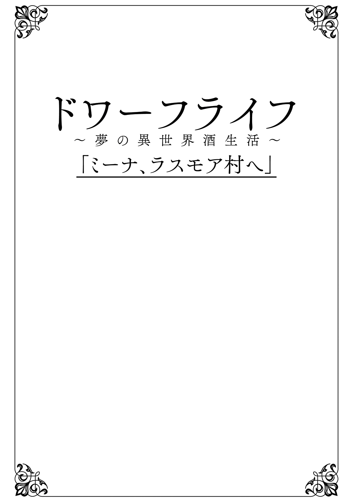
カウム王国の王都アルス。アルスはトリア大陸屈指の城塞都市であり、その一画に鍛冶師ギルド総本部がある。
鍛冶師ギルドはトリア大陸にいる鍛冶師たちの互助組織であるが、危険なこの世界においては命を守る武具の生産に関わっており、兵士や冒険者の生死に直接的な影響を及ぼす組織である。このため、ギルドの頂点に立つ匠合長の権力は一国の王に匹敵すると言われ、彼の意向は世界最強の国家カエルム帝国の皇帝ですら無視し得ない。
その鍛冶師ギルド匠合長ウルリッヒ・ドレクスラーは執務室で六人の鍛冶師たちと真剣な協議を行っていた。
その場にいる鍛冶師は伝説の防具職人ゲールノート・グレイヴァー、神槍の作り手オイゲン・ハウザー、金属と革を使わせたら右に出るものはいないと言われる防具職人ゲオルグ・シュトック、片手剣の名工ヨハン・ヴィルト、武器・防具を問わない天才ウード・レーヴェンガルト、魔法金属の特性を知りぬいた職人リュック・ブロイッヒという、まさに世界最高峰の職人たちだった。
その名工たちが真剣な討議を行う内容といえば一つしかない。そうドワーフたちの命の糧〝酒〟に関することだけだ。そして、今回の議題はスコッチの故郷ラスモア村に関することだった。
「......今のところスコッチの出荷は順調じゃ。しかし、懸念がないこともない」
ウルリッヒの言葉に全員が頷く。
「スコッチを作る蒸留器 はベルトラムしか作れぬ。しかしじゃ、ベルトラムには弟子がおらん。もし、ベルトラムに何かあれば、蒸留器の製造に支障が出る......」
ウルリッヒがそういうと、ゲールノートが「少なくとも助手は必要じゃろう。ラスモア村の自警団の仕事で手一杯と言っておるからな」と言って同意した。
「弟子にしろ、助手にしろ、奴の意向を無視して送り付けるわけにはいかんじゃろう。相性というやつがあるからな」
ゲオルグが常識的な発言をする。
「親代わりのウルリッヒの推薦があれば奴も嫌とは言わんじゃろう」とオイゲンが言うと、ウードが「奴にとっては初めての弟子になる。今まで一人で気楽にやってきた奴だ。嫌がるじゃろうな」と反対する。
ヨハンが全員の顔を見ながら「ベルトラムがへそを曲げれば蒸留器の製造に、ひいては蒸留酒の生産に影響が出るんじゃ。奴は狭量ではないが慎重にいくべきじゃ」とウードに同調する。
「で、どうするんじゃ？ 奴の意向を確認するとしても、奴をここに呼ぶわけにはいかん。こちらから見繕って行かせるわけにもいかんのじゃ。ウルリッヒ、何かよい知恵はないか」
リュックがそういうと全員の視線がウルリッヒに集中する。
「手がないわけでもない」とウルリッヒがいうと、「何じゃ、考えがあるのか」とリュックがいい、「早く言わんか」とゲオルグが急かす。
「あるにはあるんじゃが......まあよい。とりあえず儂の話を聞いてくれ」と言って話を始める。
「ベルトラムは既に六十を越えておるが、まだ独 り身 じゃ。そこで奴の嫁候補をラスモア村に行かせ、その娘に手伝わせるんじゃ」
六人のドワーフが「なるほどの。それは良い案じゃ」と頷くが、ウルリッヒは小さく頭を振り、その太い指を二本立てる。
「問題が二つある。一つ目は誰を行かせるかということじゃ。助手もさせるんじゃ、鍛冶の腕がなければ話にならん。しかし、それだけでは駄目じゃ。奴が気にいるような別嬪 でなければならん。儂には誰が良いか見当もつかん」
「そんなことか。儂に心当たりがあるぞ」とゲールノートが鼻息荒く、意見を出す。
オイゲンが「お前に若い女の知り合いなんぞおるのか？ 信じられん」と首を横に振り、ヨハンも「ゲールノートが女を紹介するのか......」と絶句している。
ゲールノートは心外だという顔をして、「儂が若い女と知り合いで何がおかしい」とぼそりと呟くが、「お前らも知っておる者じゃ」とニヤリと笑う。
ウルリッヒたちは首を傾げて考えるが、誰も思いつかない。
「儂の孫、ヴィルヘルミーナじゃ」とゲールノートがいうと、「ミーナか」と全員が納得する。
「ミーナは結婚したがらんとぼやいておったのではないのか」とウードが首を傾げる。
「確かに結婚の話をすると煙たがる」とゲールノートは言うが同時にニヤリと笑う。
「行き先がどこかよく考えてみよ」
「なるほどのぉ。確かにラスモア村行きを断るドワーフはおらん」と全員が納得する。
「一つ目の問題は解決したぞ。で、二つ目は何じゃ」とゲールノートが尋ねる。
「そのラスモア村行きという話じゃ」とウルリッヒがぼそりと呟く。
「どういうことじゃ？」
「つまりじゃ。ミーナにせよ、誰にせよ、ラスモア村へ行けるとなれば目の色が変わる。もし、この話が漏れてみよ。アルス中の若いドワーフの女は皆ラスモア村へ行きたがるぞ。そうなれば大騒動になることは目に見えておる」
ゲールノートたちの頭にアルスから若いドワーフの女性が消えるイメージが浮かぶ。
「それはまずいの......この話は極秘裏に進めねばならん。ミーナへどう言うかが一番の問題じゃな」とゲールノートが呟く。
「その通りじゃ。ミーナが舞い上がれば必ずばれる。そうならんようにせねばならん。ゲールノート、お前が今回の肝じゃ。しっかりと言い含めておけ」
ウルリッヒの言葉にゲールノートは頷くものの、「そういったことは苦手なんじゃが」と頭を抱えた。
ウェーブの掛かった豊かなブラウンの髪と大きな瞳が特徴的なドワーフの女鍛冶師、ミーナことヴィルヘルミーナにゲールノートから話があるという連絡が入った。
結婚の話だと直感するが、師匠に当たる祖父を無視するわけにはいかない。仕事を終えた夕方、普段なら行きつけの居酒屋へ行くのだが、仕方なくゲールノートの工房に向かった。
「今日は何の話かしら？ まだ、一口も飲んでいないのだけど」
ゲールノートの工房に着くと、ミーナは開口一番、不機嫌そうな口調でそう尋ねた。
ゲールノートは内心やれやれと思うが、いつもより声音を柔らかくするよう努力しながら、「まずはこれを飲まんか？」と言って、陶器製の壷を取り出す。
本能的に酒だと気づいたミーナは祖父の前の椅子に座り、「お酒まで用意して話は何？」と尋ねるものの、目の前の壷に視線は釘付けになっている。
「とりあえず、〝スコッチ〟でも飲んでゆっくり話をせんか」とゲールノートが言うと、ミーナの目が一気に輝き、「そ、それは〝スコッチ〟なの！」と叫びながら立ち上がった。
「そうじゃ。これは儂の取り分、貴重 な取り分から分けたものじゃ。かわいい孫のために持ってきたんじゃ」
ゲールノートは〝貴重〟というところを強調したが、ミーナは彼の言葉を聞いていなかった。いつの間に出したのか、その手にはしっかりとジョッキが握られている。
ゲールノートはそのジョッキにスコッチを注いでいく。なぜか手が震え、涙目になっているが、それでも何とかジョッキに半分ほどスコッチを注いだ。
ミーナは目で〝なぜ半分なのか〟と訴えるが、ゲールノートはその視線を無視して自らのジョッキに残りのスコッチを注いでいく。
「まずは乾杯じゃ。美味い酒に乾杯」と言ってジョッキを掲げる。ミーナも「美味しいお酒に乾杯」と同じようにジョッキを掲げ、ゆっくりと口をつけていく。
口をつけた瞬間、「あぁ！」という艶 っぽい声を上げ、蕩 けるような恍惚とした表情を浮かべた。
ゲールノートの方はジョッキに口を付けると、グビグビと飲んでいく。しかし、僅か 半分しかないため、ジョッキはあっという間に空になる。
「プハァ！」と満足げに息を吐き出すと、僅かに寂しそうな視線で空になったジョッキを見つめた。しかし、すぐに目的を思い出し、視線をミーナに向ける。
「どうじゃ、美味い酒じゃろう」
ミーナは彼の声が耳に入っていないのか、表情を蕩けさせたままジョッキを握っている。ゲールノートも彼女の気持ちがよく分かるため、笑みを浮かべるだけで何も言わず、彼女が現実世界に戻ってくるのを待った。
ミーナはゆっくり とジョッキ半分、約三百ｃｃのスコッチを飲み干した。その時間は五分ほど。ドワーフにしては驚くほど時間を掛けて酒を楽しんでいた。
「本当に美味しいわ......ありがとう、おじいちゃん」と満面の笑みで礼を言うが、すぐに表情を硬くし鋭い視線を送る。
「何があるのかしら？ スコッチを人に分け与えるなんて普通では考えられないわ」
ミーナの問いにゲールノートの表情が曇る。
ゲールノートは「そ、それはじゃな......」と口篭るが、すぐに「ええい！ 面倒じゃ」と言ってミーナの目を真正面から見る。
「お前の結婚の話じゃ」と言うと、「やっぱり」と彼女が首を振る。
「おかしいと思ったわ。親方たちが誰にも譲らないスコッチをくれたんだもの、そんな話だと思った。先に言っておくけど、いくらスコッチを飲ませてもらっても、今は結婚する気なんかないわ」
完全な拒絶の言葉にゲールノートは僅かにたじろぐが、
「まあ、話だけでも聞け。お前にとってもよい話じゃ」
ミーナが反論しようとするが、それに構わず一言、「スコッチがいつでも飲めるところじゃ」と告げた。ゲールノートの言葉にミーナも反論の言葉を飲み込んでしまう。
「スコッチの産地は知っておるな」というと、もちろんという感じで大きく頷く。
「ラスモア村の鍛冶師、ベルトラムに弟子を送ろうと考えておる。しかしじゃ、奴は弟子を取ったことがない......」
ウルリッヒが考えた話をそのままミーナに伝えていく。
「別に奴を気に入らねば結婚せんでもいい。奴の手伝いだけでもよいからラスモア村に行ってほしいんじゃ。どうじゃ？」
ゲールノートが問い掛けるが、ミーナは心ここにあらずという感じで「私がラスモア村に......」と呟いている。
「断ってもよいんじゃぞ。嫁候補として行くというのが嫌ならばな。他の娘に声を......」
ミーナは彼の言葉を遮り、「行きます！」と叫ぶ。
「私が行きます。行かせてください。ベルトラムさんがどう思われるか分かりませんけど、一度会って話をしてみます。ですから......」
必死の表情で訴える孫にゲールノートは「分かった、分かった」と言って苦笑いを浮かべる。しかし、すぐに真剣な表情になり、
「このことは誰に言ってはならん。儂以外には家族であってもな。理由は分かるな」
彼女は「はい」と大きく頷く。
そして、「ベルトラムさんについて教えてほしいわ」と言って話題を変えた。
話を終え、ミーナはゲールノートの工房を後にした。その道すがらラスモア村行きのことを考えていた。
（あのお酒が飲める生活......でもベルトラムさんって匠合長の甥御 さんだし、気難しいかもしれないって......二年間か、どんな人なんだろう......）
ゲールノートから聞かされた話の中に、結婚を前提で弟子入りするが、双方が前向きでなければ二年間でアルスに帰ることが条件になっていた。もちろん、二年間で蒸留器の製造を覚えることが条件だが、その点は彼女もゲールノートも心配していなかった。
（いい人ならいいな。会うのが楽しみ......）
その日から彼女は夢見心地という感じで仕事が手につかない。心配した彼女の工房の親方がゲールノートに相談するが、彼は「心配せんでもいい」というだけだった。
彼女の女友達であり、同じ工房で働くマルガも異変に気付いていた。
「どうしたの？ 何かあったの」と聞くが、ミーナは「ううん、何でもないわ。うふふ」と笑うだけで答えない。
マルガはその様子に何かあると感じ、居酒屋で女子会を開くことにした。
五人のドワーフの独身女性が行きつけの居酒屋に集合した。彼女たちは二十代後半から三十代半ばで全員が鍛冶師だった。最年長のヒルダが「さて、今日はミーナが何を隠しているのか、白状させるわよ」といって開会を宣言する。
「何も隠してなんか」と抗議するが、すぐに「あなただけよ、ジョッキの準備ができていないのは」と赤毛のノーラに指摘される。いつもなら居酒屋についたらすぐにジョッキを出して酒を注いでもらうのだが、舞い上がっているミーナは僅かに遅れていた。
「ドワーフがお酒を忘れるなんて......」と最年少のレギーネが絶句する。
「これで分かったわね。あなたが何に舞い上がっているかをきっちりと話してもらうわよ」
ヒルダの言葉にミーナの顔が強張る。
「まあいいわ、まずは飲みましょ。それからよ、お話 は」と言って店員からビールの入ったジョッキを受け取る。
全員がジョッキを受け取ると一気にビールを呷る。店員はドワーフの行動に慣れており、彼女たちが二杯目を頼むのを待ち受ける。一パイントのビールを僅か五秒で飲みきると、「「プハァ！」」という声を上げ、「「おかわり！」」と声を合わせて空のジョッキを差し出す。
その後はいつものペースでビールを飲み、少し飽きたところでワインに変えたり、エールにしたりしながら酒を呷っていく。
一人当たり十杯ほど飲んだところで、彼女たちもほろ酔い加減になる。
「で、何があったのよ。話しちゃいなさい」とヒルダが絡むと、ミーナは「な、何もないわよ」と必死に抵抗する。
一時間ほどのらりくらりとはぐらかしていたが、酔いが回ってきたところで口が滑ってしまった。
「実はね。私、結婚するかもしれないの」
その言葉に独身女性たちの目が光る。
「どういうこと？ あなたが一番結婚を嫌がっていたじゃない」
仲がいいマルガがそう聞くと、ミーナは「えへへ」とだらしない顔になる。
「どんないい男を捕まえたのよ。どこの誰よ！」とヒルダがミーナの肩を掴んで問い詰める。あまりの迫力に「この街の人じゃないわ」と口を滑らせてしまう。
その後、四人からの厳しい追及を受け、「ラスモア村のベルトラムさんよ」と白状してしまった。
その瞬間、四人が一斉に立ち上がり、「「どういうことなの！」」と叫び声を上げる。その声は居酒屋の客たちが全員沈黙したほどの叫びだった。
四人は客たちの注目を浴びていることに気づかず、「ベルトラムさんですって！」と更にヒートアップしていく。
ミーナはこの状況がまずいと思い、「落ち着いて、みんなが見ているから」と言って四人に注意を促した。そこでようやく自分たちが注目の的になっていることに四人は気づく。慌てて座りなおすが、それでも追及の手は緩めない。
諦めたミーナは四人にゲールノートとの話をした。
「おじいちゃんから話があってね......来月にはラスモア村に行くことになっているの」
その後の女子会は大荒れだった。全員が「私だって......」と思っており、いつもの倍以上、一人当たり二十リットル以上のビールを空けていた。
翌日、その話はほとんどの鍛冶師たちが知ることになる。
男の鍛冶師たちは自分たちが行くわけにはいかないため、「仕方がない」と諦めるが、女性たちの目の色が明らかに変わっていた。
その日の夕方、匠合長室に数十人の女鍛冶師が集まっていた。当然、部屋には入りきらず廊下に溢れており、職員たちは何事が起こったのかと不安そうに見ていたが、情報通の職員がミーナの話を伝えたことから全員が諦め顔になる。男であれ女であれ、ドワーフの酒絡みの話はややこしいと諦めたのだ。
女性鍛冶師の代表であり、三百人の親方の一人でもあるテクラがウルリッヒの前に立った。彼女は七十歳になる女性だが、人間より長命のドワーフであるため、人間なら三十代後半にしか見えない。更に適齢期を多少過ぎているとはいえ、結婚してもおかしくない年齢だ。ただ彼女の胴回りはウルリッヒとさして変わらず、その堂々たる態度も相まって彼女を女性として見る親方は皆無だった。
「どういうことか、説明してもらえないかね」とテクラが凄むと、ウルリッヒの背中に冷いものが流れる。
「どうもこうもない。儂の甥とゲールノートの孫娘が見合いをするというだけじゃ。何もおかしなことなどなかろう」
必死に冷静を装って答えるが、テクラは「そいつは不公平だろう」と更に凄む。
「聞いた話じゃ、ベルトラムには何も言っていないんだろう？ なら、あたしらにもチャンスはあるはずじゃないか」
ウルリッヒは内心、お前にチャンスはないと考えていたが、
「別段、ミーナで決まったわけではない。ベルトラムが断ることもあるのじゃからな」と反論する。
「なら、私らが行って決めてもらったら早いじゃないか。なあ、みんな！」
そう言うと数十人の女ドワーフたちから「そうよ！」という声が上がる。
「まあ、待て。落ち着け」とウルリッヒは叫ぶ。
「一度に行けば奴が尻込みするかもしれん。第一、お前たちはベルトラムのことをほとんど知らんはずじゃ。なぜ、そんなに行きたがる！」
「決まっている！ スコッチが飲み放題なんだよ。それを指を咥えてみているドワーフなど、ドワーフじゃない！」とテクラが叫び返す。
「お前たちはベルトラムの妻になりたいわけじゃないんだな」という言葉にテクラがしまったという顔をする。
「今回は甥であるベルトラムの嫁探しじゃ。酒に目が眩 むような女を奴のところに行かせるわけにはいかん！」
ウルリッヒの言葉に「あたしは違うよ」と答える者もいたが、「ならば、ミーナが帰ってきてからでもよかろう」と言われ沈黙した。
まだ諦められないのか、テクラが「別に嫁は一人と決まったわけじゃないんだろ」と言っているが、ウルリッヒは「それは奴が決めることだ。まずは女を磨いてから出直してこい！」と一蹴した。
ミーナはその話を知り、呆然とする。自分が酒に目が眩んでラスモア村行きを決めたからだ。
（そうよね。こんな気持ちで行ったら、ベルトラムさんに失礼だわ。どうしたらいいのかしら......）
十一月に入り、ミーナはラスモア村に旅立った。旅立ちに際し、ウルリッヒたちからは激励の言葉を受けたが、若い女性たちからは嫉妬と羨望が混じった視線で見送られた。
蒸留酒定期便 とともにアルス街道を北上し、無事にラスモア村に到着した。
まず領主であるマサイアス・ロックハートに挨拶に行き、ゲールノートからの手紙を渡した。前匠合長であり世界的に有名な鍛冶師からの手紙に驚くものの、マサイアスは友人であるベルトラムの見合いと知り、助力すると伝える。
「彼には世話になりっぱなしだ。手伝えることがあれば、いつでも言ってきなさい」
その言葉にミーナは礼を言うと「では、二つお願いがあります」と言った。マサイアスが何かと尋ねると、
「ベルトラムさんには私がお嫁さん候補としてきたことを内緒にしてほしいんです。ただの弟子が来たということにしたいんです」
「それは構わんが、なぜかな」とマサイアスが理由を尋ねる。
「何となくですけど、身構えられる気がして......それに知らずに一緒になれた方がいいですから」
はにかんだような笑みにマサイアスは「確かにな」と大きく頷いた。
「もうひとつですけど、ベルトラムさんがいいと言うまで私にはスコッチを出さないでください」
その言葉にマサイアスは「も、もう一度言ってくれ」と聞き直した。ドワーフがスコッチを飲まないと言ったことが信じられなかったのだ。ミーナはもう一度同じ言葉を繰り返した。
「ベルトラムさんが、いいえ、師匠がいいと言うまで私にスコッチを出さないでください。出されると飲みたくなりますから」
「アルスのしきたりのことかな？ 親方以外はスコッチを飲めないという」
ミーナは「いいえ」と言って首を振る。
「鍛冶師としての、そして女としての意地です。スコッチのためにここに来たんじゃないというけじめです」
彼女はスコッチに釣られてラスモア村行きに同意したことを後悔していた。それはベルトラムに対して不誠実なことであり、鍛冶師として来た自分に対するけじめであった。
マサイアスはミーナという女性が来てくれてよかったと思ったが、それは口に出さず協力することだけを伝えた。
ミーナは館ヶ丘を後にし、東ヶ丘にあるベルトラムの工房に向かった。
案内役を買って出たのは蒸留酒の貯蔵庫にいたスコットだった。スコットに会った瞬間、ミーナは感激のあまり泣きそうになったが、不審がられないよう表情を引き締めた。
工房に着くとスコットがベルトラムを呼びにいく。ドキドキしながら入口で待っていると、ドワーフらしい立派な髭と太い腕、革製の前掛けをしたベルトラムが現れた。
スコットがミーナを紹介するものの、ベルトラムは〝何だ、こいつは〟という表情を崩さなかった。
「ヴィルヘルミーナ・グレイヴァーです。ミーナと呼んでください」と言って頭を下げ、ウルリッヒに託された手紙を渡す。
手紙を読み終わった後、「弟子などいらんのだが、叔父貴 の紹介じゃ、仕方ない」と言い、「奥に空いている部屋がある。そこを使え。分かったな、ミーナ」と言って、工房に戻っていった。
ミーナは落胆の表情を隠せなかった。それを見たスコットが、「ベルトラムさんも気に入られたようですね」と笑う。
「どういうことですか？ 全然駄目でしたよ」と力なく零すが、スコットは笑みを浮かべたまま理由を説明した。
「ベルトラムさんがきちんと名前で呼んでくれたんですよ。本当に気に入らない相手なら、〝お前〟とか、〝おい〟としか呼びません。うちの職人たちも名前で呼んでもらえるのは数人しかいないんですから」
スコットの言葉に安堵するものの、これから知らない土地で初めて会った男と二人だけで生活することに不安を感じていた。
知らない土地という不安はすぐに解消された。近所の人たちは優しく、更にロックハート家の関係者が頻繁に顔を出したためで、彼らが何気なくフォローしてくれたので村にはすぐに馴染めた。
しかし、肝心のベルトラムとは中々打ち解けられなかった。元々彼は一人暮らしが長く、工房では無口だ。仕事の手伝いもほとんどさせてもらえず、ミーナは徐々に自信を失っていく。
（私は全然役に立っていない......どうしたらいいのかしら......）
そんな状態が十日ほど続いた。十二月に入る頃、蒸留器の大型化の話が持ち上がった。
「ミーナ、スコットの蒸留所に行くぞ」と突然言われ慌てるが、当のベルトラムは後ろを振り返ることなく、工房を出て行く。
慌てて追いかけると「蒸留器を作り直す。お前にも手伝ってもらうぞ」とぼそりと言った。
その意外な言葉に「えっ！」と声を上げ、無意識のうちに「私が手伝ってもいいんですか？」と聞いていた。
「まあ、剣を打つ腕はまだまだだが、筋は悪くない。今から仕込めば来年の夏には一丁前の腕にはなっているだろう」
ミーナは自分に仕事を手伝わせるつもりがないため、農具や鍋の修理だけをさせているのだと思っていた。しかしベルトラムは彼女の腕を見極めていたのだ。
「ありがとうございます......」と言いながら、知らず知らずのうちに涙が零れていた。ベルトラムは後ろを振り返ることなく、「これからが大変なんだぞ。銅を叩いて蒸留器を作るのは生半可なことじゃできない。泣いている暇なんぞない」と言って前を歩いていく。
そして、歩きながら「今日の夜はスコッチを飲め」と言った。
ミーナは「いいんですか？」と戸惑いを隠せない。ベルトラムは立ち止まり、そして振り返った。
「スコッチの味を知らん奴に蒸留器が作れるか。みっちり仕込んでやるからな」
ミーナは「はい！ 師匠！」と元気よく答えた。
その頃、アルスでは女の鍛冶師たちの間で化粧が流行っていた。
それもべっとりと頬紅を塗り、濃い青色のアイラインを引いた派手な化粧だった。特に年齢が高くなるほど化粧は濃くなる傾向にあり、ギルドの集会でテクラを見たウルリッヒはそのケバケバしさに吐き気にも似た不快感が湧き上がった。
「どうしたんじゃ、その顔は」と呟くように言うと、テクラはどこからともなく取り出した扇子 を口元に当て、「女としての魅力ってのを磨いているのよ。娼婦たちに化粧を教えてもらったの」と今までは使わなかった女言葉を使い、更に〝しな〟を作りながら擦り寄ってくる。
ウルリッヒは吐き気を催しながらも、「そ、そうか」と言って離れていく。そして自分の席が彼女の席から遠いことに安堵すると、どうしてこうなったと自問する。
（ああ、儂が女を磨いてから出直してこいと言ったからじゃ......やはり、酒が絡むとドワーフは何をするか分からん......いかん、吐き気がしてきた......）
その日のギルド職員の日誌には次のように記されていた。
『......本日の総会において決定した事項は以下の通り......なお、総会後の宴会において、過去に例を見ないほど酒とつまみの消費量が少なかった。また、匠合長を含め、多くの鍛冶師方が体調不良を訴えている。事務局は伝染病の可能性があるとして治癒師の手配を行ったが、治癒師からは肉体的には異常は見られず、精神的なものではないかとの所見が出された。事務局が調査のため聞き取りを行ったが、鍛冶師方は原因について一切口にされなかった......』
あとがき
本書を手に取っていただき、ありがとうございます。
ドリーム・ライフとして三巻目、Ｔｒｉｎｉｔａｓシリーズとして五巻目を出版できましたことは、応援して下さる読者の皆様のお陰と感謝しております。
第三巻は〝小説家になろう〟では鬼門と言われる〝学院編〟です。理由は学院編に入ると〝エタる〟、つまり〝更新が止まる〟というジンクスがあるそうで、学院編に入った時に感想欄でよく言われました。
本作品では学院編と言いつつも甘酸っぱい同級生との恋愛など全くなく、渦巻く陰謀と対決しているだけですので、純粋な学院編とは言えないかもしれません。書籍版の方でジンクスが当たる可能性はありますが、ＷＥＢ版では問題なく更新していますので、ご安心を（笑）。
今回、閑話が三話、特別読み切りが二話とオムニバスというか短編集のような構成になっています。閑話のうち「シャロンの日記」は外伝として書きたいと以前から思っていたものです。ＷＥＢ版をお読みの方ならお気づきかもしれませんが、〝詳細な記録を残すことで有名なシャロン・ジェークスの日記によると〟というくだりはよく使っておりました。今までこのような日記形式で書いたものがなかったのですが、今後はＷＥＢ版でも書いていこうかなと思っております。書籍版からＷＥＢ版への展開というのも変な気はしますが（笑）。
特別読み切りの「ドワーフライフ」ですが、今まで以上に気合を入れて書きました。このドワーフライフですが本編以上に読者の皆様からの評判がいいです。私には理由がまったく分かりません。また、不思議なことにドワーフの話は書き始めるといくらでも書けます。そのため、調子に乗って二話にしたのですが、いかがでしたでしょうか。もし、次があるなら、本作品のコンセプトの一つである〝酒〟と〝ドワーフ〟の話が本編側でも読めるようになるはずです。そうなると、今でも本作品がライトノベルコーナーにあることに違和感がありますが、より一層違和感を覚えるようになるかもしれませんね。
最後に、今回も私のイメージ以上のイラストを描いてくださりました電柱棒先生、心よりお礼申し上げます。
いつも応援してくださる読者の皆様、本当にありがとうございました。また、どこかでお会いできる日を楽しみにしております。
著者プロフィール
愛山 雄町
Aiyama Omachi
最近、自分の知識がいかに偏っているかを思い知った愛山です。本を書くには様々な知識が必要ですが、上っ面の知識だけでは読者の方に正しく伝えることは難しい。やはり自らの五感で経験することは重要ですね。取材による経験は日々の執筆活動に役立っていると特に実感しております。税務署の皆さま。バーでの取材は今後の私の執筆活動に必要なものなのです。ぜひとも経費として認めてください。それが印税をを遥かに超える額であっても......。
電柱棒
Den2bow
ザックとベルトラムの気持ちになってみよう！ ということでウイスキーを嗜み始めたものの飲むとすぐに眠くなるので仕事になりません。結局封印することにしました。
Trinitas シリーズ
ドリーム・ライフ〜夢の異世界生活〜３
2017年３月１日発行 ver.1.0
著 者 愛山 雄町
発行所 TOブックス
〒150-0045 東京都渋谷区神泉町18-８
松濤ハイツ２Ｆ
03-6452-5678（編集）
0120-933-772（営業フリーダイヤル）
Ⓒ2017 Omachi Aiyama
※無断で複製・複写・データ配信などをすることは、かたくお断りいたします。
本電子書籍は下記にもとづいて制作しました
Trinitas シリーズ
ドリーム・ライフ〜夢の異世界生活〜３
発行日 2017年３月１日 第１刷発行
本作品の全部または一部を無断で複製、転載、配信、送信したり、ホームぺージ上に転載することを禁止します。また、本作品の内容を無断で改変、改ざん等を行うことも禁止します。
本作品購入時にご承諾いただいた規約により、有償・無償にかかわらず本作品を第三者に譲渡することはできません。
本作品を示すサムネイルなどのイメージ画像は、再ダウンロード時に予告なく変更される場合があります。
本作品は縦書きでレイアウトされています。
また、ご覧になるリーディングシステムにより、表示の差が認められることがあります。